| 王立魔法図書館の［錠前］に転職することになりまして 王立魔法図書館シリーズ (ムーンドロップス) | |
| 当麻咲来 & ウエハラ蜂 | |
| 竹書房 (2017) | |
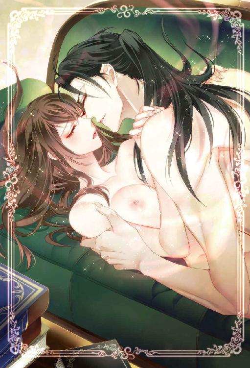
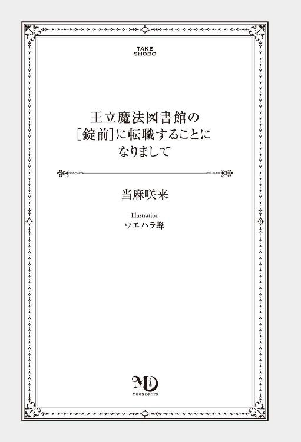
この作品は縦書きでレイアウトされています。
また、ご覧になる機種により、表示の差異が認められることがあります。
一部の漢字が簡略字で表示されていることがあります。
プロローグ
──図書館は成長する有機体である。
（ランガナタン『図書館学五原則』より抜粋）
「ああっ......やぁっ......ジェイ、もうムリっ。許してっ......」
這った姿勢で、高く持ち上げた臀部をジェイに後ろから貫かれ、セイラは甘い嬌声を上げていた。彼女の肩より上で揃えられた金色の髪は突き上げられるたびに乱れ揺れる。室内には彼女の高く細い啼き声と、ジェイの乱れた呼吸音が絶えず聞こえていた。そしてセイラは今夜、二人きりの寝室で何度目かの絶頂を迎えていた。
力尽きるようにカクンと腰がベッドに落ちると、うつぶせ寝の姿勢で閉じた足の間に、硬さを維持したモノを再びあてがわれた。
「少し休ませてやろうか？ ......これはこれで、嫌いじゃないだろう？ 俺はまだ休む気になれないからな」
軽く腰を持ち上げるようにして、ジェイは慣れた様子で、体を添わせたまま中に入ってきた。
「ちょっ......貴方、そんなに若くないんだから、無理しない方が......」
「あのな、俺はまだ三十代だぞ。可愛い俺の『錠前』の為なら、まだまだ頑張れる程度には若いんだが」
頂点を超えたばかりのセイラは焦って、身をよじるようにするが、しっかりとジェイに抑え込まれ、休むことなく後ろからゆるゆると腰を送られる。姿勢のせいでぬるついた狭いところを穿つ感覚はセイラを淫靡な気分にさせていく。
「......口ではあれこれ言ってるわりに、お前、中も外もとろとろだな......」
先ほどからの激しい交わりのせいで、セイラの内太腿も、ジェイのソレも蜜にまみれている。ジェイがいつでも絶賛する美しい緑の瞳は、今は快楽に溺れて、普段の聡明な色ではない。艶めいて潤み、とろんとしている。セイラが妖艶な視線を返すと、ジェイのモノは一層硬さを増す。ガチガチに熱をもったソレで、甘やかすように穏やかな抽挿を繰り返すうち、気づけばセイラは全身にじわじわと気持ち良さが広がっていくのを感じていた。
「あっ......ぁあっ......ジェイ......ダメ、また気持ちよくなっちゃ......」
我慢しようとしても、勝手に淫らな声を上げて啼いてしまう。そんなセイラをジェイはさらに言葉で追い詰めていく。
「俺の司書殿は、本当にヤラしいな。セイラ、これで逝くのは何度目だ？」
焦らすように円を描きながらゆっくりと突かれて、緩く引き抜かれるたび、ジェイの引っ掛かりの部分がセイラの良いところに擦れる。その一突き一突きが、意識が遠くなりそうなほどキモチイイ。
「やっ......ダメ、そんなにしちゃ......」
「......そうか、じゃあ、やめておくか」
ジェイが意地悪く答える。その言葉と同時に完全に引き抜かれそうになり、感じ始めていたセイラは思わず、顔を左右に振る。
「ダメだけど......ダメじゃないのっ」
「素直に、イイ、と言ったらいいだろ」
甘えるようなセイラの喘ぎにジェイは再び、ずぷりと熱の塊を挿し込んだ。その勢いでセイラの茂みの奥の感じやすい部分が乱れたシーツに押し付けられる。しかも彼は前から手を回して指の腹にその部分を当て、抽挿する動きに合わせて圧迫するような動きをしはじめた。
「あっ......ダメっ......そんなことっ......ズルい」
思わず文句を言うとジェイは楽しそうに瞳を瞬かせ、セイラの耳朶を食んで弄ぶ。
「ズルい？ 嬉しい、の間違いだろう？ 俺の女神様はこうされるのが大好きなくせにな」
体の芯から、じわじわとこみ上げてくる悦楽に、セイラが甘い声で啼くと、つられるようにジェイの呼吸はますます乱れていく。
「──コラ。感じすぎだ。そんなに締められたら俺がもたない」
汗のつたううなじに舌を這わされて、セイラはビクンと体を震わせる。中が収縮を始め、再び絶頂に向かって反応し始めている。
「あっ......ジェイっ......お願い、今度は一緒にっ......」
セイラが懇願するような嬌声を上げると、
「ああ......俺ももう限界だ。......一緒に逝くか」
吠えるような吐息を零して、ジェイは再びセイラの腰を抱え上げ、激しく叩きつけるような動きを繰り返す。ずちゅ。ずちゅ。蜜に空気を混ぜ込むような淫らな水音が徐々に早まるにつれて、セイラの切ない啼き声はますます切迫していく。
──セイラはジェイの飛沫を体の最奥で受け止めて、ずるりとそのままベッドに体を落とした。そんなセイラをそっとジェイが抱き寄せ、額に優しく口づけを落とすと、彼女は幸せそうな吐息を零す。
そのまま何度もキスをして、十年一緒にいても変わらない、蕩けるように甘い声音でジェイは優しい睦言を囁く。
「本当にお前は可愛いな。何度抱いても飽きないどころか、もっと欲しくなる。セイラ、愛しているよ」
柔らかく細められたジェイのブルーの瞳に、じわりと愛しさが胸にこみ上げてくる。好きで好きでたまらない人に愛情深い言葉を告げられて、セイラもいつものように睦言を返そうとした。
──その時。
ガシャンというガラスの割れる音がして、何かが部屋に飛び込んでくる。咄嗟にジェイがセイラを自らの体でかばい守るようにした。
「──っ」
ベッドに横たわったまま、覆いかぶさるようにして、セイラの盾になったジェイの肩越しに赤い光が降り注ぐ。
「ジェイ？」
そして一瞬後には、光は残像すら残さず姿を消した。けれど光を浴びたジェイの様子がおかしい。「ジェイ......大丈夫？」
セイラを守るような恰好で動かなくなっているジェイの肩に触れると、その体は先ほどまでセイラを抱いていた、熱い肌ではなく......。
「ジェイ！」
鍛えられ、しなやかな筋力を纏っていたその体も、今はただひたすら石のように硬いだけだった。想定外の異変に嫌な予感を抱きながらも、セイラは裸のままベッドから降りる。先ほど何かが飛び込んできた窓辺に駆け寄り、眼下に見える緑の森に目を向けた。
「あっ......」
その時、暗い森を抜けていこうとする白っぽい後姿が見えた。だがフードまですっぽりかぶっているせいでその正体はわからない。
「ミーシャ、すぐ来て！ お願い。ジェイが石化の魔法を掛けられたの。あの男を捕まえて、今すぐ、反呪いをしないと！ イサック、イサックはどこ？」
鬼気迫るセイラの声に、図書館の精霊と騎士が、二人の部屋に飛び込んできた時には、既に男の跡をたどることはできなくなっていたのだった。
＊＊＊
その日、中条美月は背中にボタンがたっぷりと付いた、シックなワンピースを着て、バーのカウンターに座っていた。
「バーテンさん。ジントニック、お代わり」
そしてたった一人で飲んだくれている。
デートのために用意したワンピースを、じっくりと時間をかけて脱がせてくれるはずの恋人は、美月の傍らにはいない。それどころか深夜近くになり、バーの客は美月一人しか残っていない。普段飲まない酒に泥酔し、普段使わないような言葉でクダを巻く美月に、バーテンはビジネスライクに付き合ってくれている。
（こんな客、困るだろうな）
脳の片隅で冷静に判断してはいた。だが飲んでクダを巻く以外、美月は自分の心を保つ方法を持っていなかったのだ。
（『君のハジメテをもらったからには、一生大事にする』って言ってたのに！）
ジントニックの入ったグラスをたたきつけるように、乱暴にカウンターに置いた美月を見ても、バーテンは慇懃な態度を変えようとはしない。一見丁寧に見える対応にさえ苛立ちを感じてしまって、美月はつい抑えようもなく叫んでしまった。
「──既婚者が大事にするのは、自分の奥さんと子供だけにしてよねっ！」
──ほんの一時間半ほど前に発覚した、最悪な事実。
それは、二十六歳まで大事に取っていた美月の処女を奪った初めての恋人が、既婚者だったということだ。美月はそんなことにはまったく気づかず、当然、独身男性に告白されて付き合い始めた、と思っていた。
だが、初めて一夜を共にしてから三日後の今日。デートの最中に、男の辻褄の合わない話が気になった。違和感を追及すると、悪びれることもなく、男はあっさりと自分が妻帯者だと認めたのだ。しかも『妻とは不仲で......』というありがちな話までセットにして。
とりあえず自分を引き留めておこうというゲスな男の態度に嫌気がさし、その場で綺麗サッパリと、絶縁宣言した美月だったのだが......。
「......ダメだな、男慣れしてない女って......」
美月は纏めていた長い髪をおろすと、指で梳る。
（綺麗だねって言ってくれた髪だけど、もう短く切っちゃおうかな）
涙に潤んだ目元を、指先で掬う。
恋愛経験豊富な友達に相談すれば、バッサリ切り捨てられそうな、ダサくて浅い、どこにでもある失恋話だと、自分でもわかっている。なんで男の秘密に気づけなかったのだろうと、悔しさもある。そして自分が知らない間に、男の家族を傷つけるようなことをしたかもしれないと気づくと、そんなことに巻き込んだ男自身も恨みたくなる。
だが、それ以上にそんな最低な男を恋人だと勘違いした、馬鹿で単純な自分が情けなくて悲しい。悔しいけれど、初めての夜を一緒に過ごしたいと思うほど好きだと思ってしまったのだ。
（大好きだったのに......。ずっと一緒にいたいって思ってたのに......）
結局、最初からずっと噓をつかれ、裏切られていたのだ。なのに、つい未練がましいことを考えてしまう自分に美月は吐き気を感じる。まあ吐き気に関しては、飲み過ぎが理由の八割を占めていそうだったが。
「バーテンさん、もう一杯！」
「あの......もうしわけありません。もうオーダーストップの時間なのですが」
バーテンは申し訳なさそうにそう告げる。美月は、深いため息を一つつくと、カウンターにお金を置き、フラフラと店の外に出た。
「あー。月が綺麗」
天空には妖しいほど真ん丸の、仄かに赤味がかった満月が上がっている。何故かその月は、二重に滲んで見えた。
（私、相当酔っぱらっているのかな？）
美月はその理由を、自分の酔いのせいだと思う。
気分は最悪だったけれど、酔って熱を持った頰に夜風が気持ちいい。はたはたと少し強い風にスカートが靡く。こんなに飲んだのは生まれて初めてかもしれない。明日の出勤は午後からだから、起きる時間を気にしなくていいのが、唯一の救いだった。
「でもな......」
正直、明日は仕事に行きたくない......と美月は思う。
ずっと独り身だった美月に彼氏ができたことは、おしゃべりな同僚のせいで、既に職場で面白おかしくニュースになっていた。今日だってちょっとおしゃれなワンピースを着ていただけで、周りに冷やかされ、気の早い上司に『いつ結婚するんだ』とまで聞かれている状況なのだ。
それなのに、相手がまさかの既婚者で、馬鹿みたいに騙されただけだったなんて。
（そんなの......誰にも言いたくない！）
美月は最悪の事実を否定したくて、頭をぶんぶんと左右に振る。すると途端に酔いが回って、えづきそうなほどの吐き気がこみ上げてきた。
「まずい。......ちょ、ちょっと休もう......」
ふと視線を上げた先に、こんな時間にやっているお店らしきものがあった。入り口には温かそうなオレンジ色の光を放つアンティーク調のランタンが釣り下がっている。何のお店かよくわからないけれど、少し座れたら、吐き気も落ち着くかも。最悪トイレだけでも貸してもらえたら、と美月は、その都会には不釣り合いな重厚な木の扉に手をかけた。
（あれ......？）
扉が開くその直前に、向こうから緑と苔と土、そして微かに闇の気配が混ざり合った風が吹いてくる。
『ここは成長を続ける有機体。そして来館者の求めるものを供する場所。お前の求める物のために、運命の扉は開かれる』
（何？ どこかで聞いたことのある言葉のような気がするけど）
耳元で吹き抜ける一陣の風と共に響いてきた声に、美月は酔いで朦朧とした頭の中の記憶を探る。その答えを見つける前に、美月は風に巻き込まれるようにして、その扉を開いていた。
──それが異世界に通じているなんて、まったく思いもしないで──。
第一章スカウトは突然に
ギィィィィ......。
美月が街中で何気なく手を伸ばした立派な木の扉を開くと、そこには見渡す限り、本の森が広がっていた。いや、正確に言うと、無数に連なっている本棚が森のように見えていたのだ。
「......何、これ？」
本棚ばかりなのに、なぜか辺りは深い森の香りが漂っている。美月は都会の片隅で出会った予想外の光景に、目を見開いてゆっくりと視線を上にあげた。
（......って天井、高っ......。入口から見た時には、こんな天井の高い店があるようには思えなかったけれど......）
美月は酔いで碌に働かない頭で、さっきまで繁華街にいたはず、と記憶を辿りなおしている。
天井から床まで、美月を取り囲むように、ずらっと並んでいるのは、木製の大きな本棚。高い天井からは、見事な細工がされたシャンデリアに、温度を感じない青白い灯りがいくつも垂れ下がっている。本棚には、ぎっしりと詰まった本。年代物から比較的新しいものまで並んでいるが、背表紙には何かよくわからない外国語のような文字が書かれている。
「初級魔導入門......？」
思わず身近にあった本を手に取る。表紙の金押しの文字に目をやると、その文字があっさり読めてしまった。ぱらぱらと本をめくると、古い本特有の妙に懐かしさを感じる匂いを、鼻腔が捉えた。
──その時。
「ようこそ、王立魔法図書館に。......やっと来てくれたのね」
いきなり奥から女性の声が聞こえて、美月はハッと視線を前に向ける。
「あ、あの。すみません、いきなりお邪魔しちゃって。ちょっとここで休ませてもらえたらって思ったんですが......ここってもしかして図書館ですか？」
町中にこんなアンティーク調の立派な図書館があることに、違和感を覚えながら尋ねると、図書館の奥の暗がりから出てきた女性は、どう見ても日本人の容貌ではなかった。
（......どこの国の人？ ......綺麗な人だな......）
美月の前に立つ女性は、すらりとした高身長に、ショートボブの金髪。深い緑色の瞳に、豊かな胸、引き締まったウエスト、扇情的な腰つきの体を、真っ黒なスレンダーラインのドレスで包んでいる。くびれた腰の辺りに両手を置いて、豊かな胸を見せつけるように張り、美月に対峙するように立っていた。勝ち気に見える大きな緑の瞳で、食い入るように美月を見つめている。
「私はセイラ。王立魔法図書館の司書よ。貴女、私の後継者になって、図書館の司書になってみない？」
「............は？」
突然の誘いかけに、美月は生まれてこのかた、なったことのないくらいの間抜け面のまま、超絶美女の前で言葉を失う。
「あの......今、なんて言いました？」
酔った頭を必死に働かせて、ようやくそれだけを尋ねる。
「だから。王立魔法図書館の司書になってみない？ って聞いたのよ」
ファサリと金色の絹糸のような髪の毛をかきあげながら、美月の瞳を見つめてその女性は言った。
「あの......なんですか、その、おうりつ......まほう？ としょかんって......？」
「王国最高峰の魔法の書籍を集めている図書館なの。そして、今、司書を探しているの」
司書、という言葉だけは、美月にもなじみがあった。何故なら彼女は派遣社員として図書館の司書をしているからだ。ああ、私、図書館司書にスカウトされているのか、と美月は一瞬納得しそうになる。
「って、王立？」
この人の姿から言って、その勤務先は日本じゃないのかもしれない。そう思っておずおずと尋ねると、彼女はにっこりと笑った。
「この扉をくぐってきたってことは、貴女がその資格者なのよ。今すぐ、図書館の司書が必要なの。王国はいいところよ。早速、契約を交わしましょう！」
カツカツカツ、と靴音を立てて近づいてきたその女性に美月はいきなり手首を捕まえられた。にっこり笑って顔を覗き込んで、ねっ。と言われたけれど、流石に『はい』とは即座に答えられない。そんな美月を見て、美女は畳みかけるように言葉を紡ぐ。
「安心して。この仕事をすれば、炊事洗濯掃除、一切の家事はしなくていいし、仕事を辞めた後も王国が身分を保証してくれて、一生安泰で生活できるわよ......」
「あ、あと。貴女にとって最高の、理想的な配偶者が、もれなくついてくるの。知性も人柄も見た目も、どれも文句のつけようのない、素晴らしい男性数人の中から、貴女が選んでいいのよ」
「......え？」
なんだ、その乙女ゲーム的な設定は？ 思わず美月の頭の中で、司書仲間で流行っている乙女ゲームのタイトルがぐるぐると回っていた。なんだっけ、ファンタジー設定で......王子様とか騎士とかに奪い合われ、そして最後にはヒロインが選んだ最愛の男性と結ばれる、そんな内容のゲームだ。
女子高出身、女子大が最終学歴。派遣先もほぼ女だらけの環境しか知らない美月にとって、現実の男性は攻略が難しいと知ってしまった今、その乙女ゲー設定は、なんだかすごく魅力的な申し出に思えた。
「......ねえ貴女。元いた世界から逃げ出したいって思ってなかった？」
その美月の迷いの隙をつくように、目の前の女性の緑の瞳が妖しく輝き、誘惑するように囁く。
「もう変な男に騙されたくない、自分だけを愛してくれる理想の男性と、本当の恋をしたいって思わない？」
「......だって......まさか私が不倫することになるなんて......思ってなかったんだもの」
鋭すぎる美女の言葉が美月の胸に刺さる。瞬間、こらえきれず美月の瞳からほろりと涙が零れた。生真面目な美月にとって、騙された形とはいえ、無関係な女性や子供を傷つけるようなことをしてしまった事実が、一番辛かったのだ。
「悪いのは貴女を騙した男。貴女のせいじゃないわ。それに貴女は、真実を知った瞬間に、好きになっていたその男性を諦めたじゃない」
その女性は慰めるように、優しく美月の髪を撫でると、自然に美月をその豊かな胸元に抱き寄せた。花のような心地よい匂いがする。美月は目の前の女性の言葉に、赦しを得られたように、とても気持ちが穏やかになっていた。そして、酔いが程よく神経を麻痺させる。
「......もう苦しまなくてもいいの。必要なのは、この書類にサインするだけ......。それだけで、貴女一人を身も心も深く愛してくれる素晴らしい男性と、運命の恋をすることができるの」
妖艶な女性は誘うように微笑んだ。
「この扉をくぐり抜けてきた貴女にはその資格がある。貴女は可愛いし、十分綺麗よ。程度の低い男にこれ以上、悩まされること、ないわ」
そして女性は美月の頭の中を見透かしたように、綺麗にルージュを塗った唇の口角をきゅっと上げて言うのだ。
「......それとも明日職場に行って、上司と同僚の、鋭い追及を躱す方を選ぶ？」
その言葉を聞いた瞬間、美月の気持ちは決まった。
「──わかった。ペン、貸して！」
普段より、ぐにゃぐにゃした字になりながらも、美月は酔った勢いのまま、その契約書にサインをしていたのだった。
＊＊＊
──美月は夢を、見ていた。
ゆらゆらと揺れるのは、穏やかな子供の頃を思い出させる心地よい感覚だ。どうやら誰かに抱きかかえられて、移動をしているようだった。頰を寄せたその人の胸元から、深い緑と土の穏やかな香りがして、ひどく切ないような幸せなような、不思議な気持ちになる。ふと美月の眦から、暖かい雫が零れ落ちていく。
「もう泣くな。泣かれると、どうしていいのか困る......」
困惑したような優しくて深い声が頭上から降ってきて、美月は声の主を確認するようにゆっくりと瞳を開ける。
......美月の瞳に映ったのは、どこか懐かしい、朝靄に霞む静かな夜明けの空の色だった。
＊＊＊
「いっ......たたたたたたたたっ」
瞼越しに明るさを感じて、美月が瞳を開くと、窓からは明るい日差しが差し込んでいた。ふわふわのベッドと、普段と違う周りの光景に違和感を覚えて、がばっと身を起こした瞬間、美月はさらなる頭痛にのたうち回ることになった。普段なら嬉しくなりそうな爽やかな朝の光も、今は目に刺さって頭痛と吐き気を起こさせるだけだ。
「......何、ここ」
昨晩の記憶が思い出せなくて、美月がそう呟いた瞬間。
「ミツキ、おはよう。今日はいい天気だよ」
子供のような声が聞こえて、はっと辺りを見渡す。
「こっちだよ、こっち」
声を辿ると、声の主は美月の枕元にいた。猫のような顔に、ウサギのような長い耳と赤い目をした、白くてふわふわした謎の小動物が、美月の問いに答えていたのだ。
「え？ えええええ？」
「何驚いているの。昨日、セイラから紹介してもらったでしょ。オレはミーシャ。この図書館の使い魔。オレも昨夜は真夜中に叩き起こされてびっくりしたけどさ、まあ緊急事態だから仕方ないよね。そんなわけで今日からよろしく」
理解できないことを、流暢にしゃべる愛らしい生き物に、美月は目を丸くする。しかもその生き物は、次の瞬間ふわりと空中に浮いた。
「何？ 何が起きているの？」
（猫ウサギ、みたいなのが......人間の言葉をしゃべるって......。しかも宙に浮いているって......。うん。わかった。私はまだ夢を見ているんだ、きっと）
あまりに異常な状態が続き、逆に美月はパニックにならずに済んでいる。都合よく夢を見ているということで納得しようとした瞬間、
「......ミツキ、まだ寝ぼけてそうだね。さもなければ昨日の酒が抜けきってないのかなあ。昨日の夜、セイラとも会ったでしょ......この『王立魔法図書館』に来て」
「──え？ あああああっ！」
その瞬間、美月の頭の中に、昨日の森みたいな不思議な図書館の光景と、綺麗で色っぽい女の人の姿が浮かんだ。やけくそでペンを取って契約書にサインしたことも......。
「......夢じゃ......なかったんだ......」
顔を上げた瞬間、激しい頭痛が再び美月の頭を襲う。咄嗟に頭を抱え込んでしまうと、
「あれ、ミツキ、二日酔い？ じゃあ治してあげるよ。そうしないと話が始まらないし。今日はいろいろと、もりだくさんの一日になりそうだからね」
そう言うと、ミーシャと名乗る謎の生き物は中に浮いたまま、美月の頭の周りをぐるっと回る。
「............あれ？」
その瞬間、頭痛がすぅっと引いた。
「私、頭......痛くない......」
「うん、今オレが魔法で頭痛の元を取ったから。これからの生活、不安もあるかもだけど、少なくともオレはミツキの味方だからね。ここでは、食事の用意も洗濯も掃除も、オレが助けるし」
とりあえず目の前の猫ウサギみたいな生き物は、美月の味方らしい。そう思えば、その姿は素直に頼もしく見えてきた。
「さあ着替えて、食堂で朝食を食べよう。すぐセイラも来るだろうから......あと、アイツもね......」
そう言うと、何故かミーシャは嫌そうな顔をした。
「おい、猫ウサギ。飯はまだか？」
美月がミーシャの案内で、食堂に向かうと、部屋の中から男の声が聞こえた。普段聞いたことのないような乱暴な口の利き方に、美月は思わず眉をひそめる。
「......うるさいなあ」
さっきまで愛想のよかったミーシャは、途端にむっとした声を上げた。
「今用意する。黙ってイサックは出てきたモンを食べたらいいよ」
それだけ言うと、ミーシャの姿はすぅっと消えた。美月はミーシャにぞんざいな言い方をした声の主が誰だろうかと、部屋の中の様子をうかがう。その瞬間、ドアに向かって歩いて来た男と、真正面から目が合ってしまった。
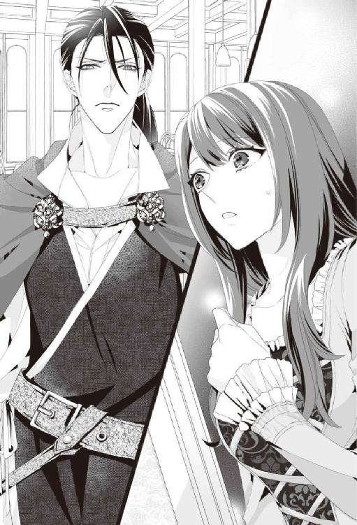
「............お、おはようございます」
「ああ、お前、昨日セイラが拾ってきた『錠前』か」
「え？ じょうまえ？」
美月がおうむ返しにすると、目の前の男は紫色のきつい瞳をしかめて、そうだ、と吐き捨てるように言う。
男は、引き締まった均整の取れた体をしていた。左右の襟を重ね合わせるような、西洋とも東洋とも言えないエキゾチックな服装をしている。重そうに腰からぶら下げているのは......多分、剣のように見えた。
黒く艶やかな髪を後ろで一本に縛って、前髪がはらりと額にかかっている。少し釣り気味の紫水晶みたいな瞳が綺麗で......ドキッとするほど端正な顔をしているが、こちらをギロっと睨みつけた雰囲気から判断すると、自分はあまり歓迎されてないのかも、と美月は思う。さもなければ、単にこの男の性格が悪いのだと判断する。
（なんか......嫌な感じ）
元々男性が得意ではない美月にとっては、こういうとっつきにくい男は一番苦手なタイプだった。思わず救いを求めるようにミーシャの姿を探してしまう。
「............」
男は美月の正体を見破ろうとしているかのように、鋭い瞳で無遠慮に、美月の頭のてっぺんから、足のつま先まで見下ろし、ため息をついて肩を竦めた。
（な......なんなの、一体？）
声に出しては言えないけれど、美月はだんだん男の態度にムッとしてきた。
「あの......貴方はどなたですか？」
表情を硬くした美月の質問に、男はニヤリと唇の端を上げる。
「なかなか気が強い。......気の強い女は俺の好みじゃないが、あのなよなよした従兄弟殿はお気に召すかもしれないな」
男はあっという間に美月との距離を詰めて、次の瞬間、美月の頤を掬って顔を覗き込む。美月はこんな状態なのに、間近に迫る深い紫色の瞳に一瞬見惚れてしまった。キスするほど間近に顔を寄せられて、かぁっと熱がこみ上げてくる。
「『錠前』。さっさと『鍵』を決めろ」
そう言うと荒っぽく頤にかけていた手を離されて、美月は少しバランスを崩してしまった。
「きゃっ......」
転びそうになった瞬間、男が美月の腕を摑み、自分の方に引き寄せる。勢いで男の鋼のような胸元に顔を埋めてしまって、美月は悲鳴を上げそうになった。
「......そそっかしい女だな。まあ司書なんて奴は日常では役立たずばかりだからな......」
胸元に顔を寄せる格好になって、恋人のように抱きしめられながら、美月は男に嫌味たっぷりなセリフを言われた。
「............」
一応助けてもらったのだから、お礼を言うべきか、いや、そもそもこの男が失礼なことをしてきたせいで、バランスを崩したんだから、やっぱりここは態度の悪さに文句を言うべきかと、美月が迷って言葉を失っていると、
「朝から何やってんの。口説いたって美月は貴方のモノにはならないわよ。さっさと座って、食事にしましょ」
部屋の入り口で、聞き覚えのある女性の声が聞こえた。
「ああ、セイラか。この新米『錠前』、少しは役に立ちそうか？」
男はさっき美月にしたよりはもう少し柔らかい表情を浮かべ、セイラに笑みらしきものを見せる。
（何？ 美人には態度が違うって、そういうことなの？）
と一瞬ひがんでしまいそうなほど、朝の光の下で見るセイラは綺麗だと美月は思う。
「イサック、貴方は口の利き方を直しなさいって、いつもジェイに言われているでしょ。この子の名前は美月。ミツキって言葉の意味は、彼女の故郷の言葉で、美しい月、っていう意味なんだって。『鍵』が陽なら、『錠前』は陰。『鍵』が太陽なら、『錠前』は月。彼女の名前、この図書館の『錠前』にふさわしい名前だと思わない？」
その言葉にイサックが返答をしようとした瞬間、雲隠れしていたミーシャがいきなり部屋に姿を現した。
「セイラ、おはよう。早速ご飯にするね」
ミーシャがそう言った瞬間、何もなかったダイニングテーブルに見事な食事が並んでいた。
「美月、ミーシャとはもう話した？ これからここでの生活は、ミーシャがいろいろ手伝ってくれるからね」
（今の料理が現れたのって......ミーシャの魔法ってことかな）
目を丸くする美月に、にっこりと笑みを浮かべたセイラが話しかける。
「おい、お前。警告しておいてやる。セイラを信用すると、えらい目に遭うぞ」
「失礼ね。私は美月にここの良い司書になって欲しいだけ」
「違うだろ、コイツを早く『錠前』に仕立てて、書庫の第三階層を開錠させたいだけだろ？」
「......それは貴方も一緒じゃなくて？ イサック......」
早いテンポで展開される会話に、美月はまるでついていけていない。司書は......ここでの美月の仕事だということは昨日の夜の説明で理解しているが、さっきから出てくる『じょうまえ』という言葉は何だろう。『鍵』とセットで出てくるからには、『錠前』だろうか、と気づく。
「私。ここの司書になって欲しいって言われて、契約書も交わした気がするんですけど。......あの『錠前』って何のことですか？」
美月の言葉に、目の前の二人は顔を見合わせて小さくため息をつく。
「セイラ、お前、説明してなかったのか？」
「したわよ。したけど、この子酔っぱらっていたし、途中で泣きだしちゃって、話を碌に聞かずに寝ちゃったから......」
二人は顔を見合わせ、ため息をつくと、改めてセイラが美月の方へ向き直り、まっすぐに見つめた。
「じゃあ、もう一度ちゃんと説明するわね。貴女の仕事のことと、それからどうしてこの図書館に貴女を招き入れることになったのかということも......。そうね......。昨日の話を覚えてないなら、どこから話したらいいかしら......」
朝食を終えると、食後のお茶が湯気を立てているテーブルの上に、セイラは頰杖をついた。
「昨日名乗ったけど、私はセイラ。この図書館の司書よ。そしてこの口の悪い男はイサックと言って、この王立魔法図書館を護衛する騎士なの。他にも騎士がいるけれど、それは後で説明する」
かすかにセイラは切なげな表情をして、そう呟いた。イサックはセイラを複雑な表情をして見つめる。
「この国の名はイスヴァーン。人はこの国のことを『魔法と騎士が守る緑の王国』と言うわ。そして国を支える最高峰の魔法が仕舞われているのが、ここ『王立魔法図書館』なの」
セイラの説明を聞きながら、美月はまるで自分がファンタジーの物語の中に入り込んでしまったような気がしていた。
（違和感は半端ないけど......まずは全部話を聞こう。私が必要とされている間はココで仕事しないといけないみたいだし......まあ、来られたんだから、きっと帰ることもできるんだろうし）
魔法がどうとか言うのが本当なら、多分ここは日本じゃないし、下手したら地球ですらない気がする。でも言葉は通じるし、ミーシャが用意してくれた朝食も美味しかった。全体的にそれほど酷いことにもなっていない。とりあえず昨日までの日常の生活には、しばらくは戻りたくないし、そもそも契約書を交わしたのなら、その契約はきちんと果たさないといけないよね、と律儀に美月は考える。
「この図書館の書庫にはこの国の最大の秘密、古来からの魔法の奥義が仕舞われているの。当然、書庫には簡単に入ることはできない。普段は鍵が掛かっていて、必要な時には『鍵』で開けて、入ることができるのだけど」
そこでセイラは困ったような笑みを浮かべた。
「その書庫の『錠前』は、この図書館の司書本人が、そして『鍵』は選ばれた男性がなるの」
「......言っている意味がよくわからないんですけど」
美月がそう言い返すと、セイラは微苦笑をして、目の前のティカップに手を伸ばし、ゆっくりとお茶をすすった。
「『錠前に、鍵を挿しこめば、書庫の扉が開く』──ということだ」
呆れたようにイサックが言い放つ。するとセイラが言葉を継いだ。
「イサックが言うように、美月の体が書庫の『錠前』になって、美月が選んだ男性が『錠前』の『鍵』の役割を果たすことになるの。そして『鍵』を『錠前』である美月の体に受け入れると、書庫が開く、とそういうことね」
「............」
やっぱり意味がわからない。そういう顔をしていたのだろう。イサックは盛大にため息をついて、さらに続けた。
「察しの悪い女だな。つまりだ、お前が選んだ男が、お前と男女の交わりをすると、『錠前』に『鍵』が挿しこまれた状態になって、書庫の鍵が開く──そういうことだ！」
かすかにイサックの顔に朱が差す。その熱が、じわりと美月に伝わってくる。
（そ、そういうことだって......つまり男の人と......エッチすると、鍵が開くって......そういうこと？ 『錠前』って......そういう意味だったの？）
思わず椅子から立ち上がり、声を上げようとした瞬間、熱が上がりすぎて、クラクラとめまいがしてくる。
「──え？」
ふわっと意識が遠くなりかかった瞬間、少し離れていた距離にいたはずなのに、イサックが美月を抱き留めていた。たくましい腕の中で男性の肌の香りに包まれ......直前の会話の恥ずかしさに、心臓がバクバクと激しく高鳴る。
「あ、あの、ごめんなさい。ありがとう。助けてもらって」
咄嗟にお礼を言って、慌ててイサックの腕の中から抜け出すと、イサックは鋭い瞳を柔和に細め、小さく笑った。思いがけず笑顔を見せると、イサックは優しい表情になる。その笑みを見た瞬間、美月の心臓はトクンと弾むような鼓動を刻んでいた。
「......まあ、普通に考えたら驚くのも仕方ない。気にするな」
だが、一瞬の笑顔の後は、また不機嫌な顔に戻る。
（でも今、笑った......）
無愛想な人の、一瞬見せる微笑みは凶器だ。イサックの笑顔を思い出し、何故だか美月は胸が甘く締め付けられるような気がした。
「とりあえず俺の仕事は、この図書館の護衛だ。お前がこの図書館の扉をくぐってここに来たのならば、お前が次の司書ということで、お前を守ることも俺の仕事になる」
不機嫌そうに一気に言われて、それに対してカチンと来そうなものなのに、さっき一瞬だけ彼が見せた笑顔が胸に焼き付いて、離れない。
（こういうのって、男の人に慣れてないからだよね。あのゲス男に対してもそんな感じだったし。それだけでこんな風になっちゃうなんて。......悔しい）
美月は赤く染まりそうな顔を誤魔化すように、慌てて顔を引き締めた。
「美月。そんなわけで『鍵』候補の男性は三人いるの。だからその人達と会って、どの人を『鍵』にするか選んでもらいたいの。できたら早急に......お願いっ」
セイラは美月の体をぎゅっと抱きしめて、震える声で懇願した。
（......何か......理由があるのかな？）
美月はセイラの変化に、胸にざわざわとするような不吉な予感を抱く。
「早く......書庫の鍵を開けないといけないの。反呪いを掛けないと、あの人は......」
セイラの鬼気迫る言葉に、美月は瞳を見開いた。
「あの人を助けられるのは、美月だけなの......」
なんだかよくわからないけれど、この人がこんなに苦しんでいるのなら、そして彼女を救うことができるなら、『鍵』探しがどんなものかはわからないけれど、どうせあんな形で処女も失ったことだし、私のもう汚れちゃった体ぐらい、好きに使ってもらったらいい。と美月はその時、半ば本気で思っていたのだった。
第二章王子様とのお見合いは、いきなりベッドの中で
「ミツキ......美しい月と書くんだね。なんて綺麗な名前なんだ。ミステリアスでエキゾチックな君にぴったりだ......」
深い琥珀色の瞳を持つその人は、美月の頰を指先で辿り、甘く優しい声で囁く。長い睫毛を伏せて、少し長めの金色の髪を鬱陶しそうにかきあげ、切なげなため息をつく姿も、見惚れるほど綺麗だ。
「怖がらないで、愛しい人。君が運命の人でよかった。君を見た瞬間、ああ、この人だったんだって心の中が温かくなったんだ。だから恥ずかしがらないで、僕の目を見て......」
（そ、そんなこと言われたって、無理だからっ......）
美月は互いの体温が伝わるほど薄い、ワンピース風の服を身に着けただけの姿で、『鍵』の一人目の候補者、この国の第三王子である、アルフェの腕の中にいる。
『鍵』候補者に会う、と言った瞬間、美月は図書館横に用意された寝室に案内され、レースと絹がふんだんに使われた薄物に着替えさせられていた。それは一見、豪華なワンピースにも見えるほど洗練されたものだが、下着は用意されておらず、その触り心地の良い布は美月の素肌に纏いつき、体のラインも肌の陰りもすべて透けて見えてしまう。
裾は長めだが、サイドと前部分には深すぎるスリットが入っていて、ひどく頼りない。胸元のラインも大きく開いており、大きなリボン一つで止められていて、解けば合わせが開くように作られている。まさに艶事のために用意された衣装のように思えた。
（いくら急ぐって言われたって......これってありなの？）
と文句を言うタイミングを失ったまま、気づけば、あっという間に王子と見合いという名のベッドシーンが始まっていたのだ。
一つだけ確かなのは、セイラは噓をついてはいなかった。王子は整った容貌をしていたし、優しくて紳士的な人だった。だとしても......。
「......ねえ、美月、大丈夫？ 君に触れてもいい？」
仮にも一国の王子様相手に、今更無理とはもう言えない。美月はぎゅっと目を瞑って頷いた。次の瞬間、ふわりと優しい唇が、美月の額に落ちてきた。
「美月は男性に慣れていないんだね。どんな女性が『錠前』として僕の目の前に現れても、『鍵』候補であるからには、心底愛しなさいと教えられてきたけれど、君がこんな風に愛らしくて、恥ずかしがり屋で嬉しい。僕に頼ってくれる様子がすごく愛おしいよ」
静かな部屋の中で、額に頰にキスをする微かな音だけが聞こえている。ゆっくりと瞳を開くと、視界に飛び込んでくる端整な男性の顔に、美月はカッと体中に熱がこみ上げた。
「......王子。あの......」
「もう何も言わないで。ただ僕の指と唇の愛撫に、君は甘い声を上げて、縋りついて啼いてくれたら、それだけでいい......」
ベッドで美月を押し倒している男性の、金色の髪の毛が、彼の目の上にふわりと落ちてくる。それを再び鬱陶しそうにかきあげ、その手が壊れ物を触れるように、そっと美月の頰を包み込む。
「......んっ......」
今までされたことがない程、優しくキスをされて、美月の頭の中は薄く靄が掛かる。王子の体がぴったりと美月に添って、その微かに冷たい肌に、背筋がゾクリと震えた。
「美月、可愛い。キスだけで体がこんなに上気しちゃっているんだ......」
恥ずかしいことを指摘されて、さらに熱がこみ上げてしまう。美月が、あぁっと切なげな吐息を上げると、鼻腔に部屋で焚きしめられた甘いお香の匂いを感じる。それは美月がリラックスできるようにと、王子がわざわざ用意してくれた最高級の香だという。
「でもそれだけじゃないよ。君が少しでもリラックスして、僕を受け入れやすくするために、ほんの少しだけ媚薬が混ぜられている。だから君が乱れてもそれは薬のせいで、君がはしたないからじゃない......」
一瞬、えっと思った美月だったが、王子がゆっくりと美月の薄物の胸元をはだけたせいで、尋ねるべきセリフを失う。
「美月ってどこからどこまでも綺麗だね。......透き通るくらい白い肌。キスしてもいい？」
既に媚薬交じりの香が効いてきているのか、美月ができた返事は、王子に口づけられて零す甘い吐息だけだった。王子は満足げに息をつくと、ついばむように、首筋から鎖骨へ、胸元へと唇を落としていく。
「本当にきめが細かくて、艶やかな肌だね。たくさん可愛がってあげたくなる」
キスの合間にも甘い言葉が次々と降り注ぐ。
「素直に声を上げていいんだよ。美月の可愛い声をもっと聞かせて......」
（なんだか......すごく気持ちいい......）
官能的な香りが漂う部屋の中で、こんな風に成り行きにまかせていいのだろうか、と理性が思う反対側で、美月は与えられる快楽につい溺れそうになる。前の経験の時とは何もかもが違っていた。王子は紳士的で優しくて、甘い。ただ身を任せてさえいれば、次々と快楽が与えられるみたいで、美月がためらう間もなく、吐息は喘ぎに変わりつつあった。
「ほら、見て。美月のココ、凄い敏感なんだね。こんなに硬くして......僕に触れて欲しいの？ それともキスして欲しがっているの？」
気づけば薄物は体にかすかにまとわりつくほどまで乱されている。胸の蕾が硬く尖って、ツンと立ち上がっているのが薄物の胸元に見えた。
「やっ......恥ずかしいっ」
「恥ずかしくなんてないよ。感じてる美月のココは素直で可憐だ......」
ゆるゆると焦らすように、王子は薄物をずらすと蕾の周りだけを、指先でくるくると撫でている。
「......ぁっ......ぁあんっ......」
ジンと胸の先に血が集まっていく感じがする。蕾に触れて欲しくて、ますます敏感になってしまう。
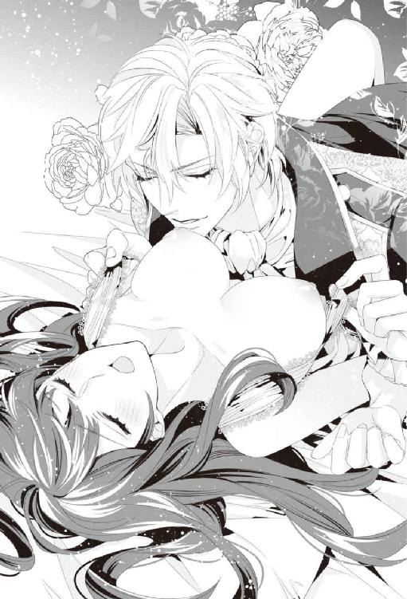
「......もうだめ。美月のココ。美味しそうで我慢できないよ」
次の瞬間、王子が指先でリボンを解き、薄物から美月の胸を完全に露出させると、艶色を増した蕾を唇でとらえた。
「ああっ......」
思わず腰が揺れてしまうほど気持ち良い。ピチャピチャという隠微な音と共に、ねっとりとした温かい舌が、美月の硬く尖った頂点を舐める。そのまま吸いつかれ、甘嚙みされた。
「ぁっ......あっ......」
咄嗟に王子の腕にしがみついて、甘い声を漏らすと、彼は嬉しそうに笑った。
「......美月って感じやすいんだね。ホント可愛い。もうトロトロに溶けているのかな？」
ゆっくりと唇が、美月の敏感な部分を目指して滑り落ちていく。胸の下方から、敏感なウエストを、楽器を愛でるように指先で弾かれて、あっという間に美月のすんなりとした足を王子がとらえている。
「......美月の、ここ。見せて」
いやだという暇もなく、膝を抱えられて、大きく体を開かされた。それだけでトロリと蜜の漏れ出す感覚がある。
（やだ......私、すごく感じちゃっているんだ......）
ほんのさっき出会ったばかりの人に、こんな風に体を開かれて、物欲しげに蜜を垂らして......。そんな自分を想像したら、恥ずかしさにかぁっと熱がこみ上げてきて、咄嗟に顔を覆っていやいやをする。
「可愛い顔を見せてくれないの？ こんな恥ずかしいところは、僕に見せてくれているのに」
大きく足を開かれて、次の瞬間に温かいものをそこに感じて、美月はひと際高く啼いてしまう。
「ぁっ......ダメっ......そんなところ......」
蜜があふれる場所を舌で搔き回されて、美月は声を上げて啼く。
「美月のここ、すっごく美味しいよ。もっといっぱい食べてもいい？」
容赦なく王子がそこを押し開き、舌をねじ込むようにして、美月の蜜にまみれた壺口を舐めとろうとする。じゅる、じゅっ。蜜を吸われるあられもない音が静かな室内に響く。
「ぁっ......はぁっ......んっ......やああっ」
舌先で穿つように入り口を執拗に搔き回されて、美月はシーツを握りしめて、快楽を受け入れるのに必死になる。
「そう、いい子だね、緊張しなくていいから、ゆっくり呼吸して。もっともっと......僕を受け入れて。たっぷりと気持ちよくなって」
唇だけでなく、指がそこを撫ではじめ、くちゅりくちゅり、といういやらしい水音に美月の甘い喘ぎが絡む。
「ねえ。聞こえる？ これ、美月の体が悦んでいる音だよ。僕に触れられて嬉しくて、こんな音を立てているんだよ？」
「あっ......は......ずかしいっ......ダメっ」
「ダメじゃないよ。指だけでも美月、こんなに喜んでいるんだから。もっと奥まで欲しいよね」
つぶり、という感触があって、ゆっくりと美月の中に王子の指が入ってくる。
「あああああっ」
美月は瞳を見開き、唇を半開きにしたまま、淫らな声を上げる。
「......ああ、僕の指を美月が飲み込んでいくよ。そんなに欲しかったの？ 可愛い人」
「あっ。それしちゃ、ダメっ......」
ぐちゅぐちゅ、と蜜が搔きだされる音がして、それと共に、王子の長く繊細な指が、美月の敏感な部分を何度も掠める。
「ダメって言いながら、凄い気持ちよさそうだよ。ぐちゃぐちゃで蜜だらけで、すっごくいやらしくて可愛いよ、僕の美月は......」
王子は甘く囁きながら、美月の脚を左右に開き、中心に唇を寄せる。剝き出しになった敏感な芽を、ちろちろと舐められて、美月は体の奥底から湧き上がってくるような初めての感覚に声を上げた。
「......やっ......怖いっ......だめだめっ」
必死に逃れようとしても、華奢に見える王子の体は思った以上にたくましくて、美月の体はしっかりと抑え込まれ、与えられる快楽かられることができない。
王子の舌と指は優しく、それでいて執拗に彼女の秘部を責め続けている。そして部屋には美月の中から漏れる、ぐちゅりぐちゅりという蜜を混ぜ合わせるような淫らな水音と、切なくて甘い啼き声、王子のいやらしい囁きだけが聞こえている。
「怖くないよ。美月のここは、ちゃんと僕を受け入れようとしてくれているから。でも今日は『鍵』は回さないよ。そういう約束になっているからね」
「だからその代わり、僕を美月の体に教え込んでおくね。僕が欲しくて、たまらなくなるように、僕の指と舌と唇を、美月の感じやすい体にたっぷりと刻み付けてあげる。次も僕を呼びたくなるように......すこしずつ、たっぷりと狂わせてあげるから......」
ジワリジワリと高まる感覚に、美月はぎゅっと瞳を閉じた。王子の指先を受け入れているところが、激しく収縮を始めている。
「大丈夫、美月の体はとってもいやらしくて、僕にこうされるのがすごく好きみたいだよ。すぐ、気持ちよくなっちゃうんだね。ほらもう、僕の指を締め付けている......」
舐めまわす舌を一瞬離して、王子は淫らな吐息交じりに囁く。それから再び、王子は蜜まみれの壺と芽にしゃぶりつき、ねっとりとした唇と舌で愛撫を繰り返す。
ぷっくりと膨らんだ芽を舌先でじっくりと弄られていくうちに、突如湧き上がるような感覚が起きて、アッと思った次の瞬間、美月は初めての感覚に、意識がふわりと浮き上がる。
「ぁああああああああっ......」
はじけるような感覚と共に、高みまで一気に駆け上がっていく。
──そして美月は生まれて初めての絶頂を、その体で受け入れていたのだった。
「美月、すごく可愛かったよ......」
王子は腕枕で美月を抱き寄せながら、柔らかい微笑みを向けた。思いがけず乱れてしまった自分が恥ずかしくて、美月は顔を伏せる。
「......美月は本当に恥ずかしがり屋さんだね。でも......さっきはすごく淫らで愛らしかった」
耳元で甘い囁きを受けながら、美月は自分がしでかしてしまったことに、どうしようもなく羞恥心を感じていた。
（でも......こうするより仕方なかったんだよね......）
美月は朝食の後、セイラの部屋で見た光景を思い出し、深いため息をつく。
「可愛い人、どうしたの？」
王子はどうやらピロートークも完璧なようだった。自分だけ先に逝って、そのまま『ゴメン、疲れているんだ』と言ってさっさと寝た、どっかの馬鹿とは大違いだ。
少なくとも私は男の人を知らなさすぎたのだ。とこっそりともう一度ため息をつく。しかも、多分自分はまだ、人を本気で好きになったことすらないのだ、と美月は実感していた。
（あの二人の深い愛情に比べたら......）
結局、こんな無茶な話を受け入れたのは、あの光景を見たからなんだ、と美月は王子の腕の中で、数時間前のことを思い出していた。
＊＊＊
「それでどうする？ まずは仕事の説明をするのか？」
尋ねてきたイサックのセリフに、はっと表情を戻したセイラは、
「そうね、まずはその説明をしないとね」
にっこりと、昨夜と同じ艶やかな笑みを見せ、ついてきて、と美月に告げた。
セイラについて建物の外に出ると、図書館は図書館棟と、住居棟に分かれていて、住居と図書館は中庭を通じて繫がっていた。外に出て初めて気づいたが、図書館は深い森の中にひっそりと建っていて、辺りにはうっそうとした森が広がっていた。
（私が最初に嗅いだ、あの深い森の匂いはこれだったんだ......）
心地よい緑色の香りを胸に吸い込んで、美月は辺りを見渡す。日の光は温かく心地よい。図書館から森の中には大きな道が一本だけ抜けていて、それは森の向こうからかすかに見える城と繫がっているようだった。深い森の中で、図書館の周りだけ明るく拓けており、中庭には、綺麗な花が色とりどりに咲き乱れている。
「この庭は、オレが丹精しているんだよ」
ミーシャが嬉しそうに美月の周りをくるくると回る。
「え、ミーシャが？ どうやって？」
美月が尋ねると、ミーシャは長いしっぽをふわりと美月の首元に巻き付けて、そのまま肩に降りてきた。空中に浮きながら美月の肩に後ろ足を乗せているのか、それは羽が乗っているほど軽い。
「オレは使い魔だからね。この図書館の庭を整えることもオレの魔法で全部やっているんだよ。ほら、こんな風にね」
そう言った途端、ポンポンと明るい音を立てて、美月の目の前の花の蕾がどんどん開いていく。
「す......すごいっ」
思わず歓声を上げると、ミーシャは嬉しそうにくすくすと笑った。その様子が可愛くて、頭を優しく撫でてやると、ミーシャは心地よさそうに美月の首に長い耳を擦りつけた。そんな二人を見て、セイラは目を細める。
「美月がミーシャと仲良くなってくれてよかった。この先は図書館棟になるの。一緒に来て」
図書館棟のエントランスを抜けると、廊下にそっていくつか扉があり、その一番奥に見覚えのある大きな扉があった。
「あの......。昨日は私の住んでいた街のビルに、この扉があったんです」
美月が昨日の記憶を思い出しながら言うと、セイラはふふっと笑う。
「そう、この魔法図書館の司書になれる条件は、この扉を見つけて入って来られる人、なの」
ギィィィィィと音を立てて扉を開くと、昨日見た本棚の森が目の前に見えた。美月はその光景を見ただけで心が躍る。
ふとそのうちの一冊に目が向いて、本の背表紙を見ると、本に書かれている文字が読めることを思い出した。
「......セイラ、私。ここの本が読めるみたいなんです......」
背表紙を撫でながら、美月がセイラの顔を見上げると、彼女は小さく笑う。
「だって美月、言葉も普通に喋れているでしょ」
「そういえば......最初からそうだった......かも」
「それに、そもそも文字が読めなかったら、司書なんて仕事、できないしね」
くすくすと笑うセイラの様子に美月は深く頷いた。
「そうですよね。確かに......」
それから二人で図書館の本棚を見て回っていく。たとえ知らない国の図書館でも、本の森は楽しい。いや知らない国の本棚だからこそ、余計に興味が惹かれる。
（ホント、この国の文字が読めてよかったな。魔法とかそういうもののおかげなのかな......）
図書室の奥にある整理棚で目録を確認しながら、美月は安堵のため息を漏らす。もちろんパソコンはないし、電子データ管理はおろか、本の背には請求記号のラベルすらついていないけれど、既に図書館の本は整理されていて、一定の規則に従って美しく並べられているように見えた。この法則を理解して整理していけば、司書の仕事に関しては何とか理解できそうだと美月はホッとする。
「さて、今度は、ここに来てくれる？」
図書館はホールのように円形になっていて、一番奥にある整理棚と整理棚の間に、もう一つ扉がある。セイラはその前まで美月を案内すると、
「ここは第一階層の書庫。普通の閉架図書が仕舞ってあるの」
鍵を使って扉を開けた。どうやらドーム状の図書館の周りに帯のように書庫は存在しているらしい。途中まで進むと、もう一つ扉が出てくる。
──ガチャガチャ。
鍵穴のないその扉は、ドアノブを回しても、音はするけれど、扉は開かない。
「ここは第二階層への扉。ここから先は、『鍵』がないと開かないわ。ちなみに階層は全部で五階層まであって、二階層から先の扉は、貴女が『鍵』を受け入れないと、開かないの」
「あの、セイラはここの司書だって言ってましたよね。だったら自分で『鍵』が開けられるんじゃないんですか？」
「ええ。今も私はここの司書よ。でも今......私は『錠前』としては機能できないの。私の『鍵』が使えないから......」
美月の言葉にセイラは、瞳を伏せて力なく笑う。
「『鍵』が使えない理由。それを美月にもわかって欲しいの。ついてきてくれる？」
セイラはそれ以上何も語らないまま、美月達を図書館の外に連れ出した。
明るい日差しの下で、苦し気な表情をしたセイラの後を、美月は不安な気持ちでついていく。さっきまで陽気だったミーシャすら何も語り掛けてこない。
また住居の方に戻ると、さっき美月が利用していたのとは逆方向の階段を上り、別の部屋の前にたどり着く。セイラは慣れた手つきでそのドアを開けて、美月達を中に招き入れた。
そこは人の住んでいる気配が濃厚な部屋だった。少し散らかったリビングのソファーには、セイラが着るには明らかに大きなガウンが掛けられている。綺麗に洗われている大きめのカップと少しだけ小さなカップが、今まさに一緒にお茶を飲んでいた、というように並んで机の上に置かれていた。
セイラは何も言わずそのリビングを抜けて、奥の扉に向かった。美月はその後をついていく。
「──ジェイ、入るよ」
部屋の入り口で一声掛けて、セイラは部屋の中に入った。ジェイという名前は、今朝ダイニングでイサックとセイラのしていた会話の中で聞いた気がする。奥には大きなベッドがあって、誰かが寝ているようだった。そのベッドサイドに腰を掛け、セイラはその人の頰を優しく撫でた。
「来て......美月。この人が私の『鍵』。ジェイよ......」
セイラの声はその名前を呼ぶだけで愛おしげに震えた。ジェイは病気なのだろうかと思いつつ、美月はゆっくりとベッドに近づく。
挨拶をしようとして、美月は目の前の光景に言葉を止めた。そこには、瞳を閉じたまま、眠っているように見える男性がいた。年齢はセイラや美月よりは少し上だろうか。たくましくて、成熟した大人の男性のように美月は思う。そしてその手はなぜか、不自然にこちら側に伸びていて、美月は彼が、何かから誰かを守っているように見えた。
だけど、その人の顔色は、明らかに普通の人のそれとは違っていて。
「あ......あの......」
「......この人、三日前に石化の魔法を掛けられたの。多分魔法の標的は私で、ジェイは私をかばってくれたんだと思う。彼は図書館と私を守る騎士で、私の『鍵』だから......」
緩やかに触れるセイラの指は、ずっと離れがたいように、愛おしげにジェイの肌を撫で続けている。セイラの唇は微かに何か唱えているように動いていた。指先からは柔らかい緑色の光が漏れ出して、ジェイの肌をかすかに緑の光で照らし続けている。
「セイラはあの日からほとんど眠らずに、時間を遅らせる魔法を掛け続けているんだよ」
ミーシャがジェイの枕元に降り立って、美月の方を見上げて言う。
「石化はね、ゆっくり進行していくんだ。だからまだジェイは完全には石化してないけど、そうなってしまうともう戻せなくなる。そしてその時まで、あまり時間がない」
ミーシャはふわりと飛び立つと、今度はセイラの肩に降りる。
「治すことはできないの？」
美月が思わずそう尋ねると、セイラは視線をその男性に向けたまま、答えた。
「......完全に石化する前なら、反呪いの魔法があれば、元に戻せるの」
「じゃあ、それなら......」
美月がほっとして、そう声を上げると、セイラは力なく顔を横に振った。
「石化に対する反呪いは、図書館の第三階層に仕舞われている魔法なの。呪いは一度発動してしまったら、なかったことにはできないから、術者を探し出して、そこに返さないと解除できない。だから掛けるより、解く方がずっと難しくて、それは書庫に仕舞われるほどの高度な魔法なの......」
だったら、と言いかけて美月は気づく。
「......そう。今の私は『鍵』が使えない。ジェイを救いたくても、『錠前』を開けてくれる人は、彼しかいないの......だからどうやっても、私には第三階層の扉が開けられない......」
セイラの瞳からほろりと涙が零れ落ちた。その涙はジェイの肌を淡い灰色の筋をつけて流れ落ちていく。セイラをかばったこの男性なら、目覚めていれば優しくセイラの涙をぬぐったに違いない。
（この人を、セイラの元に返してあげたい......）
「あのっ」
気づけば、美月は涙で瞳を潤ませながら、ぎゅっと自分の両手を握りしめ、セイラに声を掛けていた。
「......私も『鍵』さえあれば、その反呪いのある部屋の、扉を開けることができるんですか？」
そして美月はその後、『錠前』として『鍵』を受け入れるための儀式について説明を聞くことになったのだ。セイラの話によれば、『鍵』候補者の中から、自分の『鍵』になる男性を探し出して、その人と関係を持つことで美月も『鍵』が開けられるようになるという。
「だからまず『鍵』を開けるためには、美月の『鍵』の男性を探さないといけないの。合わない『鍵』では扉は開かないから。......もし美月が構わないというのなら、まず一人目の候補者に今日の夜、来てもらうことにしてもいいかしら？」
焦りのにじむセイラの声を聞いて、時間が本当にないのだ、と美月は悟った。だったらその候補者に、まずは会ってみよう。美月は即座に決意した。
「わかりました。じゃあ今日の夜、一人目の候補者の方と会います」
ふと、そう答えながらも不安な気持ちが一杯になる。
「あの。『鍵』候補の中から、どうやったら『鍵』の人ってわかるんですか？」
もしわからなかったら、または間違えた人を選んでしまったら。そう思って尋ねると、セイラは首をかしげた。
「本能的にこの人ってわかるはずよ。私はジェイに最初に触れた時にわかったから。それでもわからなかったら肌を合わせてみるしかないと思う」
不安げな表情をする美月に、セイラは気持ちを引き立てるように必死に語りかける。
「でも大丈夫。ほとんどの場合は、契りを結ぶ前にわかるはず」
（ち、契りって......エッチ......しちゃう、ってこと？）
固まってしまった美月の顔を見て、セイラは美月の背中をバンバンと叩いて、笑顔を見せた。
「大丈夫よっ。それに万が一、『鍵』が誰か判断できなくても、『鍵』を開ける儀式さえすればわかるから。違う『鍵』なら開かない。『鍵』が合えば開く。簡単なことよ」
そう言われても、全然心は穏やかにならない。知りもしない人と、そういうことをすることになるかもしれないのだ。最悪の場合、候補者全員と......。
（でも、多分そこまでにはならないよね）
──だったらまずは頑張ってみるよりない。そう美月は決意したのだった。
＊＊＊
「......美月？」
王子の腕の中で、美月はいろいろ思い出して、うっかりと深いため息をついてしまっていたらしい。
「僕と......する、のはあんまり良くなかった？」
しかもどうやら違う方面に心配をさせてしまったみたいだ。落ち込んだような顔をしている王子に、慌てて美月は顔を横に振った。
「そんなこと......ないです。あの......あんな風になったの初めて......でしたし......」
（男の人に触られて、感じちゃったのも......生まれて初めてだったし）
美月がこみ上げる熱を頰に感じながら、恥ずかし気に俯くと、王子は瞳を輝かせた。
「そうか、『鍵』はね、『錠前』の女性を気持ちよくさせないといけないんだよ。女性の感じ方で、開く階層の深さが決まるんだって」
王子はそっと美月の額にキスをして、ゆっくりと体を起こした。
「......でも、このまま美月を抱きしめていたら、またさっきの続きをしてしまいそうだし、自分自身も満たされたくなってしまいそうだから、少し外を散歩しない？」
そっと美月の手を握って、王子は美月を抱き起こす。
「──っ！」
次の瞬間、裸のままだった自分に気づいて、美月は真っ赤な顔をして、胸元を手で隠した。
「......美月」
王子はそんな美月の胸元にキスをして、困ったように笑う。
「ホント......可愛すぎて目の毒だ。先に部屋を出ているから、着替えたら、外においで」
用意されていた薄紫色のドレスを着てから、王子を追って外に出ると、すっかり夜も更けている。
「美月、そのドレスとても似合っているね......」
王子は美月をエスコートするように手を取り、夜の図書館の中庭を歩きはじめた。美月が空を見上げると、重なるような月が二つ。
（やっぱり......ここは地球ですらないのかも......）
なんでこんなところに来てしまったのか、と物思いにふけりそうになった瞬間。
「美月？」
名前を呼ばれ、軽く頰にキスされて、美月は思わず顔を赤く染めた。月明かりに、王子の金色の髪が映える。大きな茶色の瞳が優しく美月を見つめていて、その視線にじわり、と体が熱くなる。
「美月はここの世界の人じゃないんだってね。急に別の世界に連れてこられて、さぞかし不安だろうね。なのに、ジェイとセイラのために、こんな風に頑張って......」
労わるように柔らかく髪を撫でられる。張り詰めていた気持ちを王子が分かってくれたような気がして、美月は思わず涙が溢れそうになった。
「『鍵』候補はあと二人いるけれど、あまりいろいろ考えなくていいよ。そりゃ『鍵』に選ばれたらとても光栄だけど、選ばれなくても仕方ないこと。全ては図書館の采配だからね」
「すぐ選べる人もいるけれど、美月は外の世界の人だし、今回はトラブルが発生して行われる予定外の『鍵』選びの儀式だから、むしろ順調にはいかないかもしれない」
ゆるゆると髪を梳きながら、王子は美月の顔を覗き込み、美月を励ますように、にっこりと笑う。
「もしかしたら、鍵を回して確認するところまで行くかもしれないけど、皆、美月のことを高貴な姫君みたいに、大事に触れると思うし、儀式の部屋の中のことは神事と一緒だから。美月の存在を汚すようなことにはならない。安心していいよ」
王子の唇が、柔らかく美月の額に触れて、ドキンと鼓動が高まる。夜風が吹き抜け、火照った頰に心地よく感じる。
「......とはいえ儀式の部屋でのことは、現実の世界のこととは隔絶したことだってわかっていても、他の人が美月に触れるって思うと、切ないな......。僕が君の『鍵』だったらいいのにって、つい思ってしまうね......」
王子の声が儚く宵闇に吸い込まれていった。甘くて切ない声に、胸がきゅんと鼓動を刻む。
（もし......王子が『鍵』の男性なら、大事にしてくれそうなのに）
ふと美月がそんなことを思っていると、
「美月......」
そっと頰に触れて、王子が美月の顔を仰向かせる。優しくて触れるだけのキスをされて、美月は言葉を失う。こんなに大事にしてもらえて、最初の候補者が王子でよかったな、と美月は改めて思っていた。
だけど、セイラが言ったみたいな『この人が鍵だ』と思える実感なんて何もなく、これからまだ続くであろう『鍵』探しの事を考えると、不安な気持ちは完全に無くなることはない。
（こんなことの繰り返しになるのかな。私、耐えられるんだろうか......）
美月が不安を感じて深いため息をつきそうになった、その時。
「......アルフェ」
闇の中から聞き覚えのある声がして、はっと美月は王子から体を離した。そんな様子を見た王子は、くすりと小さく笑って、美月を抱き寄せ直す。
「......イサックか。図書館の騎士が、『鍵』選びの儀式に何の用？」
暗闇の中から顔を出したのは、不機嫌そうな顔をしたイサックだった。
「もう図書館の閉館時間が近い。──『鍵』候補者は帰る時間だ。とっとと退出するがいい」
「......まったく。いつもにもまして不機嫌そうだね。まあ、仕方ないか。お前はこの可愛い司書殿を守るだけで、触れることもできないんだからね」
さっきまでの王子とはまったく違う、意地の悪い言い方をする。
（この二人、知り合いなんだろうか。しかもどっちかっていうと仲の悪い......）
美月がそんな風に思うほど、二人の間の空気は剣吞だった。
「............」
仁王立ちになって、自分を睨み付けるイサックを見て、王子は肩を竦める。
「ってことで、無粋な騎士に邪魔されちゃったから、僕はそろそろ帰るよ。美月、また近いうちに会おうね」
そう言うと、美月の左手を取り、手の甲にキスを落すと、王子はその場を立ち去っていく。
「さっさと部屋に戻るぞ」
それを見届けるより前に、機嫌の悪そうなイサックは少し乱暴に美月の手を取り、さっさと図書館の住居棟の方に向かって歩いて行った。
第三章サディスティックな魔導士は、甘く誘惑する
「この本は......こっちの棚か......」
王子と会った翌日、美月は朝から図書館の整理をしていた。だが本を手に取ったまま動きを止めてしまう。つい思い出してしまうのは、昨日の王子との逢瀬だ。
（......昨日の王子様......。やっぱり『鍵』の人じゃないのかな......）
思わず熱っぽいため息が漏れてしまう。昨日は必死であんな恥ずかしいことをしてしまったけれど、冷静に考えてみると羞恥心でどこかに逃げ込みたいような気になる。だけど、一方でジワリと体が火照る感覚もあって......。
（とにかく、こんなことがあと二人も続いたら、私、絶対おかしくなりそう......）
セイラはどの人が『鍵』なのか触れた瞬間にわかった、と言っていたけれど、異性関係に関して疎い自分には、こんな状況はどう考えてもキャパオーバーだと、つい文句を言いたくなる。
「はぁ......どうしよう......」
集中力を欠いたまま、体を伸ばして、少し離れた書架に本を戻そうとした瞬間、
「わあああああっ！」
美月はバランスを崩してしまう。問題はふらついたのが、三メートルほどの長い梯子の上で、天井に近い位置の書架前だったことだ。
（......ここから落ちたら、痛い......だけじゃすまないかもしれないっ）
ふわりと体が宙に浮き、両手が摑むものを求めて、虚空を搔く。
──誰か、助けてっ！
遙か下の床に、全身をしたたかに叩きつけられることを覚悟して、身を硬くしたその時。
──ドサッ。
激痛が全身を襲う、と思っていた美月は、床ではないしっかりしたものに抱きかかえられていた。
「......え？」
思わず恐怖に瞑っていた目を開くと、目の前に紫色の瞳が覗き込んでいることに気づく。
「......梯子の上で本の整理をする時には、気を付けろ」
呆れた様子で言うと、すたすたと美月を抱きかかえたまま歩き始めていたのは、イサックだ。鋼のように硬い胸元に顔を押し付ける恰好になった美月は、恐怖を忘れて、ドキッとしてしまった。
「なんで？ さっきまで図書館の中にはいなかったのに」
疑問が湧いて、おずおずとイサックを見上げる。そういえば、食堂で最初に会った時も、少し離れた距離にいたのに、転びそうになった自分を支えてくれたことを美月は思い出した。
「──それはお前が、俺の守るべき相手だからだ」
疑問の声を上げた美月に、にこりともせずにイサックは答え、そのまま足を止めた。紫色の視線が自分に降ってきて、間近で目が合うと頰が熱くなる。嫌な奴だと思っているのに、いつも体が先に反応してしまうのはどうしてなんだろう。
「って、ごめんなさい。私、重たいから、降ろして......」
イサックがずっと自分を抱きかかえて歩いていることに気づいて、美月は慌てて降りようと身をよじった。
「お前程度の女を抱えても、重いとも思わない。黙って大人しく抱きかかえられていろ。しゃべる荷物は扱いにくい」
しゃべる荷物と言われて、美月は咄嗟に言葉を失う。けれど助けてもらったことはお礼を言わないと、と考え直した。
「あの、ありがとうございます」
下からイサックを見上げると、喉から頤のラインに男性らしさを感じて、見てはいけないものを見てしまったように、妙に恥ずかしい気持ちになってしまう。
「......ふっ......」
そんな美月の様子に気づいたのか、イサックは小さく笑った。
（......あっ。笑った......）
イサックの笑みには何か特別なものがあるのか、と思ってしまうほど、美月の胸をドキッとさせる。彼に嫌われているんじゃないかと思っているから余計なのかもしれない。
イサックは焦る美月を抱えたまま図書館内を歩き、入り口にあるソファーに降ろして座らせた。美月は男性の腕の中にいるという緊張から解放されて、ほっと吐息をつく。
「......お前、もしかして男に慣れてないのか？」
イサックは、そんな美月の顔を覗き込んで、不思議そうに尋ねた。
（──っ。なんでそんなことまでわかっちゃうの？）
美月の疑問が聞こえていたかのように、イサックは言葉を続けた。
「......俺に抱きかかえられている間、体がすごく強張っていたからな」
「あの......多分、そうなんだと思います」
イサックの紫色の綺麗な瞳を見ていると、つい美月は素直に認めてしまっていた。
「だったらなんで、『鍵』選びなど引き受けた？」
その言葉に美月は顔をふるふると横に振る。
「......だって、セイラとジェイを見たら、それ以外の選択肢なんて思いつかなくて......」
つい語尾が震えてしまう。無意識で膝の上できつく手を握りしめていた。
「......男が怖いのに、あいつらのために『鍵』探しを引き受けたのか。──本当にお前は、お人よしの馬鹿だな」
そんな美月の様子を見て、ぽつりと呟くと、イサックは美月の元から立ち去るように、背中を向けた。だが数歩進んで、ふと足を止める。
「さっきの答えだが」
「──え？」
唐突に言われたイサックの言葉に、美月が首をかしげると、彼は背を向けたまま言葉を続けた。
「俺は『錠前』を守るモノだ。だから図書館の敷地内であれば、どこでも一瞬でお前の元にたどり着く。たとえお前が『鍵』の相手と儀式の部屋にいたとしても、俺の名を呼んで助けを求めれば、俺はお前を助けてやることができる」
目の前の背中は広くて逞しくて、美月の知らない強い男性の気配がした。美月は深くて心地よいその声を聞きながら、トクンと心臓が高鳴るのを感じる。
「お前から見たら怖い対象かもしれないが、俺は『鍵』候補のように、お前に触れることはできない。だから安心したらいい。そして困った時にお前を助けてやることはできる。どんな時でも怖い思いをしたら、遠慮せずに俺を呼ぶがいい。俺は図書館と......お前を守る騎士だからな......」
「──あ......」
それだけ言うと、イサックは大股で立ち去る。美月はその背中をただ、見送ることしかできなかったのだった。
＊＊＊
（今日はせめて、もう少し流されないようにしよう）
美月はひそかにそんな決心をして、夜を迎えた。あえて儀式用の薄物には着替えず、ドレスのままで、ソファーに座って、二人目の候補者を待っている。
（今度はどんな人が来るんだろう......）
正直不安な気持ちがないわけではない。男性に慣れてない美月では、昨日のような展開になってしまうかもしれない。だとしても、自分で納得した上で『鍵』の人かどうか確認したい。美月が儀式に前向きに挑戦しようと思えたのは、昼間イサックとした会話のおかげだと思う。
『俺は図書館と......お前を守る騎士だからな......』
一瞬耳元で、あの深い声が聞こえた気がして、美月は目を閉じる。
（私が助けを呼べば、一瞬で来てくれると言っていた）
『鍵』を開けるための儀式の部屋は、図書館本館に繫がる廊下の途中にある。美月が求めれば、その部屋の中まで助けに来る、とイサックは言ってくれた。もともと男性が苦手な美月にとって、知らない男性と二人きりになる、この儀式が怖くないわけがない。だが彼がそう言ってくれたことで、美月は気持ちが少し楽になっていた。
（口は悪いし、最初の印象は嫌な奴だったけど、でもイサックは噓をつかない人のような気がする。もしかしたら意外といい人なのかもしれない。まあ、かなり無愛想だけど......）
「ってことで、とにかく！ 早く『鍵』の人見つけないと」
美月が両手でぎゅっと頰を挟んで気合を入れた瞬間、ドアの開く音がする。
「こんばんは。司書殿」
「は......はひっ」
美月は思わず声が緊張で裏返ってしまった。それに対してなのか、くくっと笑うような声が聞こえ、グレイのフード付きのマントを目深に羽織った男が、薄暗い部屋に入ってきた。部屋に入ってくると、マントを脱ぎ、それをコート掛けに掛ける。
こちらを振り向いた男性は、痩軀で身長が高かった。短めの銀色の髪に、銀色の細いメタルフレームの眼鏡を掛けている。無機質な眼鏡のレンズの向こうから、聡明そうなブルーグレイの瞳が美月を確認すると、ふっと表情を和らげた。
「自己紹介をした方がよさそうだな。俺はヴァレリー。魔導士ギルドの上級魔導士だ。そして、貴女の『鍵』候補だ。......初めまして、司書殿」
ヴァレリーは王子とはまた全然違うタイプだが、知的な風貌で整った顔立ちをしている。彼は黒く塗った爪先を美月の方に伸ばして、握手を求めるように手を差し出した。
（......とりあえず、あんまり怖そうな人じゃなくてよかった......）
美月はほっとして笑みを浮かべ、その手を取る。
「あの、初めまして。私は美月です」
そう挨拶をした瞬間、
「美月、か。......ところで、その衣装も愛らしいが、それでは今夜の目的は遂げにくいと思うのだが......」
言われた瞬間に、美月が着ていたドレスは、儀式の部屋に用意されていた薄物よりもっと生地が薄く、肌を覆う範囲が狭いものに変わっていた。その上、ヴァレリーは握手した手を自分の方に引っ張り込み、気づけば、美月は淫らな恰好で彼の腕の中、という状況になっている。
「──え？」
美月が慌てて、自分の扇情的な服装を確認し、不安げに目の前の男を見上げると、男は少し悪そうな笑みを浮かべた。
「さっき俺は魔導士だと、自己紹介しただろ？」
そう言った次の瞬間には、美月はヴァレリーと一緒にベッドサイドに移動していた。
「え？ ......あの、なんで。どうなっているの？」
びっくりして辺りを見回す美月を見て、ヴァレリーは笑みを深めた。
「まあ、落ち着け」
次の瞬間には、男の手には赤い液体の入ったグラスがある。美月は突然空中から現れたように見えたグラスを信じられない思いで、じっと凝視した。
「上級魔導士にとっては、こんなのは手慰みにすぎないと思わないか？」
さりげなく渡されたグラスを、美月は胡乱げに見ながら、じゃあさっきの服装が変わったのも、場所が移動したのも、全部魔法なのか、と今更ながら気づいた。
「驚かしたのなら悪かった。初見の挨拶代わりに、いい酒を用意した。ここに腰かけて、ひと口飲んでみてくれ」
（何かの果実酒......かな？）
ベッドの端に腰かけると、再度勧められて、美月はグラスに顔を寄せて香りを嗅ぐ。フルーツの心地よい匂いがして、美月は、特に疑うこともなく、その液体に口をつけた。
「......あ、美味しい」
緊張で喉が渇いていたこともあって、そのお酒は口当たりよく美味しく感じた。一気に半分ほど飲み干し、にっこりと笑うと、ヴァレリーも笑みを返す。
「そうかよかった。それは果実酒に媚薬を混ぜたものだ。じき体が火照ってきて、男に触れられたくてたまらなくなる」
「──え？」
「早速リラックスしたところで、俺が『鍵』の男かどうかを確認してくれ......」
当然のようにヴァレリーに言われて、美月は慌てて持っているグラスを確認する。
「媚薬？ な、なんでそんなものを飲ませているんですかっ」
「なんだ知らないのか？ 『錠前』の官能が高まらないと、図書館の書庫の第二階層すら開けられない、ということだからな」
そう言いながら既にヴァレリーは美月の腰のラインを確かめるように撫でている。
「ちょ......あの？」
「だから緊張を取るために、『鍵』側から、媚薬交じりの香やら、酒やら、薬やら、あれこれ『錠前』に摂取させることはごく普通に行われているのだが......」
（そういえば、昨日、王子も媚薬入りの香がどうのこうのって......）
今更そんなことを思い出して、思わず美月は、なるほど、と頷いてしまいそうになる。
（いやいや、ちょっと待って。そういうことじゃなくて！）
必死に頭を整理しようとしている美月の手から、ヴァレリーはグラスを取り上げる。それは、次の瞬間空中で姿を消した。その光景を呆然と見つめていた美月は、すっかりヴァレリーのペースに乗せられたまま、気づけば、ベッドに押し倒されていたのだった。
「えっ。あの、ちょっと待って？」
ちゃんと話をしようと思っていたのに、気づくと何故か、前回よりさらに淫らな薄物を身に着けた状態で、ベッドの上にいる。
「......なんだ？」
「......だって......ぁっ......」
首筋にヴァレリーの唇が押し当てられて、思わず体をピクンと震わせてしまう。
「まだ薬が効いてないだろうに、お前、元々感じやすいのか？」
くくっと楽しそうに笑うと、そのまま美月の両手首を枕元に抑え込んで、胸元にキスをいくつか降らせた。
「あのっ。ちょっと......ぁっ......待って......」
「......話は後で聞く。今はこっちの方が楽しそうだ......」
ヴァレリーはそれで話は終わったとばかりに、眼鏡を外しベッドサイドに置くと、美月の頰を撫でる。
「今日は俺が『鍵』の男かどうか、確認するのが先決だろ？ 『鍵』探し、急いでいるようだしな」
唇が触れるほど近くで囁く。
「あ......でもっ」
「まだあれこれ言いたがるのか。......煩い口だな。さっさと塞いでしまうか」
「......んっ......ぁ......」
いきなり深く口づけられて、美月の頭の中には、ますます混乱が深まっていく。
「......ぁ......はぁ......んんっ......」
呼吸をする暇も与えぬほど深いキスをされて、美月の意志とは別に、じりじりと体が火照り始めていた。滑らかな舌が美月の口の中に侵入して、彼女の舌を絡めとり、ねっとりと刺激し始めると、脳が溶けそうな感じを覚える。
「......さっきの媚薬が少し効いてきたか？」
最初のキスの時は硬く緊張していた体が、ヴァレリーのキスに翻弄され、解けるように柔らかくなると、ようやく彼は唇を離し、確認するようにじっと美月の顔を見つめる。じわじわと体温をあげる自分の体に、恥ずかしさを感じて美月は目線を下に向けた。
「......その物慣れない様子もいじらしくていいが、どうせならもっと乱れさせたくなる......」
ヴァレリーが言った次の瞬間、美月の視界は真っ暗になった。
「え？」
慌てて目を瞬かせても、ヴァレリーの顔も確認できないほど真っ暗な状態に美月は動揺する。
「......とりあえず、お前の視覚を一時的に遮断した。なんでだかわかるか？」
思わず黒一色の視界に怯えて、辺りを確認するように顔を左右に振ると、暗闇の中から、優しい指先が美月の髪に落ちて、そっと髪を梳る。焦点のあわない瞳でヴァレリーの声がする方を見上げると、耳元でからかうような声が聞こえた。
「人間は視覚に頼って生きている。だが目隠しをされて視覚を奪われると、その分、他の感覚が敏感になる」
耳元でピチャリと舌が音を立てると、そのまま温かい舌が耳朶の縁を辿るように這う。
「きゃ......っ」
耳元で蠢く舌の感触に思わず体が震える。確かにヴァレリーの言う通り、目が見えない分、聴覚と触覚が敏感になる。いやらしく蠢く舌に耳を舐られ、犯されるたびに美月は甘い吐息を零し始めていた。
「......ぁっ......やぁんっ......」
声をあげた途端、耳から唇が離れる。本来ならほっとしそうなものが、どこか物足りなさを感じていることに気づいて美月は、真っ暗な虚空を見渡す。
「......あっ......」
次の瞬間、首筋に唇の感触を感じて、喘ぎを漏らしてしまう。そのまま軽く首筋を嚙まれて、背筋がヒヤリとするような恐怖を感じた。優しく肩から鎖骨に掛けて指先で触れられて、そのギャップにまた声が漏れてしまう。
「......次は、どこに触れて欲しい？」
「──っ......」
どこにも触れられてない一瞬が、もどかしいほどの不安を誘う。一瞬の間の後、胸元にキスを落とされて、安堵と共にまた高く喘いでしまう。
「美月、お前の啼く声はなかなか、俺の嗜虐心をそそるな......」
くくくと喉の奥で絡むような笑い声を零して、舌先が胸の辺りを這いながら、薄物を剝いでいく音が聞こえる。静かな部屋に、ピチャピチャと猫が水を飲むような淫らな音と、その感触に思わず甘い吐息を漏らす自らの声が聞こえて、美月は恥ずかしさに身を震わせた。
「肌が桜色に色づいているぞ。いやらしく全身を上気させて、甘い匂いを発して......お前はそんな風にいつも男を誘っているのか？」
胸元に鼻先を擦りつけられ、ヴァレリーが肌の匂いを嗅いでいる気配を感じて、美月はピクンと体が跳ねた。
「そ......そんなことっ」
否定しながらも、チリリと全身から甘い感覚がこみ上げてくる。さっき飲まされた媚薬のせいか、それとも視覚を奪われたせいで普段より肌が敏感になっているのか、
（こんな恥ずかしいことされているのに......なんだか気持ちよくなってきている、私）
朦朧とした頭で美月が考えていると、
「はっ......ぁあっ......」
いきなり胸を強めに摑まれて、その先で既に硬くなっている蕾を舌が掃く。そのまま、ちろちろと舐られるようにして、丹念に刺激されると、ゾクゾクとする悦びが全身を襲った。
「......ココが感じるのか？」
両側の胸を強く摑まれて、感じやすくなった稜線の頂点に吸いつかれて、思わず背中をそらし、愉悦を全身で感じてしまう。
「ぁっ......やぁ......んっ......あっ......」
少し乱暴なほど吸い上げられ、ねっとりと舐られ、何故か痛みより快楽を感じてしまった。右左と、何度もそれを繰り返されていると、見えない代わりに頭の中で、そうされている自分の姿を思わず想像して、頭の芯がぼぅっとなってくる。
「......感じやすいのは、乳房だけか？」
ゆっくりと体をうつぶせにされて、背骨の一つ一つを辿るように唇が落ち始める。もう片方の手が腰をグイと持ち上げると、四つん這いにさせられた。その姿勢が男性側からどれだけ淫らに見えるのか、視力を奪われている美月にはよくわかっていない。ヴァレリーは満足げに、はしたない美月の後ろ姿を堪能すると、腰を持ち上げた手で、美月の突き出された臀部を撫でさすり、その割れ目に指を滑り落とした。
「あっ......」
敏感なところに侵入した指に、思わず感じてしまって、美月が背筋をそらして耐えると、ぐいと膝の間に男の足が割り込む。
「......入り口はこんなに濡れているぞ？」
開かれた内太腿の部分に、濡れた指を擦りつけられると、ぬるりという感触を覚える。
「......いやっ......言わないでっ......」
恥ずかしくて恥ずかしくて、どうにかなってしまいそうだった。感じてしまっている自分を否定したくて顔を必死に左右に振る。
「言うなと言われても、これだけドロドロに垂れてきたら言いたくもなる」
「......違うのっ......」
「......どこが違うんだ？」
優しい口調で意地の悪い囁きかけをしながら、ヴァレリーは冷静に美月を追い詰めていく。
「......こんなにとろとろにして、美月はいやらしい子だな。すぐにでも塞いで欲しいんだろ？」
そう言いながら、少しだけ体を美月から遠ざけた。
「だが、嫌だというのなら、これ以上触れずに帰ってもいい。お互いの相性をみるだけならこれだけでも十分だと俺は思うが」
指先をかすかに太腿の辺りで蠢かせる。今まで背中に寄り添っていた肌が離れると、急に気持ちが満たされなくなる感覚がして、美月は咄嗟に見えない目をヴァレリーの方に向けた。
「......なんだ、言ってみろ？」
誘うように言われて、美月は思わず眉根を寄せる。だが、次の瞬間、蜜を垂らしているそこが、ぎゅっと収縮する動きをしていることに、美月自身も気づいてしまった。
「......素直に快楽をねだったらいい。ここはすぐにでも触れて欲しくて、物欲しげにヒクついているしな......」
ヴァレリーはわざと指先で、蜜にまみれた花びらをつつく。それだけでじわっとまた溶けだしてしまう。
「あぁっ......」
四つん這いの尻を誘うように高く上げて、美月は甘い声を上げていた。
「どうして欲しい？ 俺にねだってみろ。お前が望むようにたっぷり苛めてやるぞ」
「............っ」
「なんだ？」
「お......お願い......」
気づけば美月はそう吐息交じりに懇願していた。
「......何を、俺にねだるんだ？」
「......そこを......触って......っ」
収縮するそこにヴァレリーの視線を感じ、高まる欲求に耐えられなくなって、つい言ってしまったセリフに、美月は恥ずかしさでその場を逃げ出したくなる。だが既に、彼女の腰はヴァレリーにしっかり抱きかかえられていた。
「いい子だ。ちゃんとおねだりできたな」
ぐちゅ......。襞を割り、褒美を与えるようにヴァレリーの指が欲しがりな蜜壺を貫く。そこは悦びに打ち震えながら、何の苦も無く彼の指を受け入れていた。
「ひゃぁあはぁっ......ぁあ......」
その瞬間、美月の脳内を激しい快楽が貫く。奥まで指が伸ばされ、蠢く指が中を確認すると、ゆっくりと引き抜かれる。潤む蜜壺から、粘度の高い隠微な音が室内に響く。
「中は硬くて男に慣れてなさそうなのに、淫らに蠢いて俺の指を吸い付くように締め付けてくるな。感じやすくて教育しがいがありそうだ。いろいろイヤラシイことを教え込んでやりたくなる......」
ぐちゅん、ぐちゅん。
卑猥な言葉と蜜をかき混ぜる音がする。その音は男の指が、美月の中から快楽を搔きだすように、何度も貫く音だった。その音が大きくなるたび、美月は甘い声を上げて、もっともっとと、ねだるように啼いてしまっていた。
ヴァレリーの長い指が蜜壺を探り、中の感じやすい部分を、ぐりっと搔くようにすると、彼女はひと際高い声を上げて、さらなる愛撫を求め体を揺すってしまう。体の動きに連れて胸が揺れ、ベッドのシーツに胸の先が擦られると、そんないやらしい自分に興奮してますます官能が高まっていく。
「随分と淫らな姿をしているぞ」
指で蜜壺を犯されながら、気づけば淫らに腰を振ってしまっていた。さらに深い快楽を得ようとしている美月を、後ろから観察していたらしいヴァレリーは冷静な言葉を紡ぐ。
「獣のように四つん這いになって、貫いて欲しそうに尻を高く上げて。おまけにここまで擦りつけて......こっちにも刺激が欲しいのか？」
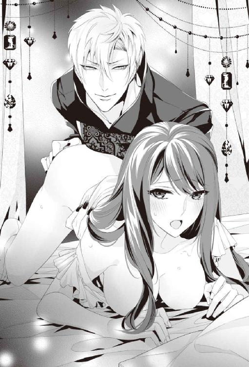
ヴァレリーが手を伸ばし、シーツに擦りつけられ硬く尖った乳房の先端をたっぷり揉み上げると、美月は甘えるような声で啼く。恥ずかしい恰好をしている自分の姿を想像すると、余計悦びが増していくようだった。二つの膨らみを散々弄び、美月を啼かせると、今度は胸から手を離し、蜜壺を貫きながら、もう一方の手で美月の感じやすい芽を捉えて、指先で柔らかく刺激し始める。
「だめ......そんなことしちゃ......だめっ」
感じやすい部分を二カ所同時に責められて、一気にこみ上げる感覚に、美月は悲鳴のような喘ぎを上げる。
「あっ......ぁんっ......はぁっ......だめ、そこは、だめなのっ......」
「......何がダメなんだ？ 俺の手にもっと弄ってくれと押し付けておきながら。ああ、手がお前のイヤラシイ蜜でどろどろだ......」
ヴァレリーの意地の悪い言い方がたまらない。もっと苛めて欲しくて、腰を突き出すようにして、夢中で快楽を貪るように腰を振ってしまう。
「ダメっ。許して......そ......んなにしたら......オカシクなっちゃ......」
「......何が許して、だ。こんなに欲しがっているくせに......この体、媚薬が効いていることを差し引いても、随分と感じやすくて楽しい体だな......。もう限界だろ？ もっと気持ちよくなりたいと、俺の指に当たるほど中が膨らんできているぞ」
美月の懇願する声に、欲望に掠れたヴァレリーの声が重なった。
（いっそ......オカシクなっちゃいたい......）
ヴァレリーの言葉にどんどん追い立てられていく。そんな美月を見て、ヴァレリーはつい釣り込まれたように、ゴクリと喉を鳴らしていた。
「遠慮せずに、そのまま快楽を貪れ。──逝きたければ、逝くまで虐めて欲しいと、俺に懇願しろ」
ずっと冷静だったヴァレリーの声が、微かに上ずり、熱っぽさを帯びる。
（......この人、私に興奮している）
そう気づいた瞬間に、悦びが全身を駆け抜ける。ぐちゅぐちゅと貫く音は、激しさと速度を増している。
（もっと......もっとして欲しい......）
「......ぁっ......お、お願い、逝かせて。......もっ......と私を、虐めて......」
気づけば美月はヴァレリーにそう懇願していた。
「......美月は本当にいい子だな......ご褒美にたっぷり虐めてやるから、やりやすいようにしっかり腰を上げていろ」
そう言いながら、増やした指で中をかき混ぜ、蜜でトロトロになった芽をもう一方の手でコリコリと擦りたてる。蜜にまみれた愛らしい芽は、さらに赤くプックリと膨らんで、ヴァレリーの手の中で、もっと意地悪くいたぶって欲しいと自己主張をする。
ぐちゅっ、ぐちゅっ。ずちゅぐちゅずちゅ......。
いやらしい音が徐々に速度を速めながら、室内に響く。視覚を奪われた美月は、その音と蜜壺を犯すヴァレリーの指にひたすら意識を奪われてしまっていた。徐々に高まる波のような感覚に溺れていると、体の底から何か湧き出すような感覚が襲う。
「......あっ......だめ、もう......逝っちゃうっ......」
「いやぁっ......ダメっ......ぁああああああっ......」
美月は続けざまに叫ぶと、背中を震わせ、腰をヴァレリーの手に押し付けるようにしながら、愉悦の淵に堕ちていく。最後にひと際高い声で啼くと、ずるずるとベッドの上に、体が崩れ落ちていった。
「おっと......」
くすりと笑って、それを咄嗟にヴァレリーが抱きかかえて、そっとベッドに横たえる。
「......あれだけ乱れる姿を見せられて、挿れられないのは、正直、男としては生殺しだな......」
ヴァレリーの困ったような声を、意識が朦朧としたまま、美月は聞いていたのだった。
「......さて、この司書殿をどうしたものかな......」
睦み合いの疲れで、うとうとしているらしき女を見て、ヴァレリーはため息をついた。
「......まあ......楽しませてはもらったが、誰だか知らない奴のペースで動かされるのは、あまり面白い状況ではないしな......」
目の前の女の話ではない。候補者としての使命も、この一時間ほどはたっぷりと楽しませてもらった。面白くないのは、こんな形で始まった儀式の方だ。
「......ん？ 面白くない......？」
寝ぼけたまま声を掛けられて、ヴァレリーは慌てて美月の顔を覗き込む。
「起きたのか、美月」
「はい......あ、あの」
体の上に掛けられていたシーツで身をくるむと、美月は半身を起こし、ベッドで横たわっているヴァレリーの顔を覗き込んだ。
「あの......面白くない状況ってなんですか？」
聞いていたのか、とヴァレリーは小さく吐息をつく。
「さあ、何がだと思う？」
「あの、もしかして、今回の『鍵』探しのことなのかなって思って」
適当に流そうと思った言葉が意外にも真実を突いていて、ヴァレリーは美月の顔を改めて見返した。
「......なんでそう思うんだ？」
シーツを巻いただけの女と交わしているにしては、会話は色っぽさのかけらもない。だが、それはそれで好ましいとヴァレリーは思う。
「だって......ジェイが石化の魔法を掛けられたってことは、仕掛けた犯人がいるってことですよね」
「......そうだな」
ヴァレリーは目の前の女の、さっきの艶っぽい印象とは違う、好奇心旺盛で知的な表情に、ふと興味を引かれた。
「セイラが狙われたのをジェイがかばったと聞きました。だとしたら、『錠前』が開かないようにしたかったのか、さもなければ『鍵』を代替わりさせたかったのかなって思って」
美月の言葉にヴァレリーは楽しそうに笑う。いきなり『錠前』に選ばれて、普通なら動揺したまま流されるのが普通だろうに。どうやらこの女はこの状況の中『そうなった』理由を一人考えていたらしい......。
「なるほどな。だが、何の利益があるというんだ？」
「そこがよくわからなくて。ヴァレリーは何か思いつきますか？ さもなければこのことで、利益を得る人は誰だと思いますか？」
「そうだな......。最初に思いつく容疑者は俺自身ということぐらいだな。俺にとって、この図書館の書庫に仕舞われている魔法は、実に魅力的だ」
ベッドに座って生真面目な顔で話をしている美月を見上げて、ヴァレリーはからかうようにくくっと声を上げて笑った。
「でも、ヴァレリーって、上級魔導士だし魔法も一杯使えますよね。書庫に仕舞われている魔法だって使えるんじゃないんですか？」
考えながら尋ねる美月の言葉に、ヴァレリーは小さく首を左右に振る。
「それは違う。図書館に封印されている魔法は、書庫に仕舞われている魔導書とセットでなければ使用できない魔法ばかりなんだ。それらは通常の魔導士が使う魔導より上位の存在で、ぶつかれば確実に、図書館に封印されている古来の魔法が勝つ。しかも魔導書を見さえすれば、魔導士でなくても扱えるという点も大きい」
ヴァレリーの言葉に美月は黙り込んだ。
「じゃあ......ヴァレリーも、やっぱり『鍵』になりたいって思いますか？」
「......そうだな、魔導をやっている者からすれば、ここは宝の山だからな」
ヴァレリーは手を上にあげて、寝転がったまま、指の隙間を通して図書館本館の方角を見つめた。
「じゃあ、他の候補の人も......『鍵』になりたいって思っているんでしょうか？」
美月の言葉に、ヴァレリーはこの図書館にしまわれている魔導書を巡る、さまざまな権力者の思惑について想いを馳せる。
（だが、今そんなことについて説明をされても、美月も混乱するばかりだな。俺は今のところは、ギルドと俺にとって、不利益が生じなければそれでいい）
そう判断すると、ヴァレリーは唇の端を小さく上げて、笑みの形を作って無難に答えた。
「まあな......『鍵』になること自体も名誉なことではあるし、魔導士でなくとも、この国の最大の秘密を手に入れられることに、魅力を感じる男は多いだろうな。この小さな緑の国が、各国列強と対等に渡り合えるのも、図書館の魔法があってこそだしな」
「そんなにこの図書館は価値があるものなんですね」
美月の言葉にヴァレリーは頷くと、ニヤっと笑った。
「あとは......。まあ『鍵』になれば『錠前』を手に入れることができるからな」
額を撫でるように弾かれて、美月は目を瞬かせ、ヴァレリーを見返す。
「『錠前』を手に入れること自体に、何か意味があるんですか？」
尋ねてきた美月に、ヴァレリーは艶っぽい笑みを浮かべた。
「『錠前』に選ばれる女は、イイ女ばかりだと評判だ。穏やかで性格が良く、知的で話が面白い。閨では素直で感じやすく、だが本質的には一途で、情愛が深い女が多い。図書館の好みがうるさいからと......まあ言い伝えでは、だが」
「言い伝えと現実とでは違うって言いたそうですね」
喉の奥を震わせて笑われて、美月はじろりと剣吞な視線をヴァレリーに送る。拗ねる様子もなかなか可愛げがある、そんな美月を見てヴァレリーは唇が緩む。
「まあ怒るな。真相は知らんが、俺はお前が『錠前』なら、なかなか楽しいだろう、と思うぞ」
睨んだ美月を、ヴァレリーは誘惑するように目で見つめ、頰をゆるりと撫でる。突然の甘い言葉と行動に、美月は今更恥ずかしさを感じたかのように、顔を赤くした。
「じょ、冗談ですよね？」
「......いや、真面目に。お前、今までほとんど男との経験がないだろう？ なのに、あんな風に俺に苛められて、感じすぎて意識まで飛ばす辺り、実に今後の調教しがいがある。いや、本気で俺の好みの色に染めたくなる」
「──え？」
ぎょっとした顔をする美月を見て、わかりやすい反応にヴァレリーはさらに気分が良くなってくる。
「しかも、単に流されるように『錠前』になったのかと思いきや、こんな面白い話を始めたからな。俺はベッドでも日常生活でも、感覚の鋭い女が好きだ。そういう意味で、お前は俺にとってはアタリだったな」
くくっと笑って、美月の手を取り、そのままベッドに押し倒す。
「......きゃ......あのっ、話続けても？」
うなじまで真っ赤に染めながらも、平気そうな顔をしようと努力している。そもそもこんな色っぽい恰好で必死に真面目な顔をされても......。
（──どう考えても、楽しすぎるじゃないか。この女）
「話か？ ああ、好きにしたらいい」
美月は押し倒された体勢のまま、何とか表情だけは真剣な顔をキープし続けている。
「じゃあ、今回の『鍵』候補者かその関係者に、前の『鍵』の人を害した人がいる可能性が高いと思いますか？」
（そりゃまあ、その可能性は十分ありうるだろうな。セイラの『鍵』のジェイ殿は『図書館の騎士』で王弟殿下だ。図書館の利権が王侯貴族に偏りすぎている。ギルドにも、教会にも、それに諸外国もそのことを面白くないと思っている奴は多い。いっそ図書館の『鍵』を取り換えて、権力を分散させたいと考えている奴らは多いだろう）
いっそ自分が図書館の『鍵』を握り、権力をモノにしたいと考えている者もいるかもしれない。ヴァレリーは苦笑を浮かべる。
「『鍵』を害した奴か......。そうだな、俺みたいに図書館の書庫にたっぷりと興味がある奴とかな。まあ俺はそんなまどろっこしいことはしないが」
はぐらかすヴァレリーの冗談をどう受け止めていいのか、考え込んでいる様子の美月の手首を解放すると、彼はベッドに腰をかけ直した。そのまま服装を整え、眼鏡を掛けて、慌ててシーツを纏い直す美月の艶やかな額にキスをする。
「そういうことで、俺は自分の無実を証明するため、あれこれ調べてみよう。だから『鍵』の指名の件は前向きに考えておいてくれ。俺とのベッドでの相性は悪くなかったと、お前も思うだろ？」
ヴァレリーの軽口に返す言葉すらなく、真っ赤になって困っている美月を見て、初心だが、いろいろと教えがいがありそうな女だと、ヴァレリーは意地の悪い笑顔を浮かべた。
「まあ現時点で俺からできるアドバイスとしては、次に来る男は警戒しておくほうがいい。教会の司祭だ。もし『錠前』を欲しがって陰謀を仕掛ける奴がいるとすれば、アイツだと俺は思うぞ。見た目は優男風だが、なかなか野心家だしな」
ヴァレリーはそう美月に伝えながら、教会から来る『鍵』候補者の美麗な顔を思い浮かべていた。
（さて、教会は今回の事件でどう動くだろうな......）
眼鏡越しの視線を美月に向けて、もう一回あいまいな笑みを浮かべると、美月の腕を捉え、座るような恰好に、引っ張り上げる。
「......あっ」
たったそれだけの動きに美月がしっかりと体に巻き付けていたシーツが解ける。もちろん、自然にそんな風になるわけはない。ヴァレリーのいたずらであらわになった胸元に、必死でシーツを巻き付け直そうとする美月の両手首を持ち上げるように抑え込んで、ヴァレリーはニヤッと唇の端を持ち上げた。抑える人の無くなったシーツは物理の法則に逆らわず、美月の腰の辺りまで落ち、豊かな双丘はその先に色づく蕾までヴァレリーの目を楽しませる。
「──いい恰好だな」
そう言うと、ヴァレリーは片手で美月の両手首を背中側で押さえ込むように持ち直すと、反らし気味になった美月の裸の胸にいきなりキスを落とし始める。
「ちょ......ダメっ」
「こんな色っぽい恰好で、見送りをするお前が悪い」
体に残っていた残滓に火をつけるように、ヴァレリーは美月の胸をわざと音を立てて貪り始める。まだ媚薬が残っているのか、あっという間に硬さを増す感じやすい蕾を、舌と指先で散々楽しむと、美月は困り果てた表情で、それでもついねだるような甘い声を上げてしまった。
「......ぁっ......ゃんっ......」
「さて。そろそろ閉館時間だな。......それでは、続きはまた今度」
手首をようやく解放された美月は、必死にシーツを巻き付け直す。ヴァレリーは潤んだ瞳で睨む美月に、わざとらしく姫君にするようなキスを指先に落とし、喉の奥で小さく笑いながら、部屋から出て行ったのだった。
第四章図書館付き騎士の、規律と欲情
「......見張り、大儀だな......」
儀式の部屋の扉が開くと、魔導士の衣装を身に着けた男がイサックに声を掛けた。イサックは顔をしかめたまま、わずかに頭を下げる。
「しばらく待って、彼女が部屋から出てこないようなら、様子を見に行ってやってくれ。本人は自覚してないが......もしかすると立ち上がれないかもしれない」
そう言い置いて立ち去る魔導士の男を見送ると、イサックは深いため息をつく。しばらくその場で待っていたが、美月は一向に部屋の外に出てくる様子がなかった。
「......まったく世話の焼ける......」
誰にともなくイサックはぼやくと、もう一度深く吐息を零して、宙を仰ぎ見る。それから意を決したように部屋に入っていった。
「......起きているか？」
部屋の中には睦言の気配がまだ残っている。イサックは眉間の皺をさらに深めた。
「......イサック？」
弱々しい応えの元を確認するために、彼はベッドのある部屋の奥に向かう。そこにはベッドの上に座り込み、胸元にシーツを巻き付けただけの美月がいて、しどけない姿でこちらを見上げていた。
「......どうした？」
できるだけ普段通りの声を出したつもりだ。それに対して、美月は困ったようにぽつりと呟く。
「あの、ごめんなさい。どうやっても立ち上がれなくて......力が入らなくて、着替えもできなくて......」
不安そうな美月の声に、イサックは返す言葉に詰まる。酒香に混じるのは、甘い媚薬の匂いだ。そのことに気づいた瞬間、男に媚薬漬けにされたらしい美月に対して、身勝手な苛立ちを感じた。
「......まあ、これだけ媚薬を盛られたら、そりゃ、立ち上がれないだろうな」
不機嫌に言うと、イサックはシーツにくるまれた美月を軽々と抱き上げる。
「......あっ......」
潤んだ瞳、上気した肌。秘め言の残り香。思わず漏れる甘い吐息、乱れた髪。
（......勘弁してくれ）
──イサックはなまめかしい美月の様子にカッと全身に熱が集まる感じを覚えた。
（......触れてはいけない女......か）
騎士見習いとして十年前にこの図書館にやってきた時には、周りからも名誉なことだと乗せられて、この国の魔法の秘術すべてを収めた図書館の騎士になることに、ある種の使命感を感じていた。
今もその気持ちに変化はないが、女性を『錠前』として利用するこの形式に関しては、違和感と疑問を、感じざるを得ない。
（こんな風に、異世界から連れてこられて......わけもわからないまま、ジェイの命を天秤に掛けられて、引き受けざるを得ない状況に追い込まれて......）
正直同情するが、この図書館の管理体制が変わらない限り、今後もこういうことがあるかもしれない。そしてそんな図書館の『錠前』を守るのがイサックの使命で、高階層の鍵を開けるために、『鍵』に腑抜けるほど抱かれた『錠前』を保護するのも、今後自らの役目になる。
「このまま部屋に連れて行ってやる。風呂も明日にしておけ。どうせ立ち上がれないだろうからな」
無愛想に言うのは、必要以上に気持ちが乗らないようにだ。同情も、愛情も、関心も必要以上に持ってはいけない。騎士に求められる規律と義務以上に。
「............」
ぐっと唇を嚙みしめて、美月は頷く。かすかに顔を伏せて、表情を見られないようにしているのを気配で理解する。少しでも気分を変えさせた方がいいかと、イサックは月明かりの中、ミーシャによって季節の花で整えられた中庭を抜けて、彼女の部屋に連れていく。
「......これでいい。一晩寝れば、体調も元に戻るはずだ」
部屋に入り、淫らな気配を残す美月の肢体をベッドに横たえて、そっと布団を掛けてやると、彼女はじっとイサックの方を見上げた。
次の瞬間、美月の目尻からすぅっと涙が零れ落ちていった。
「............っ......なんで？」
美月は頰に流れ落ちる涙に指を押し当てて、必死に誤魔化そうとする。だがイサックはその涙の雫に見惚れて、その場から立ち去るのが遅れた。
「......慣れないことをして、参っているんだろう......」
思わず同情心が勝ってしまった。咄嗟に美月の頰を滑り落ちる雫を、指先を伸ばし拭っていた。そのことを後から、たっぷりと悔いることになるのだが。
「............っ......」
ほろほろと零れる涙は、一向に収まりそうな気配がない。イサックは諦めて美月の横たわるベッドサイドに腰を掛けた。
「なんで......私、泣いているんだろ......」
美月は呆然として瞳を開き、瞬きしては、またぽろりと透明な雫を落とす。
「誰も、私に嫌なことなんてしてないのに。みんな大事にしてくれているのに......」
「......さあな......」
泣いている女は扱いに困る。つい守ってやりたくなって、気を惹かれてしまう。しかもこんな恰好でベッドの上で泣かれれば、必要以上に慰めたくなるのも、男の本能だとイサックは思う。
「みんなが親切なのは、私が『錠前』だからなんだよね、きっと」
美月自身、急な自分の情緒不安定さ加減を持て余しているようにみえた。
「......ねえ、イサック、お願い」
「なんだ？」
無愛想に答えた言葉に、応えが一つ。
「............ぎゅって抱きしめて。怖いの」
まだ媚薬が体に回っているのだろう。大きな潤んだ瞳で、甘えるような響きをのせて、美月は誘うように囁く。イサックはその蠱惑的なセリフに、図らずもドキリと心臓を高鳴らせてしまっていた。
「私が、ジェイとセイラを助けないといけないのに............怖くて不安で仕方ないの」
涙に潤んだ瞳で自身を見上げる美月に、彼は内心の動揺を押し隠し、大げさにため息をつく。それからそっと美月に顔を寄せた。
「......これで我慢しとけ」
イサックはそういうと美月の額に子供じみたキスを一つ落とす。抜けきらない媚薬のせいで、上気した肌から唇を離して、イサックが美月を見つめると、唇を歪めて美月は泣き出しそうな顔をした。
「──っ！」
刹那、イサックは瞠目する。
美月の華奢な腕が伸びてきて、自らのうなじに両手が回り引き寄せられると、熱い唇がイサックの唇に触れた。撥ね付けようと思えば、容易に撥ね付けられるほど美月の腕の力は儚く、イサックの胸は狂おしいほど締め付けられた。
「......んっ......」
ぽろぽろと涙を流しながら、美月はどうしてだか唇を離そうとしない。
（なんで......コイツはこんなこと、しているんだ？）
寄せた唇を子供のように重ねるだけで、それ以上美月はどうしたらいいのか、わからずに戸惑っているように見えた。
「ごめんなさい。私っ......」
甘く陶酔するような時が過ぎ、唇がそっと離れ、美月が濡れた瞳でイサックの顔を見上げる。その瞬間、イサックの脳の中で何かが弾け飛んだ。
「......謝っても──遅いっ」
刹那。
今度は、イサックが美月の手首を捉え、その華奢な体を押さえ込むようにベッドに押し付けると、美月の濡れている唇に、自らの唇を強く押し付けていた。
「ぁ......んんっ......」
イサックからいきなり深いキスをされて、美月は甘く呼吸が乱れる。唇を貪り、舌先を絡めるような激しいキスに、美月はキスの合間に艶めいた甘い吐息を漏らす。
（俺は何をしているんだ......）
イサックは自分に自問自答しつつも、キスを止めることが出来なくなっていた。口づけを繰り返すたびに、美月の体は発火しそうなほど熱を上げていく。絡める舌に、おずおずと応えるような様子を見せるのは、美月の素直な性格が透けて見える気がした。だがぎこちない仕草は本人が言っていたように男に慣れていないことをイサックに知らしめ、その事実は何故か彼にじわりとした喜びを感じさせる。禁じられている相手との甘い口づけに、そのまま溶け堕ちてしまいそうな誘惑を感じてしまっていた。
「......ふぁ......はぁ......んっ」
堪えきれずに美月の唇から悩ましげな声が漏れ始めると、イサックのキスはますます熱を帯びたものに変わっていった。壊れそうなほど高まる鼓動と共に、ふれあう皮膚の感覚はどんどん研ぎ澄まされていく。
──ホウ......ホウ......。
その時、夜の鳥の鳴き声と、羽ばたきの音が聞こえる。
「......くっ......」
そのまま美月のすべてを奪ってしまいそうな、深い陶酔感から逃げ出すようにして、イサックは緩く銀糸を引いて唇を離す。美月の甘美な舌に、イサックの呼吸も心も乱れていた。
「............イサック？」
弾んだ吐息で名前を囁かれ、切なげな表情で自分を見つめる美月の顔を見て、イサックは短く息を吐き出した。それから全身全霊を集中して理性を働かせ、そっと美月の上気した頰から指先を離し、自らに言い聞かせるように囁く。
「お前は......『鍵』のものだ。そして俺は『錠前』を守るのが使命だ。俺は『鍵』候補じゃない。お前に触れることは禁じられているんだ」
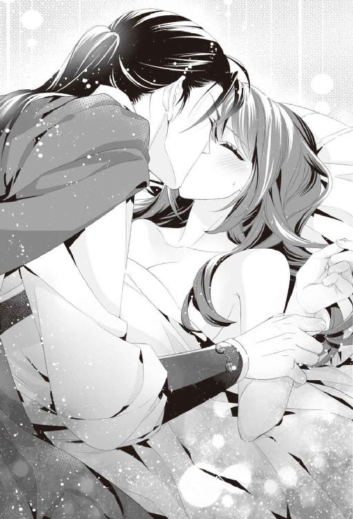
「......じゃあ私が『錠前』だから、イサックは優しくしてくれただけ？」
イサックの言葉に、美月はひどく傷ついたような顔をした。その表情を見るとイサックは余計、彼女を傷つけたくはない、守らないといけないと感じてしまう。ともすれば甘い情欲に走りそうな心を抑え込むため、もう一度ため息を漏らした。
「......さあな。だが少なくとも今のキスは、お前を『錠前』だと思ってしたわけじゃない」
（だが、これ以上は......ダメだ）
心の中で自分に言い聞かせる。
（コイツは、自分のためじゃなく、名誉でも権威のためでもなく、ただ偶然知り合った一組の恋人達が幸せになれることを願って、こんな儀式を受け入れる奴だからな）
今も媚薬を盛られて立ち上がることすらできずに、泣き出しそうな顔をしている。それなのに、異世界で頼る人間もなく、たった一人ですべて受け止めようとしていたのだ。限界まで耐えて、緊張の糸が切れて、ようやく自分に救いを求めてきた。美月はそんな女なのだ。
「......少し寝ろ。寝るまで傍にいてやる......」
すがるような瞳に、ついイサックは、そう告げていた。
──踏み込みすぎた。
ほろ苦い気持ちを抱きながら、イサックは口にした言葉を違えることなく、枕元に鞘ごと剣を置き、ブーツだけ脱いで、ベッドに体を乗せた。その微かに震えている体をしっかりと抱き寄せる。もう一度、熱っぽい美月の額に柔らかく唇を落とすと、美月は瞳を細めて、嬉しそうな笑みを浮かべた。その笑顔を見た瞬間、胸に湧きあがる言葉にしようのない感覚を、イサックは必死で気づかないふりをする。
「ありがとう......」
ぎゅっとイサックの袖を握りしめる美月の細い指先が、イサックの体中に、再びじわりと熱を発させた。
（勘弁してくれ。これ以上、俺の理性を壊してくれるな......）
イサックは美月を抱き寄せて、自分を見つめる視線から逃れた。もろく崩れそうな自分の理性が持つ間に、せめて早く寝てくれ、とイサックは祈るような気持ちで、美月をぐっと抱きしめる。腕の中の女の体が、安堵に溶けるのを感じながら、切なく速まっていく自分の鼓動を全力で無視した。
（......ああ、何もかもが手遅れだ）
イサックは、確信に近い思いを感じ、自らの情欲を駆り立てる体を抱きしめた。それ以上は決して触れてはいけないと、自らを律して。
──切なくて苦しい、懊悩に悩まされる一夜を過ごしたのだった。
＊＊＊
「......んっ......」
美月は朝のまぶしい光を感じて、ゆっくりと瞳を開く。
「──っ！」
次の瞬間、思わず声を上げそうになった。
（ちょ......ちょっと待って？）
頭を乗せていた人の腕からそろり、と離れようとすると、多分無意識なのだろう、ぐいと抱き寄せられて、広い胸に顔が落ちて、一気に鼓動が高まる。
美月のベッドで、彼女を抱き寄せていた男は、どうやらまだぐっすりと眠っているらしい。美月が少し身じろぎしただけでは目を覚まさなかった。
「......なんで？ どうして私のベッドにイサックが......？」
微かに痛む頭を指先で押さえて、昨日の記憶を辿る。昨日は『鍵』候補者の二人目、魔導士のヴァレリーに会って......媚薬を使われて、めちゃくちゃなことになって......。
「............っ」
（薬が効きすぎて動けなくなった私を、イサックがここまで運んでくれたんだった）
そのイサックに抱きしめて欲しいとねだって......。そこまで思い出して、真っ赤になりながら、美月は指先で自らの唇に触れる。
「......自分から、キス、しちゃった......」
その前にヴァレリーとはもっと淫らなことをしているのに、今その腕に抱かれているからなのか、イサックとのキスの方がもっと美月にとっては鮮烈な記憶として残っている。一度キスした後、イサックに押し倒されるようにされたキスの溶けそうな感覚を思い出して、またじわりと熱がこみ上げてきた。お腹の奥で、きゅんと疼きを感じたのは、まだ媚薬が抜けてないからだろうか。
（私、おかしい。絶対にいろいろと麻痺しちゃっている......）
とりあえず冷静にならなくちゃと、しっかりと美月を抱き寄せているイサックの腕の中から、逃げ出そうと身じろぎしたその時。
「............」
「──っ」
真正面から綺麗な紫色の瞳と出会ってしまって、美月は言葉を失う。
「......あ──」
イサックは眉根を寄せて、ひどく困った顔をした。そのことにズキンと胸が痛む。
「......あの後、俺まで寝てしまったんだな......」
そっと腕の中から美月を解放して、イサックは自らの眉間を指先で押さえた。
「すまない......。お前が寝た時点で、俺は部屋を出るつもりだったんだが、お前がなかなか寝てくれなくて......」
ふと美月の指先に、ずっと握りしめていた、イサックの袖の感触がよみがえる。それどころか、きつく抱き寄せてくれたイサックの頼りがいのある腕の感触や、優しく落としてくれた額へのキスも......。
（ど、どうしよう。なんかすごくドキドキしてきちゃったんだけど......）
「あの私、昨日......ヘンなこと言ったりして、ごめんなさい」
美月が上ずった声で謝ると、イサックは眉根を寄せたまま、顔を左右に振る。すでに彼の腕の中から解放されていたことを思い出して、慌てて美月はベッドから立ち上がろうとした。
「──っ」
「──！」
刹那、美月の胸元から、はらりと落ちたのは、寝ている間にはだけかかっていたシーツだった。
「きゃああああああああああっ」
ミルクのような白い肌が羞恥で真っ赤になる扇情的な光景を、イサックは呆然としたまま目を逸らす暇もなく、見つめてしまう。美月のツンと上を向いた形の良い胸、引き締まった細い腰、秘所を隠す髪の色と同じ陰りまで......。一糸纏わぬ状態で露わになった姿を、美月が慌てて両手で隠そうとするが、そうされることでいっそう艶っぽく、まるで閨で恥じらう姿を見ているような気分になってしまう。
「す、すまんっ」
イサックは慌てて顔を背け、自らの目を手で覆い、それ以上その姿を見ないようにした。してはいるが既にその光景は彼の脳裏にしっかりと焼き付いた後だった。
「ミツキ、何があったの？」
次の瞬間、狼狽するイサックと美月の間に、ミーシャが突然姿を現す。
「──ってイサック！」
その状況を確認した途端、ミーシャの赤い瞳が、見たこともないくらい吊り上がった。
「違う。そうじゃないっ」
「そうじゃないって、このエロ騎士っ！ ミツキに何したの！」
「いや、違うんだ......」
と咄嗟に声を上げても、素裸で悲鳴を上げている美月に、ベッドに横たわっている自分と言う状況は、釈明しても何一つ信ぴょう性はない。イサックがようやくシーツで体を隠し終えた美月に、事情説明して欲しいと言おうとして、あわててベッドからおりた途端。
「......朝からなぁに、賑やかねえ......」
欠伸をしながら、のんびりと美月の部屋に入ってきたセイラは、その光景を一瞥すると怒りに目を吊り上げた。
「イサック。貴方、美月に何をしたの！」
そのままベッド傍まで走りこんできて、頭半個分上にある、イサックの胸倉を摑むようにする。
「......だから俺は何もしてないっ。美月、コイツらに、説明してくれっ」
セイラに胸倉を摑まれて、ぐらぐらと揺さぶられながら、イサックは美月に懇願する。
「あ、あの、セイラ？ 昨日、魔導士さんと会った時、もらったお酒に媚薬が入っていたみたいで、私、立ち上がれなくなっちゃって。それでイサックに部屋まで連れて帰ってもらったんですけど、薬のせいか、すごく情緒不安定になっていて......それでわがまま言って、眠れるまで傍にいてもらったんだけど......」
「そのままうっかり俺まで寝てしまったということだ」
セイラの手が止まり、ようやくほっと息をついてイサックは言葉を続けた。二人の弁明の言葉を聞いて、セイラは不承不承という顔で頷く。
「そうなの......でもこういうのは今後はやめた方がいいと思うわ。ところで......美月。二人目の候補者はどうだった？」
次いで言われた言葉に、美月は困ったような顔をして顔を横に振った。
「......悪い人ではなかったと思うんだけど......」
「......そう......」
「あの、ジェイは？」
美月の言葉にセイラも顔を左右に振った。
「一応、出来るだけ時間の引き延ばしはしているわ。だけど......」
美月をまっすぐ見つめていたセイラの視線が下がる。その様子を見て、美月は痛々しそうな顔をした。
「あ。あの、私、一生懸命『鍵』の人、探します。だからもう少しだけ、お二人とも頑張ってください」
セイラの手を握りしめて美月が言うと、セイラは普段勝気な瞳を細めて、小さく頷いた。そっと美月の手を離し、そのまま窓辺に行くと窓を開け放つ。明るい日差しと共に、ここちよい朝の風が室内に流れ込んできた。
「ごめん......美月を焦らせちゃダメってわかっているんだけど......どうしても、ジェイのことが頭から離れなくて」
再び振り向いた時には、セイラは強張った顔を必死に緩め無理やり笑みを浮かべてみせた。
「ごめんなさい、美月。その恰好のままじゃまずいわよね。着替えて下にいらっしゃい。朝食にしましょう。ほら、イサック、部屋を出るわよ」
そう言うとセイラはイサックの手を引いて、部屋を出て行ったのだった。
「──イサック、貴方ならわかっているわよね。美月に近づきすぎたらダメだって......理由も含めて」
予想していたように、美月の部屋を出た瞬間、小声でセイラがイサックに小言を言い始めた。
「......ああ。すまなかった」
イサックはその叱責を甘んじて受け入れる。セイラが言うまでもなく、『錠前』に安易に近づいてはいけないことを、イサックも十分に理解していた。だからこそ踏み込まないようにと、最初の時点で距離を置くように自ら律していたはずなのに。
気づけば目の前ですぐ転ぶし、梯子からは落下する。何度も自分の腕に落ちてきて、挙げ句にあんな男にしこたま媚薬を飲まされて、立つこともままならない状態になっていた。環境の変化に必死についていこうとして、生真面目に頑張れば頑張るほど、美月の心が壊れてしまいそうに見えた。
（あの女に同情なんてしたら、護衛として許される範囲を超えてしまうとわかっていたのに......）
だが、自分が考えていたよりもずっと真剣に、美月は『錠前』になる努力をしている。男が怖い女にとって、『鍵』探しは、どれだけ不安で、しんどいことだろうか。挙げ句に男から盛られた媚薬に侵されて、シーツ一枚の無防備な姿で艶めいた瞳をして、俺みたいな男に抱きしめてくれとねだる......。
──あんなに馬鹿で......可愛い女......。
と無意識で考えかけて、イサックは慌てて顔を左右に振る。
（俺は一体......どうしてしまったというんだ？......）
無意識で深いため息が出た。そんなイサックの様子を見て、セイラは眉をひそめる。
「イサック。中途半端に『鍵』候補以外の男に気持ちを持っていかれると、辛い思いをするのは、美月だってわかっているわよね？ それに貴方自身だって......」
「......わかっている。今後は美月に近づきすぎないように注意する」
咄嗟に型通りに答えるイサックを見て、セイラは何とも言えない顔をした。
「早く......『鍵』が見つかるといいのだけど......」
着替えてくると言って、立ち去ったイサックを見送りながら、セイラは深いため息をついた。どんなに気持ちが惹かれても『鍵』相手でないと『錠前』は開かない。そしてイサックは図書館の騎士だが、セイラの時のジェイのように、『鍵』候補の一人に選ばれていないのだ。
（万が一、美月がイサックのことを好きになってしまえば......）
『鍵』以外の男性に心を惹かれながら、『錠前』として『鍵』を受け入れないといけなくなってしまう。
（私だって......ジェイが『騎士』として、常に傍に控えている状態で、『鍵』に抱かれるなんてことは、絶対受け入れられないもの）
それが儀式だとしても、繰り返していけば、徐々に心が壊れてしまうだろうとセイラは思う。だからこそ、今この大事な時期に、美月の心の隙間にイサックが入り込んでは絶対にいけないのだ。
（──私も今、全然冷静じゃないことは、わかっている）
イサックに頼りたくなるほど、美月に限界まで負担を掛けていることを、セイラも理解していた。それでも、セイラはジェイの元から離れることはできない。ジェイを助けることを諦めるなんて、けしてできないからだ。
（結局、私のわがままで振り回しているだけなのかもしれない。でも、それでも......）
失うかもしれない命への恐怖に、申し訳ないと思いながらも美月を頼るしかないセイラは、落ち着かない気持ちのまま、もう一度ジェイの様子を見るために、自室に戻ったのだった。
＊＊＊
「ミツキ、着替え終わった？」
美月が用意されていたドレスに着替えていると、ちょうど着替え終わるタイミングで、ミーシャが部屋に現れた。
「そういえばさ、ミツキってイサックのこと、どう思っているの？」
「え？ ......どうって......」
唐突に尋ねられて、咄嗟に返す言葉を失っている美月を見て、ミーシャは美月の顔の前まで飛んでくる。
「イサックはダメだからね。ぜぇ────ったいダメ」
可愛い顔を、ぎぃぃぃっとしかめ面にして、ミーシャは美月に言い聞かせる。思わず美月は聞き返してしまった。
「え、なんで？」
「だってね、図書館付きの騎士は、『錠前』がピンチになった時に助けるべき存在なんだよ。『騎士』は、『鍵』とは役割が違うの。だから『騎士』が『錠前』に女性として興味を持つことは、絶対に許してはいけない禁忌だって言っているのに、イサックってば美月に興味津々でさ。元々セイラにも甘いし、基本的にそういうところ、だらしないんだよ」
ミーシャはそう言うと、小動物的な愛らしい顔を酷くしかめた。
「そう......なんだ」
（じゃあ、私に親切にしてくれているのも、それが理由なのかな。近くに女の人がいたら、とりあえず気になっちゃう浮気性な人ってこと？ ......あの男みたいに）
一瞬、不倫馬鹿男を思い出して、美月は不愉快な気分になった。なんだか今朝のときめいていた気持ちに、冷や水を浴びせられたような気になる。
「まあそんなわけで、イサックには十分警戒して。近づきすぎないで。イサックだけはぜぇったいダメだから。わかった？」
すごい勢いでそう言われて、美月はどこか釈然としない気持ちのまま、頷かざるを得ない。
「わ、わかった。イサックには近づきすぎないようにする」
美月がそう答えると、ミーシャは凶悪な表情を緩め、ルビー色の瞳を細めて、にっこりと笑った。
「じゃあ、朝食にしようか。今日の夜には、最後の『鍵』候補者の司祭様に会うんだよね。司祭様も穏やかで優しくて、すごく素敵な人みたいだよ。早く『鍵』の人が見つかるといいね」
その言葉にミーシャの顔を見ているのがつらくなった美月は、窓の外に視線を送る。さっき部屋を出ていく前にセイラが開けてくれた窓からは、森の木々の香りを纏った心地よい風が流れ込んでくる。今朝イサックと一緒にいた間は、ドキドキはしていても、何故かすごく穏やかな気持ちになれた気がしたのに、現実は何一つ変わっていない。
（また......新しい候補者。今夜も昨日の夜みたいに、いかがわしいことをする夜になるんだろうか）
ここ二日ぐらい、自分の体と一緒に、心まで売り渡しているような気がする。現実感がない分だけマシだと思っていたけれど、環境の激しい変化に、じわじわと心は疲弊している気がしていた。
（早く......『鍵』の人が見つかって欲しい......のかな、私）
『鍵』の人が見つかったら、少なくともこんな不安な気持ちにならなくてすむのかもしれない。美月はミーシャの話に不安を強める。だが窓の外では、美月の心とは裏腹なほど、明るい青空が覗いていたのだった。
第五章大人な司祭様は、マッサージがお得意？
（やっぱり......全然慣れないな......）
そう思いながら、美月はまた夜になると、図書館の入り口横にある儀式の部屋にいた。悩んだ挙げ句、美月が手に取ったのは、用意されていた薄物の服だ。
「なんでこんなことになっちゃったんだろう......」
異世界に入り込んでから、毎日こんな生活を送っている。逃げ出したくないかと言われれば、今すぐにでも逃げ出したい気もする。だけど単純に、元の世界に帰りたい、とは考えていなかった。あの二人を救いたいという気持ちが勝っているからだ。人の命が掛かっているのに、しかも自分にしか救えないのに、逃げ出すなんてことは、生真面目な性格の美月には、けしてできないことだった。
確かに冷静に考えたら、自分の体を切り売りするみたいなことをして、馬鹿なんじゃないかと思う時もある。それでも何か導きがあって、ここに呼ばれたのなら、その役割みたいなものを果たさなければならない。それはどんなおとぎ話でも絶対の約束事だ。それにこの世界のことは、夜寝る間に見ている夢のような気もしていて、現実感が薄いことが美月の気持ちを保つ助けになっていた。
「だったら......私が、頑張るしかないよね」
美月は昼間見た光景を思い出しながら、決意を新たにする。
＊＊＊
「ごめんなさい、本当は私が美月について、『鍵』選びにも付き合わないといけないのに......」
この間と同じようにセイラは寝室で、石化しつつあるジェイの傍らに座り、時間遅延の魔法を掛けている。微かに指から漏れ出す緑の光が、ジェイの石化を必死に防いでいるのだということを、美月は知っていた。
セイラが指先で触れている男性の肌色は、一昨日、美月が訪ねた時より灰色が濃くなっているように見えた。
（私が悠長に『鍵』探ししている間にも、ジェイの症状はどんどん進んでいっているんだ......）
美月は泣きたいような気持ちで、ぎゅっと唇を嚙みしめる。
「......あの、今日会う候補者は、教会の方って聞いたんですけど」
ジェイの見舞いにセイラの部屋を訪れたまでは良かったけれど、状況の深刻さにどう会話を続けたらいいのか判断に困って、代わりにそんなことを美月はセイラに尋ねていた。
「ああ。司祭様のことね。信仰心に篤くて、良い方だって聞いているわ」
「そうなんですか......あの、教会ってどんなところなんですか？」
ふと気になって美月が尋ねると、セイラは美月を見上げて柔らかい笑顔を見せた。
「教会はこの国の民の心のよりどころのような存在ね。王国の人達は、みんな信心深くて、教会を尊敬しているのよ。だから何か揉め事が起きたら、その裁きも教会にしてもらうの。もちろん司祭様も素敵な方だから安心して」
「そういえば、二番目の『鍵』候補の方は、魔導士だって聞いて。あの魔導士ってどういう人達なんですか？」
美月の質問が続き、セイラは少しびっくりしたような様子を見せたが、ふっと優しく目を細めた。
「そうよね、美月はこの世界のこと、全然知らないのよね。この国が王様が支配している王国だってことは知っていると思うけど、王様を頂点にして、まずは王侯貴族が属する支配者階級があって、それ以外に二つ、大きな権力を持っている組織があるの。一つがヴァレリー上級魔導士の属している魔導士ギルド。魔導を操ることを生業としていて、中央で王宮魔導士として、尽力している人も多いし、地方では豪族や商人達と契約して、強い絆を結んでいる人達もいるわ。だからこの国の経済とも密接な関係を持っているの。もう一つが教会。今日、美月が会うのはこの教会の司祭様ね。さっき説明したように、王国の人達は信心深くて、教会とその信仰は、この国の精神的支柱でもあるの。だから『鍵』候補は、この王国で大きな権力を持つ三つの組織、王侯貴族と、魔導士ギルドと、教会から一人ずつ選ばれることになっているの」
そう言いながら、セイラは指先で正三角形を描く。その手を見つめながら、美月はこの間のヴァレリーの話を思い出していた。
（だとしたら、王立魔法図書館の『鍵』選びは、この国の権力争いに大きく影響しているかもしれない）
そう気づくと、不安がぞわりと背筋を這い上るような気がする。
「まあ、そんなわけで、美月は今日、司祭様とお会いするのだけど、もし今までの二人に、感じるものがなかったのだとしたら、今日こそ、その人に出会えるのかもね」
そんな美月の様子に気づいてないセイラは、美月の気持ちを引き立てるかのように、にっこりと笑顔を浮かべた。美月はその言葉に頷きながらも、今までの会話以上に気になっていたことを尋ねてみることにした。
「......あの......もし私が、三人目の人で『この人だ』ってわからなかったら、『鍵』選びってどうなるんですか？」
美月の問いに、セイラは少しだけ申し訳なさそうな顔をする。
「その場合は、実際に鍵を回してみることになるわね......」
──『鍵』を回すこと。
それは......男性とそういう関係になるということだ。できれば避けたいけれど、『鍵』が見つかるかどうかは、ジェイの生死に影響する。美月は言葉を失い、奥歯を嚙みしめることしかできなかった。
＊＊＊
──コンコン。
その時、控えめに儀式の部屋のドアをノックする音がした。
「......はい、どうぞ」
美月の応えに、ほの暗い部屋に入ってきたのは、白金色の艶やかな長い髪を降ろし、神秘的な闇色の瞳を持つ男だった。男は流れるような優雅な仕草で会釈をする。
「初めまして、司書殿。私は司祭のエルラーンと申します。エル、と呼んでくださったら嬉しいです。以後お見知りおきを......」
胸の前で印を切り、この出会いに聖なるご加護がありますように、と囁き、もう一度柔らかく目を細めた。
「──っ」
その男と視線が合った瞬間、何かの絵か彫刻から抜け出してきたような、端麗な姿と優美な様子に、美月はつい見惚れてしまった。
「あの......そんなに見られると、私も目のやり場に困ってしまいます」
エルは秀麗な瞳を笑みの形にすると、美月の視線に仄かに頰を染めて見せる。それだけで、匂い立つような艶やかさに、ぼぉっとしてしまう。
（こ、こんな綺麗な男の人、見たことない......）
言葉を失ったままの美月のなまめかしい恰好を見て、逆にエルは恥ずかし気に視線を逸らせた。背を向けるようにして、するりと背中に紋章が書かれた純白のマントを脱ぎ、軽装になると、再び向き直り美月へ手を差し伸べる。
「緊張......していらっしゃいますよね。ご安心ください。私も同じですから」
わずかにこわばった笑みを浮かべながら、エルは美月の手を取ると、ベッドサイドに誘う。美月がドギマギしながらベッドに腰を下ろすと、その隣に控えめに腰かけた。
「私は聖職者ですから、こういう場面は慣れていないのです。司書殿に対して無礼があったら申し訳ありません」
びっくりするほど整った容姿なのに、眉を下げて申し訳なさそうな顔をする様子に、美月は親しみを感じる。
「あの、私のことは美月、と呼んでください」
美月が少し引きつった笑顔で答えると、エルも安堵の表情を浮かべた。その様子に美月も少し気が楽になる。それにエルの誠実そうな姿に、かなりほっともしていた。
「ありがとう、美月。あの......不調法の私には、こうしたことを上手く運べないだろうと、シェラハン司教様からこんなものを預かったのですが......」
エルの手のひらに載せられていたのは、綺麗な形をした硝子の飾り瓶だった。中にはなみなみと何か粘度の高そうな液体が入っている。
「これ、なんですか？」
美月が尋ねると、エルは屈託なく笑う。
「癒しの効果のある、精油だとか......これを使って美月にマッサージをして差し上げたら良い、とそう司教様に言われまして」
「ま、マッサージですか？」
「私のマッサージはシェラハン司教様からもお褒めいただけるほど上手いのですよ」
シェラハン司教というのは誰だろうか。この目の前にいる司祭の上司に当たる人間だろうか。などと美月が考えていると、
「あの......ダメでしょうか？」
天使のような清らかな顔で、重ねて尋ねられると、どうにも抗いにくい。
「わ、わかりました。それでは......お願いします」
美月が真っ赤になりながら答えると、エルは涼やかな瞳を細めて、そっと美月の手を握る。
「それではまず、手からよろしいですか？」
エルは精油を手のひらに取ると、ベッドサイドテーブルに瓶を置く。そしてオイルを使い、美月の手のひらをゆっくりと揉み解す。
「......あ、気持ちいいです」
どうやら普通のマッサージが始まり、思わずほっとしてしまう。それに自分で言っていただけあって、エルのマッサージは上手だった。ゆっくりと手のひらを解し、前腕、上腕と撫で上げていく。その心地よい感触に美月は思わず目を細めていた。
「あの、そういえば『鍵』の候補って教会で決まると聞いたんですが」
ふと日中、セイラがそんなことを言っていたのを思い出して尋ねると、エルは一瞬手を止めた。
「ええ、そうです。新しい『錠前』に変わると決まった時点で、新しい『鍵』候補について、教会が図書館からお告げをもらうのです......。そして『鍵』候補者は、王侯貴族、魔導士ギルド、教会、から一人ずつ選ばれます」
そう言うと再び、美月のうなじを揉み上げていく。
「あれ？ じゃあセイラの『鍵』のジェイは？」
『鍵』であると同時に『騎士』でもあるとセイラは言っていたけれど、そうするとジェイも王侯貴族なんだろうか、改めてそのことに気づいて、美月が首をかしげると、エルは何も答えずそのまま指先を滑らせて、薄物の内側に指を忍び込ませた。
「──っ」
驚いた美月が声を掛ける前に、肩に直接触れて緩やかに揉み解す。少しドキッとしたけれど、心地よいマッサージに、先にうーんという声が漏れた。
「......ジェイ殿は王族です。現王の弟君に当たります。今回『鍵』候補に選ばれたアルフェ王子から見ると、叔父ということになりますね。ついでにいうなら、今図書館付きになっておられるイサック殿も王族です。イサック殿は、現王の弟君のマルーン公爵の長子になられます」
「え？ イサックって王族なんですか？」
思わず驚いた声を上げると、エルは鎖骨の辺りに精油を垂らし、指先を滑らせながら頷く。
「ここは王立図書館ですから、王族によって管理されているのですよ。......それこそ、このイスヴァーン王国の盛衰を握る情報を一手に管理している場所ですから」
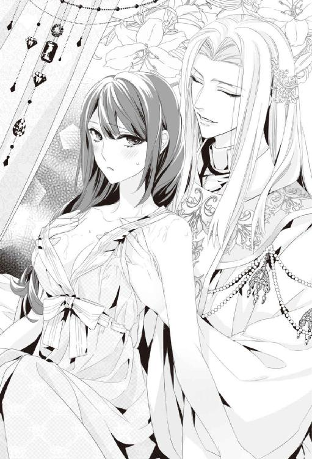
繊細な指が美月の胸元深くまで掠め、甘い精油の香りが胸元から上がってきて、美月はくらくらするような眩暈を覚える。
「......かなり疲れがたまっていらっしゃいますね。このところの騒がしさでは無理もないですが。少し内側までほぐさせてください」
「......あぁ、はい......」
温かい指が心地よくて、うっとりと声を上げながら、美月は今聞いた情報を整理しようとした。すると突然、鎖骨を触れていたエルの手が、脇の下に回った。
「......んっ......ぁっ」
「......どうしましたか？」
思わず体が跳ね上がってしまった。脇に伸ばされた親指以外の指が、しっかりと胸のふもとに掛かり、エルの綺麗な指が、美月の胸ごと揉みたてるように動く。ぎゅっぎゅっと揉み上げられるたびに、薄物の服に胸の先がこすれ、美月は熱っぽいさざ波のような感覚を感じて、思わず甘い戦慄に身を震わせた。
「ここには疲れがたまりやすいので、しっかりほぐして流す必要があるんです。あとが楽になりますよ」
顔を覗き込まれて、邪気のない笑顔で言われると、自分が勝手に邪推しているような気になり、美月は慌てて頷いた。
「そ、そうなんですね」
（脇の下ってリンパとか多いし、そういうことかな......）
そう考えながらも、ゆさゆさと強弱をつけて胸をリズミカルに揺さぶられると、なんだかますます胸の先に熱を感じてしまう。そんな自分が恥ずかしくて、慌てて顔を伏せた。
「あっ......」
次の瞬間、精油でぬるんだエルの指の先が滑り、尖り始めていた美月の胸の頂点を掠める。彼女はつい吐息を漏らし、ピクンっと体を震わせてしまう。微かにふっと漏れるような笑い声が聞こえた気がして、美月は慌ててエルの顔を見上げようとすると、
「次は足のマッサージをしないといけませんね。少し横になってください」
やんわりと、だが抗えないほどの力を込めてベッドに押し倒される。その時に胸元から抜かれる指がさりげなく、もう片方の胸の蕾に触れた。
「んぁっ......」
「あの、どうかされました？」
（なんか......変な感じ。全身がむずがゆいような、なんか熱っぽいみたいな......）
室内にはねっとりと絡みつくように甘い精油の匂いが立ち込めている。美月は全身を揉みほぐされるにしたがって、ますます体中が熱を持ち、肌がチリリと敏感になっていることに気づいた。荒く息をするたびに、甘い香りの空気を吸い込んで、警戒心が薄れ、ますます全身がじわじわと熱を帯びていく。
足の裏から触れはじめたエルの指は、ゆっくりと凝りをほぐしながら、ためらうことなく上へ上へと向かっていた。マッサージの心地よさに、少しずつ淫らな感覚が混じり始めていることに美月が気づくより先に、内太腿にエルの指が掛かり、気づけば片足を抱きかかえられるようにして、下着を着けていない足の付け根まで触れられてしまう。
「えっ。あの......ぁっ」
「すべらかで、すんなりとしていて。綺麗な脚ですね」
そっと片方の足を抱え上げられて、足の親指の爪先にキスを落とされてしまう。その淫らで背徳的な光景と感触に、美月は、足の先から体の中心に、電気がビリリと流れていくような感覚を覚え、思わず甘い声を漏らしていた。
「あぁっ......ダメっ」
哀れな獲物を捕らえ、逃さない花の香りの中で、美月は体を動かすことがひどく億劫になっていた。効き目の速い媚薬が混ぜられていたことに、ようやく美月が気づいた頃には、全身がとろとろと溶けそうな感覚を帯びていた。美月の呼吸はすべて、なまめかしい喘ぎになっている。
「......大分、好くなってきましたか？」
エルは穏やかで優しい微笑みを浮かべながらも、もう抗う力のない美月の膝を押さえ、既に潤み始めている体の中心部を容赦なく左右に大きく開く。
「ぃやぁぁっ......」
エルの目前で秘部を大きく開かれて、美月は思わず声を上げてしまった。開かれた部分を隠すため、伸ばそうとした腕はまったく力が入らず、動くこともかなわない。
「......な、んで？」
「薬が効いてきたんですね。もうこんなところまでグショグショに濡らして。『錠前』はやはり淫らな女性が選ばれるものなのですね」
エルは楽しそうに笑い声を漏らすと、すでに濡れそぼった花びらを大きく開き、精油を直接タラタラと垂らしかける。
「ぁ......はぁ......っん」
垂れてくる液体の感触に思わず体が跳ねてしまう。エルは指にたっぷりと精油をつけ、開いた蜜壺と花びらの間に、指先の媚薬を塗り付けるように丹念に触れ始めた。
「ああ。どんどん淫らな蜜があふれてくる。こんなにぐちゃぐちゃに濡れてしまっていると、しっかり薬を塗りこめないですね。本当に貴女はイヤらしくて、困った人だ」
唇の口角を、うっとりとするほど美しい角度に持ち上げて、優しく天使のような清らかな笑みを浮かべながらも、エルは容赦なく、美月の恥ずかしい部分を開いて、蜜壺の中にまで媚薬を塗りこむようにした。
「あっ......ぁあっ......はぁ......やっ......」
既にたっぷりと潤んだそこは、精油の滑りを借りなくても、すんなりエルの指を受け入れてしまう。何度も丹念に媚薬を塗りつけられているうちに、チリチリとする熱を感じ、そのうちに触れてもらわなければ我慢できないほどの搔痒感へと変化して、美月はたまらずピクピクと体を跳ねさせた。
「ぁっ......ぁはっ......はぁっ......」
塗りつけるエルの指が気持ちよくて、そこからさらに搔痒感が増す。その繰り返しに半開きになった唇からは、徐々に正体を失ったかのような艶やかな喘ぎが漏れ続ける。感じすぎて溢れる涙がすぅっと美月の頰に伝った。
「......やぁっ......やだぁ......ぁあっん......」
流している涙は、恐怖と愉悦のどちらの涙なのか。ひくひくと蜜壺を震わせては、溢れるほどの蜜を垂らして、既に寝具までぐっしょりと濡らしてしまっている。
「すごい......。こんなに蜜を垂らして。アソコがひくつくたびにどんどん蜜が溢れてくる」
恥ずかしい部分をじっと凝視されていると思うと、美月はますますそこが収縮し、潤みがトプリと溢れ出すのを感じる。
「ああ。なんて淫らな姿だ。こんなにイヤらしくて、はしたない女の人を私は見たことありません。もっとたっぷりと可愛がって差し上げないと満足していただけなさそうですね」
エルは美月の耳元で囁くと、既に胸を揺らすほど、激しく喘ぎ始めている彼女を見て、妖しく微笑んだ。
「しかし、このままでは、少々弄びにくいですね」
美月を抱きかかえるようにして薄物を脱がせ、再び横たえると上からじっくりと、生まれたままの姿になった美月を視姦する。
「......やっ......」
温度のない、美貌に冷たさを感じて、美月は顔を思わず背けた。
「ふむ。最初見た時は清純そうだと思いましたが、こうして見れば細い割に、感じやすそうな体をしていますね。男を嗜虐と姦淫の罪に誘う淫らな肢体だ」
あざ笑うように耳元で囁くと、手のひらに精油をたっぷりと乗せ、それを両手のひらでしっかりと塗り広げた。
「乳房も服の上から見るよりずっと豊かだ。それにさっきから、硬く尖って触れて欲しそうでしたね。お望みのまま、この薬を使って存分に可愛がって差し上げましょう」
エルは美月のほっそりとした腹部から、胸の下のふくらみまでじっくりと手のひらを滑らせて、肌の感触を堪能すると、先ほど薬を塗りつけられて、すでにむずがゆい感覚を持っていた胸全体をしっかりと手のひらで覆った。
「はっ......ぁあっ」
媚薬で熱っぽく張り詰めていた胸を、作り物のように長く細い指をもったエルの手のひらで覆われ、次いで形がひしゃげるほど荒々しく揉まれると、脳が痺れそうなほどの快楽がこみ上げてくる。エルは張り詰めた蕾の感触を楽しむように手のひらを大きく動かしながら、たっぷりと乳房全体に薬を塗りこむ。
「乳首までこんなに硬くして。さっきは清純な乙女のように愛らしい乳房だったのに、今は男に触れて欲しそうに色づいて尖り果てていますよ。こんな風にされたかったんですか？」
次の瞬間、人差し指と親指で両方の胸の蕾をぎゅっと摘み、強く引っ張られた。
「ひゃあぁっ」
思わず甘い悲鳴が上がってしまう。ぬちぬちとオイルにまみれた突起を、何度も何度も指の腹で執拗に弄られ、快楽が高まるにつれて、先ほど薬を塗りこまれた蜜にまみれた部分がギュッと収縮を始めるのに気づく。
「おや、こっちもヒクヒクしていますね。一緒に触って欲しいんですか？ やはり随分と淫乱な司書殿だ」
エルはくくくっと笑うと、一番感じやすい芽を覆う花びらを親指と中指で開き、外気に触れさせる。ピリという感覚に美月の体が跳ねると、エルはしっかりとベッドに体を押し付け、存在を主張し始めているそこに精油を零し、人差し指で丹念に転がし始める。そうしながらも、片方の手は胸を弄り続けている。
「どっちの尖りもこんなに大きくなって。真っ赤に充血して硬くなっていますよ。貴女は本当にイヤらしい人だ。こんな淫らで、はしたない『錠前』は、神よりきちんとお仕置きをしてもらわねばいけませんね。ほら、もっとお仕置きされたいですか？」
ぬちぬち、といういかがわしい音と共に誘惑するような甘い匂いが、一気に部屋に立ち込めて、美月の脳をさらに麻痺させる。痒みを感じていた体のあちこちを刺激されると、一気に強烈な愉悦がこみ上げてきた。
「いやあああああっ。あっ......ぁぁあっ......はぁんっ......だめ......あああああっ......やぁぁぁっ......」
ピクンピクンと体を震わせながら、美月はエルの思惑通り、淫らな喘ぎ声をあげ、あっさりと最初の絶頂に達してしまった。彼女の敏感になって震えている体をベッドに抑え込んで、エルはぬるんだ指を深く蜜壺の中に滑り込ませた。
「ひぁっ............今はダメっ......ぃやっ」
感じすぎて苦しいほどの快楽の中で、美月が悲鳴を上げると、くすりとエルが笑う。
「ああ。本当に罪深い体だ。達したばかりでも、こんなに物欲しそうにヒクついて。まだまだ足りないと、私の指に喰らいついていますよ」
──ぬちゃ、くちゅ、ぐちゅ。
いかがわしい音を立てて、エルは丹念に蜜壺の中に指を出し入れして、蜜と媚薬にまみれた中の感触を堪能する。
「ダメっ、壊れ......ちゃ......もう......おかしく......なっ......」
発火しそうなソコを擦り立てられると、全身に愉悦が駆け巡る。気が狂いそうな程の快楽に、美月は既に意識を失う寸前だった。体がガクガクと震え、懇願するように涙を零す。
エルは、美月が苦しい程の激しい淫楽に、喘ぎ乱れるのを一通り楽しむと、やっている行動とは真逆な優しげな目を細めて囁いた。
「そろそろ準備はよさそうですね。ではこれを貴女の中に入れて、奥までたっぷりと薬を塗りこんでしまいましょうね。きっと、この世のものとは思えないほどの快楽が得られますよ？」
「え？」
「......これで他教の狂信者を、幾人、改宗させてきたことか」
急に声音が変わったエルの言葉に、美月は溶けかけていた意識を取り戻し、ハッと視線を上げる。エルは大きな何かの塊を持ち、それに丹念に精油を塗りこみはじめていた。
黒く禍々しくそそり立つ形をしているその物体を見て、美月は思わず恐怖に息を吞んだ。
「な......何をするんですか？」
ぞわりと怯えのような感覚が肌を走る。美月は動かない体で必死に後ずさろうとした。
「お使いになったことはありませんか？」
「きゃっ......」
エルは両足を使い、美月のあられもなく開かれた足をしっかり抑え込む。手で持った精油でぬらぬらと濡れている物体を見せつけられて、美月は絶句した。
「これは張形と言うのですよ。男性の怒張したソレと同じ形のものです。媚薬をたっぷり塗りこんだ張形で、今から貴女をたっぷりと楽しませてあげましょう。人のそれと違って、決して萎えることはありませんから、淫乱な貴女でも十分に満足させられるはずです」
エルは清廉な笑みを浮かべて、それを美月の潤んだ秘所に押し当てた。
「い、いやあああっ」
悲鳴を上げる美月に押し当てられた物は、何の抵抗もなく、蜜で溢れる壺にぬぷり、と入り込む。
「やだっ、やめてっ」
たった一度しか男性を受け入れたことのないところに、大きな張形が押し込まれていく。血の通わない物体が入ることは恐ろしくて、美月は涙を流して、必死に抗おうとした。
「......いやっ......いやあああっ」
「おや、これだけ濡れているのに中は硬いですね」
「やっ......やめてっ、許して」
「大丈夫、力を抜きなさい。すぐ気持ちよくなりますからね」
ゆっくりと蜜壺を押し広げるように、めり込んでくるモノに、美月は激しい恐怖を感じている。怖いのに、冷たいそれにこすられると、脳天まで杭で貫かれるような、邪悪で淫靡な感覚が全身を駆けあがっていった。一突きされるたびに、意識が遠のくほどの強すぎる悦楽の中で、美月はひたすら怯えていた。
（......怖いっ。頭がどうにかなってしまいそう......誰か......）
暴れて逃げ出したいのに、指一つ動かすこともかなわない。怯えに体を震わせ、涙を零し、気づけば必死に助けを求めていた。
『どんな時でも怖い思いをしたら、遠慮せずに俺を呼ぶがいい』
その瞬間、ふと彼の声と言葉が脳裏に浮かぶ。刹那、美月は心の中で、その人の名を呼んでいた。
（......助けてっ......イサック）
──その時。
甘い匂いで充満していた部屋に、深い緑の心地よい風が流れ込む。
「......司祭殿。それ以上は『錠前』を傷つける行為だ」
聞き慣れた深い声が聞こえて、快楽に堕ちかかっていた美月はハッと目を見開いた。
「よって『錠前』は騎士の手に返していただこう。異存はなかろうな？」
美月は自分では動けなくなった体のまま、必死にその声の方に視線を向けようとした。イサックはそんな美月を安堵させるように小さく頷くと、ゆっくりと歩み寄ってくる。咄嗟に美月を捉えようと、手を伸ばしかけたエルの方角に向かって、彼は大きな手のひらを下に向けて、押さえつけるように振り下ろした。
ひっという呼吸音がして、エルの綺麗な笑顔がそのまま頰に張り付いたように固まる。支える人の無くなった張形が、美月の体の中から、厚いじゅうたんの上に音もなく落ちた。
「......イサック、なんでここに？」
「お前が、俺の名を呼んで助けを求めたからだ」
驚いた声を上げる美月に対して、イサックは表情も変えずに淡々と言い切る。それから小さく息を吐き出して、柔らかい表情を唇に浮かべた。
「......大丈夫か？」
尋ねられると同時に、たくましくて優しい腕に、包まれたシーツごと抱き寄せた。穏やかで労わるような視線を受けて、美月は安堵に涙がぽろぽろと零れ落ちる。
「......怖かった......。イサック、怖かった」
気づくと美月は子供みたいに顔を歪ませて泣いていた。そんな美月を見て、イサックは困ったように笑みを浮かべる。
「もう大丈夫だ。お前を見守り、お前を助けるのが俺の責務だと言っただろう」
イサックの柔らかい声に、美月は縋りつくように彼の袖をぎゅっと摑む。イサックはその指先に一瞬視線を落とし、それから剣吞な光を浮かべたまま、ゆっくりと視線を上げ、エルを睨んだ。地を這うほど低い声で、憤怒を抑え込むようにして言葉を放つ。
「司祭殿。今晩はお引き取り願おう。あと数分すれば拘束の魔法も溶けて、司祭殿も動くことが可能になる......。動けるようになったのなら、さっさとこの図書館から退出願おう」
ベッドの上で、『図書館の騎士』が掛けた拘束の魔法で動けなくなっているエルは、その言葉に対して言葉を返すこともなく、ただひたすら二人を睨み返す。イサックはそんなエルに蔑むような視線を送ると、軽々と美月を抱き上げた。
「もし次の機会があるとしても、『錠前』の心身どちらかでも傷つける行為は、認めるわけには行かない。俺はいつでも美月を見守っている。──そのことだけは忘れるな」
それだけ最後に言うと、イサックは美月を抱き上げたまま、儀式の部屋を出て行ったのだった。
＊＊＊
（......あの男、やりすぎだ）
正直、今夜は儀式の部屋の前で見張りをする気にもなれず、図書館の外で立番をしていたイサックだが、それでもモヤモヤとする気持ちは晴れなかった。
青い月が早く傾き、美月が誰かに触れられている時間が終わるのを、無意識で願ってしまう。
（単なる『錠前』と『門番』の関係だ。『錠前』がどの鍵を選ぼうと、俺が守る門は変わらない）
だからこんな騒がしい鍵選びは早く終わってくれ。と思う一方で、それは美月が誰かを『鍵』に指名することだと思えば、気持ちがかき乱され、胸が苦しいほど締め付けられている自分に気づく。
安易に踏み込んでしまった昨夜の自分の軽率さを恨んでも事実は変わらず、動いてしまった気持ちも既に変えようがない。せいぜい表に出さぬよう、注意深く心の奥底にしまっておくしかない。そうイサックは自らに深く言い聞かせている。
それでもイサックの脳内に、美月の助けを呼ぶ声が聞こえた瞬間、待ちわびたように儀式の部屋に一瞬で移動していた。
儀式の部屋は、催淫剤のせいでむせ返るほど甘い花の香りがしていた。美月の姿をベッドに見つけてほっとした次の瞬間、美月の体の中から滑り落ちたものを見て、イサックは怒りに全身が震えた。見合いの場では『鍵』を回さない限り、大概のことをしてもかまわないとの暗黙の了解があるが、男性を怖がる美月に、押し込まれた禍々しい物体は、どれだけ彼女に恐怖を与えたことか。
（『鍵』を開けさせるためなら手段は選ばないということか？）
今更言うまでもなく、誰が『鍵』となるかということは権力闘争の一端を担っている。元々支配階級であり、この図書館の持ち主でもあり、また必ず『騎士』を派遣するという形で、身内の人間を入れている王族や、近頃は経済を裏側から支配し、この王国と図書館の成立に大きく寄与した魔導士ギルド。その二つの組織に比べ、教会は図書館との関わりは薄い。しかも時代の流れもあって近頃、民衆に対しての求心力が低下しているのではないか、とも言われている。
（ギルドの成長に対して、同等の権威を維持するために、必死なのは......わかるのだが）
だからと言って、美月の思いはどうでもいいのか？ 助けを求める美月の声がイサックの脳裏から離れない。今も体を小刻みに震わせて、イサックの袖をぎゅっと指が白くなるほど摑んでいる。
「催淫剤を直接肌に塗られたんだな。随分とエグいことをする司祭だな」
はぁはぁと浅い喘ぎを繰り返している美月を見ていると、艶っぽくて愛らしくて......思わず見とれそうになる。だが薬で無理やりこんな風にされていることを思うと可哀想に感じ、やはり守ってやりたいと熱い気持ちも強く胸にこみ上げる。
微かに震える体を抱きかかえたまま、美月の部屋に入ると、窓が開け放たれていた。そこから緑の香りが夜の帳と共に忍び込んでいる。禍々しい花の匂いから逃れられて、二人はほっとため息をついた。
月明かりがベッドを仄明るく照らしている。そっと降ろすと、美月はぎゅっとイサックにしがみついてきて、離さないで欲しいというように顔を左右に振った。はぁっあぁっ、と苦しそうな呼吸を続けている美月の様子に、イサックは痛々しさで胸が締め付けられる。
「どうした？」
「イサックっ。くる......しいの。体中が、熱くて......気が狂いそう......助けてっ」
甘い喘ぎと共に耳元になまめかしい吐息を感じて、イサックは本能的に欲望を感じてしまう。可哀想だと同情しているのに、乱れる姿に対して欲望を感じるという、相反する感情を押し殺し、イサックは出来る限り淡々とした表情のまま、美月に話し掛けた。
「一度......塗られた催淫剤を洗い流さなければダメだろうな。ちょっと待っていろ」
イサックは服を脱ぎ、腰巻だけの姿になると、シーツごと美月を抱き上げる。
「......え？」
かすかに怯える美月の視線に、イサックはひどく切ない気持ちになった。
「風呂で洗ってやる。そのままだと、苦しいだけだろう」
「でも......」
「とはいえ、嫁入り前の女が、肌身を男の前にさらすのは恥ずかしいか。なら俺は目隠しをするから、一緒に浴室に入っても構わないか？」
ためらう様子の美月に重ねて告げると、流石に辛いのだろう、涙目で頷く。
室内にある風呂場に美月を連れていくと、湯を溜めながら、自らは布で目隠しをした。美月のシーツを外し、生まれたままの姿に戻すと、その華奢な体を抱き上げる。抱き上げた瞬間、互いの体が直接触れて、熱がこみ上げてしまう。
（......余計なことを考えている場合ではないな......）
イサックは、とにかく美月の体に塗りこまれた媚薬を取ってやらなければ、と石鹸を手繰り寄せると手のひらに取り、ふらつく美月を自らの膝の上に座らせて、その体に触れる。
「──っ」
刹那、美月の体が扇情的に跳ねるのをイサックは気づかないふりをした。肩の辺りから洗い始めると、滑らかで心地よい肌の感触を、視界が閉ざされた分、鮮烈に感じてしまう。あまり刺激が強くないようにと、首筋から、鎖骨の辺りまで慎重に指を滑らせていくと、美月がピクンと体を震わせた。
「......あっ......ぁぁっ......やぁ......声、出ちゃう......やだぁ......」
媚薬で敏感になっている肌に触れられて、抑えようのない嬌声が浴室に響き、美月は身悶えして恥ずかしがる。
「......ちゃんと洗い流せれば楽になるはずだ。声は気にしなくていい......」
美月の漏らす啼き声に、イサックは再び情欲を駆り立てられそうになる。必死でそれに抗って、できる限り冷静に声を掛けると、背中を洗い、一瞬ためらってから胸に手を回した。
「......ぁっ」
小さく震える美月の体を抱きかかえるようにすると、イサックは、柔らかく滑らかな感触とともに、今朝見てしまった美月の可憐な裸体を脳裏にまざまざと描いてしまい、刹那、じわりと体の奥で欲望が屹立するのを感じていた。
「すまん。手が触れるが、我慢してくれ」
自分の反応にまずいな、と思いながら、それだけ告げるとイサックは手早く美月の胸を洗い始める。
「ぁ......やぁんっ......はぁっ......あぁっ......」
美月の体が落ちないように、しっかりと抱きかかえ直した。その間もイサックの熱っぽい塊は、抑えられずに美月の臀部に押し当てられているが、どうやら美月はそれどころでなく、気づかれないで済んでいるらしい。
美月の体が跳ねるたびに、彼女の体から溢れてくるらしい石鹸とは違う潤みを腿に感じ、イサックは既に耐え難いほど自分の欲望が高まっているのを感じている。
（こんな時ですら欲情するのか。我ながら浅ましい......）
そんなイサックの想いをあざ笑うように、愛らしく立ち上がった乳房の先の部分が、イサックの手のひらにコリコリと淫らな感触を与える。できる限り感情を押し殺しながら、手早く洗おうとすると、それでも甘い声を上げて、美月が暴れまわる。それを落ちないようにと抱きかかえれば、余計に互いの体が触れ合い、そこから甘い疼きが生じる。
（胸は見た感じより......大きいのかもしれない）
肌の滑らかな感触といい、形といい、あつらえたように自分の手の中に具合よく収まる感触を好ましいと思ってしまう。そんな自分に舌打ちしたくなりながら、何とかそこを洗い流すと、美月はまた涙声でイサックの名前を呼ぶ。
「なんだ？」
尋ね返すと、美月は下半身をくねらせるようにして、甘い吐息を漏らす。
「やっ......だめっ......ごめんなさい」
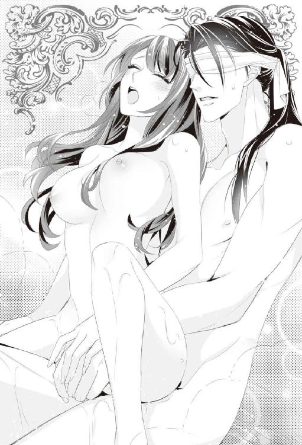
涙で潤む声を漏らしながら腰を揺らし、我慢できないかのようにイサックの硬い腿に潤んだ蜜口を擦りつけた。潤みがイサックの腿の辺りをしとどに濡らしている。美月の淫らな様子に刺激されて、その場に押し倒したくなる劣情を、イサックは奥歯を嚙みしめて、必死に抑え込んだ。
「............っ」
その瞬間、イサックの手は美月の小さな手のひらで覆われ、そのまま媚薬のせいで耐えがたいほどの搔痒を感じているだろう彼女の秘所に導かれていた。
「──っ」
そこはイサックが予想していた通り、美月の体からあふれた蜜でどろどろに蕩けている。その淫らで心地よい感触に、汗がにじむほど、熱が上がってしまう。
「......苦しいの。おかしく......なる......助けてっ」
美月の必死の懇願に、イサックはクラクラと眩暈を感じるほどの激しい情欲を搔き立てられていた。わずかに残った理性を呼び起こすため、顔を軽く左右に振る。確かにあれだけたっぷりと媚薬を塗りつけられたら、そこは苦しさにのたうちまわるほどの鋭い感覚を持っているのだろう。イサックは大きく息を吐き出すと、つとめて冷静な声を上げようと努力する。
「洗ってやるから、少しだけ我慢してくれ」
欲に負けないように、声を掛けると、美月の足を大きく開かせて、美月の潤みきった蜜壺とその周りを丹念に洗い始めた。媚薬特有の搔痒感にずっと耐えていたのだろう。触れられると一気に溢れ出てくる蜜と悦びに、美月はたまらずイサックの上で喘ぎ、乱れ狂う。
「いやっ......恥ずか......やっ......こんなのっ......」
「こら、暴れるな。そのまま素直に感覚を受け入れたら、楽になる」
暴れる美月を抱きかかえて、落ちないように支えていると、徐々に緩んでいた目隠しが滑り落ちる。
「ああっ......やぁっ......ふぁ.........いっ......逝っ......ダメぇぇぇぇっ」
その瞬間、美月はビクビクと体を震わせて、イサックの腕の中で達してしまった。イサックは彼女のなまめかしい声と、淫らで美しい表情に、息を呑んで見惚れていた。目隠しを直すことすら忘れて、ゴクリと喉を鳴らす。官能に火照った抜けるような白い肌を震わせて、自分の与えた愉悦に溺れていく美月はたまらなく可憐だった。
職務でも義務でもなく、もっと乱れる姿を見たいという自らの欲望に従って、もう洗う必要のないはずのそこに、つい手を伸ばしてしまう。丁寧に洗ってやると、ますます甘い嬌声が美月の濡れた唇から溢れだす。
「ぁっ......やぁん......ダメっ......イサ......ああっ......それ、ダメ、ひゃあぁああぁぁあ」
美月は耐えられないというように、続けざまに、身を震わせて絶頂に達してしまった。達しながらも、美月はぎゅっとイサックの胸元に顔を擦りつけるような仕草をした。恋人にするようないじらしい様子に、今自分の腕の中にいる女性を、愛しいと思う気持ちがこみ上げてくる。
快楽が抜けきらず、ぴくんぴくんと身を震わせ、朦朧とした瞳をする美月の体を抱きかかえ直すと、美月の背中が自分の胸に当たるようにして、イサックは美月と共に湯船に身を沈めた。
「......イサック......」
温かい湯が媚薬の効果を薄めていく。少しだけ呼吸が落ち着いた美月が、声を掛けると、イサックは困ったように視線を揺らす。
「すまん......目隠しが......」
無遠慮に美月を凝視しないように、綺麗な紫色の瞳をそっぽに向ける真面目なイサックの様子を、美月は少し可愛く感じてしまった。
「いえ......あの私の方こそ、すみません。あ......ありがとうございます」
そう言いながら、美月は居心地が悪そうにぎゅっとキツく膝を揃えるようにした。まだ媚薬の微熱に酔っている。じわりと目元まで熱っぽい。悦楽にまだ潤んだ視界でイサックを捕らえた。
「......どうかしたのか、まだ気持ち悪いところがあるのか？」
心配そうに尋ねられた言葉に、美月は何と言っていいのか困ってしまう。
（ど、どうしよう。さっきヘンな物をあそこに入れられたせいで、中まで......チリチリしている）
美月はその居心地の悪さと、ゾワリとする淫らな感覚を、必死に誤魔化そうとするが。
「......ぁっ......はぁっ」
ぴくんと体が跳ねて、美月の閉じていた膝がかすかに開いてしまう。ひくひくと中がヒクつきながら、熱と搔痒感を増して、もっと触れて欲しいと主張している。
「大丈夫か？ まだ媚薬が抜けきらないところがあるのか？」
体の外側は洗ってもらって、大分落ち着いたけれど、中は全然収まってくれない。それどころか、むず痒さに熱を伴って、擦りたてて欲しくて仕方なくなる。
「......あの......中が......」
耐え切れず小さな声で、呟いてしまうと、イサックも美月の中に挿れられていたであろう物を思い出したようだった。
「......中も......洗ってやった方がいいのか？」
その言葉に、美月は羞恥心に身を震わせながら、それでも小さく頷く。
（恥ずかしいけど......でも洗わないと、耐えられないっ）
イサックは涙目で頷く美月を見て、一瞬息を吞んだ。だが美月は中の違和感に耐え切れず再び腰を揺らしてしまう。ちゃぷ、と鳴る水音が恥ずかしくて涙が出そうだった。
「......力を抜いておけよ。少しだけ......辛抱しろ」
イサックは美月を安心させるように囁くと、腹部の方から手を伸ばし、中を割ると指先を滑らせる。
「あっ......ぁあっ」
触れられただけで意識が遠のくほどの快楽が押し寄せてくる。敏感な襞に触れる指に、早く中を擦りたてて欲しくて体をそらせると、くぷり、と節くれだった男性らしい指が吸い込まれていく。もっと奥まで触って欲しくて、腰を浮かすと、イサックの指は何の抵抗もなく、根元まで飲み込まれていった。むず痒かった場所が擦られる感覚に美月は甘い喘ぎを零す。美月の蜜壺の淫らな感触にイサックもまた、下半身に激しい滾りを感じているようだった。
「......動かすぞ？」
イサックが中を搔きだすように指を動かし始めると、ぐぼっ。ぐちゅ。と淫らな水音が浴室に響く。
「はぁっ......ぁっ......」
その音に絡み合うように、美月の控えめな、それでいて扇情的な喘ぎが上がった。
（......イサックの指が私の中に入ってる......どうしよう。恥ずかしいのに......すごく気持ちいい）
「......ああ。そこ、触って......欲し......」
指で傷つけないようにイサックは細心の気遣いをしてくれているのだろう。だが柔らかく触れる指がもどかしくて、もっと強く擦って欲しくて、美月はついねだってしまう。少し強まる指先に、そこが当たるように腰を揺らめかせてしまっていた。
「ここを、洗ってやったらいいのか？」
切なげな美月の喘ぎに、切羽詰まったようなイサックの声が重なる。首をかくかくと縦に振りながら漏らす、美月の甘えるような啼き声にイサックの指が激しさを増していく。
「ああっ......そこっ」
強く搔痒感を感じていた部分を擦りたてられて、激しい動悸と快感が押し寄せてくる。耐え切れずに美月は喘ぎながら、ぎゅっとイサックの太腿を摑む。
「ぁあっ......そこがイイの......イサック......」
乱れる美月にイサックは優しくて艶っぽい視線を向けた。そのことが嬉しくて、美月は快楽に潤んだ瞳で見つめ返してしまう。視線が甘く絡むと、イサックは目を細め、そのまま甘い喘ぎを漏らす美月の唇を荒っぽく奪っていた。
「......んっ......ぁ......んんっ」
すぐに口づけは深さを増していく。舌を絡み合わせるたびに、美月は身を震わせて、触れ合う唇の間で切ない吐息を零していた。イサックと唇が触れた瞬間、指の挿しこまれている部分がきつく締まり、ゾクゾクと全身に悦びが広がっていく。
（な......なんで？ キスしただけなのに、どうして、こんなにも気持ち良くなっちゃうの？）
美月はその感覚に思わず溺れてしまっていた。感じすぎてヒクンヒクンと体を跳ね上げさせても、イサックは逃さないように、しっかり美月を抱き寄せる。その力強さに美月の中の歓喜はますます高まっていく。
イサックは貪るようにキスをすることも、中を擦りたてることもやめなかった。美月もそれをやめて欲しいとは思っていなかった。気づけば指は二本に増え、洗うというよりは、快楽を与えるための複雑な動きをし始める。
（......だめ......どうしようもなく......感じちゃうっ......）
気づけば美月は、半身をひねるようにして、イサックのうなじに手を回していた。イサックの舌に自らの舌を絡め、イサックの指をより深く感じるために足を開き、大きく腰を反らして、奥深くまでイサックを導く。イサックの指が、舌が、美月の快楽を限界まで高めていく。
「......美月......」
銀糸を引きながら、イサックは唇を一瞬離してその名を呼ぶ。身を震わせながら、自分にすがりついて、自らの指と舌を必死に受け入れる美月が愛おしくて、つい全身が絡み合うほどしっかりと抱き寄せてしまっていた。
『洗ってやる』という名目で、どれだけ美月の感じやすい中を、指で搔きまわし、堪能していただろうか。ビロードのような愛らしくて甘い舌を根元まで味わっていたのだろうか。
「ああっ......イサック............気持ち...いいのっ......」
じっくりと時間をかけて、深い官能の終点にたどり着いた美月は、甘えるような喘ぎを漏らす。
「はぁっ......あ、あ、あっ......あああああっ」
次の瞬間、絶頂に達した美月は、中を激しく収縮させ、身を震わせて、カクンとイサックの腕の中に落ちてきた。
イサックは先ほどまで激しく締め付けていた蜜壺が、儚い震えを残し、緩やかに弛緩していくのを感じ取る。そして美月から絶頂が去ったことを確認した。唇が離れると、触れていることが常態のように、急速に寂しさを感じてしまう。イサックは小さな苦笑を漏らし、名残惜しげに美月の中から、指を抜いた。
深い絶頂感に、呆けたようになっている美月をしばらく抱きしめていると、つい愛おしさが勝って、額に頰にいくつもキスを落としてしまう。乱れた髪を撫でて整えてやると、美月はイサックを見上げて、嬉しそうに笑みを浮かべた。それはまるで可憐な花のような微笑みで......。
どこかでこんな時間がもう少し続いて欲しい、と願っている自分に気づき、それは願ってはいけないことだと、嵐の過ぎ去った今、イサックは目をきつく閉じる。
「......大丈夫、か？」
再び目を開けた時には、いつもの冷静な声が出た。イサックの声に、美月は恥ずかしそうな顔をして、頰を染めながら、彼の手の上にそっと自らの手を重ねる。
「............イサック、あの......助けてくれて......ありがとう......」
こんな目に遭いながら、それでもイサックの胸に頰を寄せて、美月は目を細めて礼を囁く。
イサックは、一度冷静さを装ったはずの心に、再び甘い蜜を垂らしこまれて、その笑みに身も心も奪われている自分に気づかざるを得ない。
（だが、望んではいけないものを欲しがっても仕方があるまい......）
イサックは言葉にできない苦い想いを胸の奥で感じながら、そっと唇の端に、切ない笑みを刻んだのだった。
第六章王子様とのデートは竜に乗って......
「............」
その日の目覚めは、思いかげず落ち着いたものだった。窓からは、レース越しに淡い朝の光が差し込み、風が室内に流れ込む。美月はゆっくりと昨夜のことを思い出していた。
「......イサックは？」
彼の腕の中で寝ていたのは、昨日の朝のことだ。美月は少し記憶が混乱している。今朝は清潔なベッドで一人、目覚めた。
（そうだ。昨日、イサックが儀式の部屋まで私を助けに来てくれたんだった）
しかも媚薬まみれの体を洗ってもらって......。記憶をたどるにつれて、じわじわと全身が火照ってくる。確かにされた行為に対して、恥ずかしさもあったけれど、それ以上になぜか、心も体も生気を注がれたように軽く、心地よい疲れの感覚がある。
それはイサックの武骨なわりに、優しい指だったり、唇だったり、大事に抱きしめてくれる腕の記憶のおかげかもしれない。淫らな......と言うよりは、どこかそれは幸せな充実感に似ていた。
（昨日の夜はいろいろなことがありすぎたな......）
結局、あの後、疲れ果てていた美月の額にキスを落とすと、イサックは暁色の瞳を切なげに瞬かせて、良く寝ろ、とだけ言って部屋を出て行った。美月はその最後に見た瞳の色を思い出して、胸がぎゅっと締め付けられる。
（運命を感じた人が『鍵』の人だ、とセイラは言ったけど）
美月自身、どの候補よりも一番イサックに惹かれている自分に気づいている。惹かれることと、運命とは違うのかもしれない。それに美月が選ばないといけないのは『鍵』だ。イサックは『鍵』候補者ではないのだ。ミーシャがイサックだけは絶対にダメ、といった意味が、苦みを伴って美月にも理解できた気がする。
選んではいけない人に好意を持ってしまった、という事実が、ズキンとするような切ない痛みを美月に与えた。それでもセイラに、ジェイを返してあげないといけないという美月の想いは変わらない。だから自分の気持ちに関わらず、『鍵』を探して第三階層の扉を開けなければいけないし、こんなところで立ち止まっているわけにいかないのだ、と思い直す。
（とにかく着替えないと......）
裸のまま眠ってしまっていた自分に気づいて、ベッドから起き上がり、着替えようとすると、
『ミツキ、そっち行ってもいい？』
脳に直接話しかけられる感覚があって、美月は咄嗟にシーツを纏う。慌てて辺りを見渡した瞬間、ミーシャが室内に現れた。
「お、お......おはよう」
「ミツキ、おはよう。今朝はね、王子様から誘いが来ているよ。せっかくだから夕方までデートしませんかって」
じっとミーシャが、美月の顔を赤い宝石みたいな瞳で覗き込む。
「......昨日、司祭様はミツキに無茶なことして途中でイサックに帰されたんだって？ あんまり女性に慣れてない人らしいからなー。きっとやりすぎたんだね。ってことは、司祭様は『鍵』って確定してないんだよね？」
司祭、という名前を聞いた瞬間、ゾワリと昨日の恐怖感がよみがえってくる。あの人だけは絶対にない。そう思いながら、こくこくと美月が頷くと、ミーシャは何でもないことのように言葉を続けた。
「じゃあ、本来なら『鍵』探しの儀式としては、一日休みなんだけど、でも、もしミツキが構わないなら、ジェイのこともあるし、そのまま『鍵』回しの儀式に入ってもいいかな？」
「──あの、『鍵』回しの儀式って......」
つまりそういうことなのだ。『鍵』が一度目の逢瀬で確定できなかったからには......。
（今夜から私は、『鍵』が回る相手が見つかるまで、一人ずつとベッドを共にして......ちゃんと最後まですることになるんだよね......）
穏やかな気持ちで目覚めた朝は、ミーシャの一言で、もしかしたらそうなるかもしれないという予感を、一気に現実の世界に引き下げてくる。
「うん、だから王子が少しでも、ミツキが緊張しないで儀式を迎えられるように、普通の恋人同士みたいにデートしようって。あの人優しいよね。デートのためにって、すっごい素敵なドレスまで用意してくれているよ。朝食を食べ終わる頃には迎えに来ると思うし、そろそろ準備した方がいいね？」
ちらりと美月を見て、ミーシャは空中にとどまったまま言葉を続けた。
「ただ、ちょっと着るのに時間がかかりそうだから、オレが着替えさせてあげる。ミツキ、シーツ巻いていてもいいから、そこに立ってくれる？」
ミーシャは美月が立ち上がった次の瞬間、猫のような目を細めてにっこりと笑う。
「......はい。準備ができた」
瞬きするより早く、美月は頼りないシーツ一枚の姿から、繊細なレースがふんだんに使われた、華やかな花のような淡桃色のドレスに着替えていた。
「え？」
もう、びっくりしても仕方ない。ミーシャが一瞬で美月を着替えさせたことを、流石の美月も理解していた。恐る恐る触れたスカートは、トロリとして心地よい絹のような感触を彼女の指先に返す。
「うん、とっても綺麗。王子様とのデートにふさわしい恰好になったよ。じゃあ、朝食だから下まで降りておいで」
ミーシャがその場から姿を消すと、美月は自分がどんな恰好をしているのかと思って、室内にある鏡を覗き込む。
（うわっ......すごい。素敵なドレス......）
なんとなく裾を持ってふわり、とその場で回ってしまって、そんな子供っぽい自分に一人で赤面する。鏡には昔絵本で見たお姫様みたいな自分がいた。しかも美月の長い髪は梳られて、半分が編み込まれ、半分はふわりと結い上げられている。顔は淡く化粧をされていて、ルージュまで引かれていた。
お姫様、と名乗ってもおかしくないくらい美しい装いにしてもらって、さっきまで不安だった気持ちが、ついうっかり浮き立ってしまう。私って単純だな、と美月は苦笑を漏らす。
（......今夜のことはできるだけ考えないで、せっかくなら王子様とのデート、楽しんじゃおう。そんな経験、普通の世界じゃ絶対できないんだから）
美月は鏡の中の自分に笑い返し、部屋を出て階段を下りていく。ダイニングに行けば、イサックもいるのだろうか。この姿を見たらどんな顔をするのだろうか、と微かに期待しながら。
「おはよう。昨日は大変だったみたいね」
セイラは、ダイニングの席に腰かけながら美月に挨拶をする。テーブルの上には既にたっぷりの朝食が用意されていたが、イサックは食事を済ませた後なのか、姿が見えない。
（セイラ......昨日のこと、どこまで気づいているんだろう？）
ズキンと胸が痛むのは、イサックとの昨日の出来事に、自分の気持ちが動いてしまっていることを自覚しているからだと、美月は思う。
『大変だったみたいね』という言葉に、美月が複雑な思いで頷くと、セイラは心配そうな顔をした。
「今日はアルフェ王子と......？」
それはデートの話をしているのか、それとも夜の『鍵』回しの儀式のことなのか。美月は咄嗟に尋ねることはできなくて、もう一度曖昧に頷いた。
「とにかく朝食を食べて。今日は王都まで行くんだって。って言ったって、ここからさほど遠くないし、あっという間に着いちゃうけどね。ほらミツキ、迎えが来ちゃうよ」
ミーシャの声に美月が頷くと、目の前に出来立ての温かいスープと木の実の入ったパンが出てきた。そっと口に運んだスープは、美月の不安な心に染み込むような優しい味がする。
「ミーシャ、美味しい......ありがとう」
にこりと笑顔で笑いかけると、ミーシャは目を細めて笑みを返す。そんな二人の様子を見て、セイラが優しい笑みを浮かべた。
「美月、そのドレス、可愛いわね。良く似合っているわ。楽しい一日になるといいわね」
しかしそのセイラの目元に似つかわしくない隈を見つけて、美月はきゅっと唇を嚙みしめていた。
（昨日もきっと、一睡もせずにジェイに遅延魔法を掛け続けていたんだろうな）
「ありがとう。あとちょっとで私、『鍵』を見つけるから。もう少し......もう少しだけ頑張って」
わざと明るく告げる美月の言葉に、セイラは一瞬瞳を潤ませ、深くこうべを下げた。
「ごめん、美月に無理ばっかりさせて......本当に......ごめんね」
「私こそ手間取っちゃってごめんなさい。今日は王子とデート、楽しんできます。もう迎えに来るんだよね。待たせないように、先に外に出ておくね」
セイラに頭をペコリと下げると、急いで食事を終える。他にもフルーツやさまざまなおかずもたくさん盛られているけれど、それには一切手を付けず、席を立つと屋敷の外に出ていった。
（これ以上、セイラと一緒にいたら泣いちゃいそう......）
愛する人に大きな危機が迫っているのに、出来る限り笑顔を浮かべて、美月に対しても感情的にならず、誠実に対応してくれているセイラを見ていると、この人の大事な男性を助けるためには、やっぱり自分が頑張るより仕方ない、そう決意を新たにする。
美月が中庭に出ると、視線の先でイサックが空を見上げていた。
「......イサック」
空を見上げていたイサックは、ひそかに待っていた女が自分を呼ぶ声に、ゆっくりと視線を下げてその姿を捕らえる。
「──っ」
（こんな......美しい女だったのか？）
美月の姿が視界に入った瞬間、イサックは平然とした顔をする予定だったのが狂ってしまっていた。
明るい日差しの下、王子が届けてきたというドレスを身に纏って可憐に結い上げた髪に、化粧された顔。仄かに頰を染めて自分を見上げている愛らしい姿の美月を見て、イサックはらしくなく狼狽し、思わず視線を逸らしてしまう。
「......体は大丈夫か？」
逸らした視線のまま、無愛想にそう尋ねる。
「うん、ありがとう、あの......昨日は......」
美月の声は、徐々に元気をなくすように沈んでいく。いつもと変わらないイサックの様子に、彼女が不安を感じているように思えて、昨日のことは美月への感情を持たずに行ったことではないと、否定したくなる欲をイサックは咄嗟に飲み込んだ。
「あ、あの。昨日は......」
せめて昨日の礼を改めて言おうと思ったらしい美月が、気を取り直したようにイサックに話しかけた瞬間、二人の頭上が陰り、大きな鳥が空を羽ばたくようなバサリという音が聞こえ、突然起きた大きな風にイサックの髪が舞い上げられた。
「......え？」
（何？ 何が起きているの？）
視線を上げた美月は思わず絶句していた。目の前の光景は、美月が未だかつて見たことのないものだったからだ。
大きな羽を畳みながら、その生き物はイサックの横に降り立ってきた。羽を畳んで静かに降りてきたというのに、辺りには土ぼこりが舞い上がり、美月のドレスの裾も、イサックのマントも渦巻く風に、ふわりと宙へ浮く。
「ターリィ、いい子だ」
イサックはその生き物を抱きかかえるようにすると、美月が見たことがないくらい、嬉しそうに大きく破顔をした。イサックの魅力的な笑顔に、美月は一瞬心を奪われる。けれどそれ以上にその大きな生き物から視線を外すことができず、再びまじまじと見つめてしまっていた。イサックが太く硬質な、その生き物の首の辺りを撫でると、ターリィと呼ばれたその生き物は、ガラス玉のような深緑の瞳を細めて心地よさそうな顔をする。
「あ、あの......あの、これっ」
美月が絶句していると、イサックは不思議そうな顔をした。
「もしかして、お前、竜を見るのは初めてか？」
美月は言葉を失ったまま首をカクカクと縦に振る。目の前にいたのは象ぐらいの大きさはありそうな、深い緑色の体を持った生き物で、物語で見たことのあるドラゴンのような姿をしていた。イサックの胸に擦りつけているその顔は、人の体の半分ぐらいは一飲みできそうなほど大きい。だがイサックはそんなことはまったく気にしてないようだった。
「......そうか。じゃあお前、今日は大変だな」
「......何でですか？」
いやな予感を覚えながら、美月が背の高いイサックの顔を見上げると、イサックは、くくっと声を上げて楽しそうに笑った。普段は鋭い紫色の瞳が細まり、うなじで結ばれた黒く長い髪が、次に来た大きな風に靡く。その姿を美月は眩しい思いで見つめ、とくんと甘く波打つ鼓動に、弾む呼吸が後を追う。
再びバサリと音がして、雲一つない真っ青な空が陰る。慌てて見上げた美月の頭上に、大きな羽を広げたもう一匹の竜の姿が見えた。
「......美月、遅くなってごめんね。今そこに降りるから」
竜の体で姿は見えないが、空から降ってくるその声には聞き覚えがあった。
「あの......王子？」
驚く美月の声に、イサックの声が被さる。
「──お前、これからそれに乗って、王都まで行くんだぞ？」
その瞬間、美月は悲鳴にならない声を上げてしまっていた。
「ああ。やっぱり僕が贈ったドレス、美月にすっごく似合っているね。どこの国の姫君にも引けを取らないくらい、美月は可愛くて綺麗だ。......じゃ早速行こうか」
抜けるような青空の下、甘い言葉を囁く王子は、シックな紺色の衣装に、ゆるやかなウェーブの掛かった金色の髪が映える。自分よりずっと王子の方が綺麗だなと、キラキラした琥珀色の瞳にドキドキしながら、美月は差し伸べられた手を取った。
地上に降り立った二匹目の竜に乗っていたのは、やはりアルフェ王子だった。慣れた様子で竜から降りると、美月を見て蕩けるような笑顔を見せ、その後でムッとした顔をしてイサックを睨み付ける。
「......で？ なんでお前までターリィを連れているんだ？」
「司書の護衛だ。王都まで同行する」
「......いらないよ。僕とルドルフだったら、僕達に追いつける敵はいない。だから美月の護衛は必要ない」
ルドルフと呼ばれた竜は、優しい目をして、王子のことを見上げている。王子はイサックに対して、不機嫌そうな態度を崩そうとはしていなかった。
「この間、ジェイの事件が起きたばかりだろう。例え王子の申し出でもそれを受け入れることはできない」
イサックは表情を変えずに淡々とそう答える。それを見て肩を竦めて王子は美月に向き直った。
「美月、どう思う？ この男、デートについてくるんだって。人の恋路を邪魔する奴は、竜の翼に打たれてしまえばいいと思わない？」
そこは『馬に蹴られてしまえ』じゃないんだ。もしかして、ここでは竜が馬代わりなのかな。美月は頭の端っこで漠然と考えつつも、目の前の大きな生き物に圧倒されて、そこから目が離せない。
「......あの、私、もしかして、今からこれに乗るんですか？」
「ああ。安心しろ。竜の乗り手としては、アルフェは信用していい。竜遣いの腕は多分、国で一番だからな。半分以上はソウルメイトのルドルフのおかげだが......」
仮にも王子のことを褒めたイサックに対して、アルフェは不機嫌そうな表情のまま、未だに不遜な態度を変えない。
「たかが、竜に乗れるだけの騎士に褒められても、何の自慢にもならないけどね。ねえ美月。僕にとっては精霊を帯びた生き物は、すべて味方だけど、その中でもこの子は僕と同じ日に生まれた双子のような存在なんだ。だから安心してくれていいよ。これから空の旅と、王都でのデートを楽しもうよ」
そういうと王子は美月をふわりと抱き寄せる。
「え、あのっ」
恥ずかしさに声を上げる美月に、王子は綺麗に口角を上げて笑いかけると、美月の手を引き、背を低くして乗られるのを待っている竜に上り、腰かけた。
「じゃあイサックは勝手にしたらいい。ついて来られるものならついてきたらいいんじゃない？ 行こう、ルドルフ」
王子は挑戦的に言うと、竜の首筋を手で軽くたたく。ザンっという大きな羽ばたきの次の瞬間、ふわりと竜の体が宙に浮いた。
「え、え、えええええええええっ」
竜の存在に、美月が呆気にとられている間に、竜は美月と王子を乗せて、空に羽ばたこうとしていた。
「きゃ......」
美月は急に空に向かって飛翔しようとする竜の背の上で、思わず悲鳴を上げそうになる。だが広くて安定している竜の背中の上に横座りになり、王子に抱きかかえられていると、意外と乗り心地は悪くないことに気づいた。
「いい眺めでしょ？ 僕はルドルフに乗って見る、この国の景色が一番好きだ」
王子は柔らかい瞳で下界を見つめる。美月もこわごわと辺りを見下ろすと、見渡す限り緑の森が広がっていた。美月の頰を撫でるように、風が心地よく吹き抜けていく。慣れてしまえば不思議なほどあっさりと緊張が解け、代わりにこのところの鬱屈した気分が一気に晴れていく気がした。
「ホント、素敵な眺めですね」
思わず美月は満面の笑みで頷いていた。王子は一瞬、そんな美月の笑顔に見惚れ、それからくすりと笑って彼女の頰にキスを落とす。
「やっぱり君は最高だね。こんな風に突然、竜に乗せられて、君みたいに素直に喜んでくれた人はいなかったよ」
思わず顔を赤くする美月に視線を送ると、王子は竜の背を優しく撫でた。
「僕にとっては、ルドルフが一番の心の拠り所だ。でももしかしたら、君も同じぐらい大事な存在になりそうな気がする。『図書館の騎士』にはなり損ねたけど、美月の『鍵』になれたらそれが運命だって、そんな風に思えるかも」
「......え？」
強い風が吹き抜けて、美月は王子のセリフの後半が聞き取れなかった。
「いーや、なんでもないよ」
しっかりと美月を王子は抱きかかえ直すと、優しく美月の髪を梳く。
「今日はまだ、君のその艶やかな長い髪が好きだって、言ってなかったっけ？ その黒曜石みたいな好奇心いっぱいの瞳も。優しい笑みを浮かべるその桜色の唇も。僕は君を作る全てに魅了されているんだよ」
こんな見事な景色の中で、滴るように甘い言葉を囁く王子に、美月はうっかり酔ってしまいそうになる。
「美月、逃げちゃだめだよ。危ないから」
耳元で囁くと、うっとりと王子を見つめている美月の頰に手を伸ばし、優しく唇を寄せようとする。
──その瞬間、下からバサリと大きな羽音が聞こえた。
「......大事な『錠前』を乗せているんだ。空の上で危なっかしい行動は慎め」
ルドルフの下方向から一気に浮上してきたのは、ターリィだった。ターリィに騎乗したイサックがこちらを見て大きな声を上げる。慌てて美月は少し王子から距離を取った。イサックの声が不機嫌そうだと思うと、美月は何故だか、ほんの少し気持ちが弾んでしまう。
「......やっぱり、イサックは竜の翼に打たれてしまえばいい」
王子がぶつくさと文句を言うと、イサックは無言で肩を竦め、ターリィはルドルフに並走して空を飛び始める。
「もうムカつくから、アイツ置いて行ってやろうかな」
そう呟くと、王子はそっとルドルフの背中を軽く叩き、声を掛けた。
「時間が勿体ないから、急いで王都に向かおう。ルドルフ、お前の方がターリィより早いところを、僕の未来の奥方に見せてやってくれ」
くくっと王子は笑い声を上げると、一気にルドルフは巨体を大きく羽ばたたかせる。体勢を斜めにして、一気に風を切るように降下しながら、ルドルフは、以前森の奥に見えたお城のある方向に飛び始めた。
急に体勢が変わり、慌てる美月をぎゅっと抱きしめて、王子は楽しそうに声を上げる。
「あの城が、我がイスヴァーン王国のタリス王宮。そして王都タリスだ」
ルドルフが向かう先には、真っ白なお城が建っており、その周りにはたくさんの建物が見える。そして王都の周りには深い深い森が護るように囲っていた。
（そうか、『騎士と魔法に守られた緑の王国』って言っていたもんね）
王都を目指して、ぐんとスピードを上げるルドルフに、ターリィが必死に後を追う。二匹の竜が連なって悠々と空を翔ける姿を見て、美月は昔見た物語のヒロインになったように、ドキドキワクワクする鼓動が止まらなくなっていた。
みるみる景色が大写しになって、ザンっと羽を畳む音がすると、すぅっと竜はその大きな体の割に、静かに地上に降り立った。
「わあ。竜だ！」
「かっこいいなあ......」
そこは町の中の広場のように見えた。子供達が竜を指さして、きらきらとした瞳をこちらに向けている。ざぁっと風が吹き抜けて、次の瞬間、もう一匹の竜も地上に降り立つ。
「ルドルフ、ありがとう。後でまた呼ぶから迎えに来てよね」
王子はルドルフの首筋にキスを落とすと、竜はクワアアアっと小さく鳴いて、また羽を広げた。大きな風を巻き起こしながら、巨体を浮かべ空に飛び立つ。後ろではイサックを下ろしたターリィも、後を追うように空に飛び立ち、二匹は仲良さげに地上に影を落としながら飛び去って行く。
（乗り手同士は仲が悪そうなのに、竜同士は仲がいいんだ）
真っ青な空の向こう側に消える二匹を見つめながら、美月は思わず笑みを浮かべていた。美月の肩にさりげなく手を回す王子は、わざとイサックの存在を無視し、美月をエスコートして広場を歩き始める。一瞬イサックと視線があったが、またしても興味なさげにすぅっと逸らされ、美月の胸は切なく疼いた。
「──ようこそ、王都へ」
王子は再び艶やかな笑みを浮かべ、美月の手を持ち上げ指先にキスを落とすと、間近で美月の瞳をじっと覗き込む。その潤んだような琥珀色の瞳に、反射的にドキッと胸が高鳴る。瞳の奥には美月自身が恥ずかし気に微笑んでいた。
「さてと。まずは町を案内するね」
町を歩き始めた王子に、紅いスカートを履いた可愛らしい少女が手を振ってくる。
「アルフェ王子様～。その人が新しい司書様？ 今日はデートなの？ だったらうちのパフパフを食べに来てね」
「是非、寄らせてもらうよ。ルリアの母さんの作るパフパフは、王都一だからね」
ルリアという名前の少女に、気安く手を振るその様子に、美月はびっくりして目を丸くした。
「あの、王子様なのに、普段からこんな風に普通に町を歩いたりするんですか？」
「うん、王子って言ったって、兄である王太子には、既に長男次男がいるし、僕は王位継承者としては、五番目ぐらいだしね」
「しかも僕は、まだ爵位をもらってないし、王宮から出ていないし、わりと気楽な存在なんだよね。僕は町を好き勝手に歩くのが好きだし、王都の人もそれに慣れているみたいだよ」
王子はにっこりと、太陽のように明るい笑みを浮かべると、美月の顔を覗き込んだ。
「そうだ。初めて竜で空を飛んで疲れたでしょ。せっかくルリアに誘ってもらったし、パフパフを食べに行く？」
「パフパフって何ですか？」
美月が尋ねると、ふふっと王子は笑い声を零す。
「......食べてみたらいいよ。きっと女の子はああいうの、好きだと思うよ」
子供みたいにはしゃぐ王子を、美月は微笑ましく思う。王子はすぐ目の先にある屋台を覗き込んだ。
「やあ、ルリアから声掛けられちゃった。せっかくだから、新しい司書殿にうちの王都一のパフパフを食べさせてあげたいんだけど」
「アルフェ王子。そんな......勿体ない。司書様のお口に合えばいいのですが」
ルリアの母親らしき女性は、照れたように答えながら、紙袋にふわふわした焼き菓子を詰め込んでいく。
「はい、どうぞ」
「ありがとう」
王子は店主から受け取った袋から一つ、焼き菓子を取り出すと、美月にむかって、あーんと声を掛けた。
「え、あの......」
恥ずかしくて、瞬きをして誤魔化そうとすると、くすっと王子は笑みを零す。
「あちち、これ、焼きたてなんだよね、早く口を開けて」
促されて口を開けると、ふうふうと軽く熱気を飛ばすように吹いて、それからぽんっと美月の口にパフパフを放り込み、ついでに王子は誘惑するように唇を撫でた。
「んんっ......」
ドキンと鼓動を高鳴らせながらも口を閉じると。
「はふ......ぅんっ？」
美月は思わず目を丸くして、次の瞬間、パチパチと瞬きをした。
口に入れたパフパフは舌の上ですぅっと溶けていく。スフレのようなコクと甘さに、微かな柑橘類の爽やかな香りが口の中に広がって、小さくなると、くしゅっと最後に弾ける。その感覚が美味しくて楽しい。
「美味しい？」
その言葉にコクコクと思わず美月は頷いて、次の瞬間、口の中のお菓子のように笑み崩れてしまった。
「......すっごく美味しい」
「そう、よかった。僕達きっと、食べ物の趣味も一緒かもね。それにさ、美月のそんな幸せそうな笑顔が見られて嬉しい」
王子は機嫌よさそうに笑う。袋に手を入れて一つ取り出すと、今度は自分の口に運んだ。
「うん。美味しい！」
さらにもう一つ出すと、先ほどと同じように美月の唇に触れる。頰を染めながら、慌てて開けた美月の口の中に、王子はパフパフを放り込んだ。
「王子様、司書様と仲良しね。司書様と結婚するの？」
走り寄ってきたルリアがそう言って笑うと、王子も笑顔を返す。
「さあどうだろう。彼女が僕を選んでくれたらね。僕は選んで欲しいんだけどね」
冗談めかした言い方なのに、真摯な瞳でじっと見つめられて、じわりと鼓動が早まる。こみ上げる熱を確認するように、美月は自分の頰に手を伸ばした。
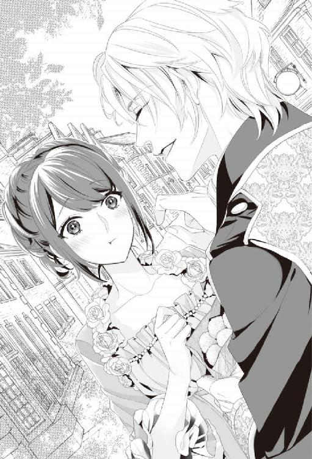
「美月？ そんな風に頰を染めていると、僕のことが好きなんだって思ってしまうよ？」
ふわりと柔らかく王子の両手の中に閉じ込められ、至近距離でじっと見つめられて、美月の鼓動はますます高まってしまう。
だがその時、ふと視線を感じてそちらを見ると、美月達を見つめていたイサックに気づいた。視線が合った瞬間、イサックに行儀よく視線を逸らされて、美月は何だか切ないような落ち着かない気持ちになってしまった。
そんな美月の様子に気づいていないのか、王子はさらに明るい声を上げる。
「さて、美月はどこが見たい？ このまま市場を抜けて、王都の名所を案内するよ」
第七章危険なシエスタと、スイートな夜？
「食事は美味しかった？」
そう尋ねられて、美月は笑顔で頷く。どうしても美月と行きたい店があると、王子が連れてきた場所は、町の片隅のあまり賑やかではない地域にあった。裏路地を進んだ先にある店は、小さいけれど暖かい雰囲気の料理の美味しい店で、美月は王子との昼食を気兼ねなく楽しむことができた。
食事中、イサックは店におらず、そのことは気にはなっていたが、王子の前では極力気にしてないふりをしていた。だから店を出た瞬間に、外にいたイサックの姿に気づくと、ついほっとしてしまった。
「さて、次はどこを見に行こうか？」
そんな美月の気をひくように、王子は微笑みかける。
「どこに連れて行ってくれるんですか？ 楽しみです」
慌てて笑顔を返す美月の手を引いて、王子は裏路地を抜けた小さな広場にやってくると、竜を呼び出すことができるという竜笛を手に取った。その時。
「おや、こんなところで会うとはな......。しかも今日はなかなか可愛い恰好をしている」
灰色のフードに身を包んだ男性が、ゆっくりとこちらに歩み寄ってくる。
青空とは対照的なくすんだ色合いの姿で、顔を隠した男が近づいてくると、王子は美月を近くに抱きかかえるようにして警戒する。
「お前は誰だ？ この二人に何の用だ？」
イサックが男との間に体を割り込ませ、腰の剣に手をかけた。
「ああ、騎士殿、先日は手間を掛けさせた」
くくっと含み笑いを零すと、男はフードを跳ね上げて、顔を外にさらす。眼鏡のブリッジに指を伸ばしながら、男は唇を歪め、皮肉っぽい笑みを浮かべた。
「......ヴァレリー？ ......なんでこんなところに？」
それは『鍵』候補者の二人目、上級魔導士のヴァレリーだった。思わず美月が声を上げると、ヴァレリーは王子に一礼して、美月に顔を向けた。
「ちょっと例の件をいろいろ調べていてね。......ところで結局『鍵』回しをすることになったらしいな」
ちらりと王子の顔を見ながら、ヴァレリーは一歩踏み込んで、美月の耳元に顔を寄せる。
「『鍵』を回すなら、最初から俺を指名すればいいものを。この前みたいに、散々可愛がって、よがらせて、虐めてやるのに......」
美月だけに聞こえるように、少し掠れた声で艶っぽく囁くヴァレリーに、あの日のことを思い出し、美月は全身に熱がこみあげてしまう。そんな美月の様子をイサックは狂おしげな顔で見つめている。
「──だが今夜の美月の相手は僕だ。そして、君には二度と儀式の順番は回ってこないと思うよ」
王子はそう告げると、かばうように美月をきつく抱き寄せた。耳元で唇を寄せているヴァレリーと、美月を強く抱きしめる王子に、板挟みになるという刺激的な状況に、思わず美月は妙な緊張感を感じ、呼吸が止まりそうになってしまう。
「なるほどね。......だが俺にも少々思うところがあってだな。そもそも......」
ヴァレリーは飄々とした口調で軽口を叩きかけるが、ふときつく眉をひそめた。それと同時に、美月の傍に立っていたイサックも苦虫を嚙み潰したような顔をして、広場の向こうに鋭い視線を送る。
「......アルフェ、この魔導士のせいかどうかは知らんが、なんだか面白くない状況になってきたようだぞ」
「あの......何のことですか？」
美月が怪訝な顔をすると、
「なるほどね。僕にはたった一日の楽しいデートすら許してもらえないってことだね」
王子はそれには直接答えず、代わりに金色の髪をかきあげて、憂うようにため息をついた。
「──サーシャ、出ておいで」
次の瞬間、空間に白いものが浮かぶ。その姿を見て思わず美月が声を上げた。
「......ミーシャ？ どうしてここに？」
「残念。ボクはミーシャじゃない。ボクの名前はサーシャ。ミーシャはボクの兄だよ。ボクの一族は代々王家に仕える使い魔だけど、ボクの今の主はアルフェ様だけ。ってそんなことはいいけど......」
「この辺り一帯、囲まれているね。多分ルドルフも呼び出せないと思うよ」
ミーシャそっくりの王子の使い魔は、赤い瞳を瞬かせて、くるくると王子の周りを飛びまわりながら、そう告げた。ヴァレリーは人差し指を唇に押し当てて、何か呪文のような言葉を低く呟く。
「どうやらこの辺り一帯で、結界を張られたようだな。単体ではたいした能力者はいないが、なんせ十数名で結界を作っている。術式がちょっと......簡単に解除できそうもない。その精霊に手伝ってもらっても、結界を解くまで少し時間がかかりそうだ」
ヴァレリーがそう言ってちらりと美月の方に視線を送る。
「しかし随分手の込んだことをするものだ。狙いは、この可愛らしい司書殿か......はたまた、『鍵』候補者の方か......」
イサックは美月の方に体を寄せながら、広場の向こうで突然起きた土ぼこりの方角に視線を送り、剣の柄に手を伸ばした。
「......目的はわからないが、俺が護る最優先は美月だ。ごたごた言っている暇はない......」
「──来るぞっ」
イサックの表情が見たことが無いほど厳しいものになる。紫色の鋭い光を帯びた瞳は、土ぼこりが上がった辺りを睨んでいる。
「まずは女を狙え！」
もうもうと上がる土ぼこりの中から剣吞な声が上がり、あっという間に数名の男達が駆け寄ってくる。黒い髪に黒い瞳、ひげを生やし、薄汚れた衣装と荒々しい風貌をした男達の様子に、美月の背筋をゾクリと恐怖が駆けあがっていく。
「砂漠の民か。サーシャ、その魔導士が結界を破るのを手伝ってあげて」
サーシャは王子に言われた通り、何か呪文のようなものを唱えているヴァレリーの肩に乗り、明るい光でその体を包みこんだ。それを見届けると、王子は男達を見据え、口元で手のひらを空に向け、息を吹きかける。
「......主と精霊の御名において、アルフェの元に集い、我に味方せよ」
王子の手のひらから、光のようなものが出ると、それはみるみる十センチほどの大きさの人型を模した生き物になる。
襲い来る敵に向かって駆け出していたイサックは、腰の大きな剣を抜き、先頭に飛び出してきた男を大きく横に薙ぎ払う。一斉に刀を振るい襲い掛かる男達の周りで、イサックに追いついた小さな妖精達が、敵の刀を一本ずつ光らせていった。
「......う、動かないぞ？」
男達の何人かは刀を取り落とし、呆然としている。
「その小さいのを刀に触れさせる前に切り捨てろ！」
精霊の存在を理解している者の言葉に、男達は王子の小さな妖精達を襲い切り捨てていく。美月はその光景が現実のものとは思えず、声もなく見つめていることしかできない。
「......ピクシー達も頑張ってくれてはいるが......このままではキリがなさそうだな......」
また一人、冷静に砂漠の民を薙ぎ払いながらも、イサックは一瞬後ろを振り向いて、呆れたような声を上げた。
イサックの視線の先、今敵が来たのと逆の方に、また新たな土ぼこりと共に人影が現れる。
「このままではジリ貧だ。結界で閉じた空間に、傭兵をどれだけ投入するつもりかもわからん。このままでは魔導士殿が結界を解くにも不便だろう。この傍に教会があったはずだ。あそこに逃げ込もう」
イサックは刀を持って飛び込んできた男を、返り討ちにしながらそう叫ぶと、ヴァレリーは組んでいた印をいったん解除する。
「そうだな。確かにここでは騒がしすぎて、集中力を欠く」
くくっとヴァレリーは瞳を細めて笑いながら、何かを呟き、指先を新しく出てきた男達に向けて指さす。
「......君達は、少しそこで遊んでいたまえ」
眼鏡を直す仕草をしながら、そう言ったのと同時に、男達のいる辺り一帯が、突如炎で覆い尽くされた。黒づくめの男達が、突然現れた炎に狼狽して、服に付いた炎を打ち消そうと必死になっている。ヴァレリーはそれを見て嘲笑うと、
「──では教会で」
そう一言だけ言って姿を消す。ヴァレリーの様子にあっけに取られていた美月が、ハッと気づくと、彼女の両手には、近くにまで戻ってきた王子とイサックの手が片方ずつ、しっかりと繫がれている。
「信じて。命に代えても、君だけは守るから」
耳元で、こんな場合なのに甘く囁く王子の声が聞こえる。
「急げ。転ぶな。死ぬ気で走れ」
合理的すぎるイサックの指示が、不必要なほど深く良い声で美月に向かって飛んでくる。美月は状況がよく理解できないまま、二人に手を引かれて、とにかく転ばないように教会に向かって走り始めたのだった。
「......騒がしい。何事ですか？」
イサックと王子に連れてこられた建物に飛び込んだ瞬間、聞こえてきた声と正体に、美月は絶句した。突然の闖入者に鋭い声を掛けたのは、司祭のエルラーンだったからだ。昨夜、美月に怖い思いをさせた当の本人が眉をひそめて、闖入者の顔を確認する。
「......どうされたのですか？」
「......面白くないな。これで『錠前』と『鍵』候補、全員集められたってことか......」
尋ねるエルの言葉を無視して、後ろから靄と共に現れたヴァレリーがため息をつく。
「なるほどね。この人が『鍵』候補、三人目の司祭様ってことかな？」
王子の言葉にイサックが頷く。
「偶然にしては出来過ぎだな。ところで司祭殿、ここで何をしている？」
荒っぽいイサックの問いに、エルは穏やかな笑みを浮かべて答えた。
「ここの司祭が体調を崩しまして、代わりに私が日常の祭事を執り行うように、シェラハン司教様に言われて参ったのですが......」
エルの悠長な答えに、ヴァレリーは苛立ち混じりにため息をつく。
「......貴方は気づいてないのか？ 今、この一帯で結界を張られていることに」
エルはヴァレリーの問いに対して、申し訳なさそうな顔をした。
「すみません。魔導方面は詳しくなくて」
「いや、いい。とにかく結界を張られた上で、俺達は襲われた。だからまずは結界を解除するために、霊気の安定したここに逃げ込んできた、ということだ。協力してくれ」
エルは思慮深い瞳を細めて難しい顔をする。
「......襲われた......それは物騒な......。ではまずは結界を破壊しないと逃げられないし、助けも呼べない、ということですか？」
「そういうことだ。流石、司祭殿。理解が早くて助かる。というわけで教会を借りるぞ」
ヴァレリーは祭壇の奥に入ると、サーシャを呼び寄せた。
「すまないが王子と騎士殿。しばらく時間稼ぎを頼む。俺は結界を解くのに専念する」
「わかった。そちらは頼んだ」
イサックはヴァレリーの方を振り向くと、言葉少なく答えた。
「美月、いい子でそこにいてね。僕とイサックとでアイツらを食い止めるから。司祭様と安全なところで待っていて」
王子はいつも通り、長い睫毛を揺らして優しく微笑むと、恋人を安心させるように美月の髪にそっとキスを落とす。イサックはその様子を複雑そうな表情で見ていたが、何かでドアを破壊しようとするドンドンという物音に、慌てて視線を前に戻した。美月は恐怖と混乱の中でも、淡々として何も言わないイサックの様子に、不安で胸がぎゅっと締め付けられる。
「司書殿。貴女はこちらで......」
昨日のあの怪しい雰囲気を微塵も感じさせない、聖職者そのものの顔をしたエルが、美月の手を控えめに引いて、教会の奥に置かれたパイプオルガンのような楽器の椅子に座らせ、その前に立つ。
ガンガンと扉を壊すような激しい破壊音がして、次の瞬間ついに、扉を貫く大槌の姿が見えた。
「──来るぞっ！」
低く鋭く吠えるようなイサックの声がした。襲撃者に立ち向かうべく、前に立つ二人のことが心配で、美月は息が苦しくなるほどの恐怖を感じる。ギュッと胸の前で手を握ると、エルが振り向いて、真剣な表情で大丈夫だと伝えるように頷いた。
ワアアアアアア、と怒号のような声が聞こえる。半分だけ壊れた扉の前に立つイサックは、冷静に扉から入り込んできた者を順番に斬り捨てていく。
「ピクシー達、ごめんね。もう少し僕に力を貸してくれるかな」
王子も片手に剣は持っているが、ほとんどそれを振るうこともなく、小さな精霊達を操って、イサックだけに攻撃が集中しないように、援護している。仲が悪そうに見えた二人だが、息はぴったりと合っていると、美月はこんな場面なのに、二人の共闘に微かに唇が緩んだ。だが。
「......つぅ......」
幾度も繰り出される男達の刃物が、イサックの剣の上を滑り、その切っ先が頰を掠めた。咄嗟に身を引いたイサックは、体勢を崩しながらも、その男を斬り捨てる。すぅっとその頰に血の珠が浮き、ぽたり、と赤い滴がしたたり落ちた。美月は刃物の恐怖に改めて、全身をぞくりと震わせる。
（なんで......こんなことになっちゃったんだろう......）
穏やかで楽しいデートが突如、こんな風になってしまったことに、美月は理解が追いつかない。平和な現代の日本では、想像もつかない光景がそこに展開している。
「お前らには美月は渡さん......」
体勢を崩しながらも、頰の血を手の甲で拭い、歯を食いしばるように唸るイサックの横を、さらに敵の刀が掠める。
「あっ危ないっ」
思わず美月は声を上げてしまった。だが、その開いた脇に王子が飛び込んで、敵の刀を受け止めた。
「偉そうな口を利く割には、イサックは脇が甘いんだよ」
「ほう、従弟殿。剣の使い方は知っていたか」
はっと息を継いで、王子が受けた刀の持ち主を、体勢を立て直したイサックが切り捨てる。
「元はといえば、僕が美月を守る『騎士』になるはずだったからね。まあ今となっては、美月の『鍵』になるほうが、ずっと素敵なことだと思うけど」
一歩引いてイサックの戦う空間を空けながら、王子は挑戦的に言い返した。
「............」
思わず黙り込むイサックが、王子を睨む。美月が妙な緊張感の走る二人に意識を奪われていると。
「あっ......」
不意に空間に現れた何者かに、美月は突然後から抱きかかえられて、恐怖に身が竦んだ。怯えに喉が凍りつき、声を上げることすらできない。
突然美月を奪うように現れた男は、ヴァレリーと似たようなフード付きのマントを身に着けている。
「......神よ、お許しをっ」
その時、美月の異変に気づいたエルは、咄嗟に腰に刺さっていた儀式用の短刀を手に取り、男に斬りかかっていた。慣れない荒事に震える切っ先が、印を結ぼうとしていた男の腕に辛くも突き刺さる。
目の前でぱっと散った血に、美月が声にならない悲鳴を上げた。刺したエルも、自身の芸術品のように美しい手に付いた男の血の痕に、呆然とした顔をして固まってしまった。
「お前らよくも......」
美月を拘束している男は滴り落ちる血に目をやり、ののしりながらも、再び手を動かし始める。
「その男に印を結ばせるのをやめさせろ。美月ごと飛ばれると厄介だ」
その声に、美月は男の腕に縋りついて、手の動きを抑え込む。ヴァレリーが駆け寄りながら素早く術を唱えると、男は一瞬で動けなくなった。
「──結界、破れたよ」
くすっと笑ってサーシャが美月の前に姿を現す。
「ああ。お前ら、騎士でも、竜でもなんでも好きに助けを呼ぶがいい。細かい事情は生き残りの奴から聞けばいいしな」
勝ち誇ったようなヴァレリーの声が教会内に響いた。教会に襲いこもうとしていた男達は、その声に撤退の号令を掛け、蜘蛛の子を散らすように、一斉に逃げていった。
「......くっ。これまでか......」
その時。美月を連れ去ろうとしていた男の体が、くたりと力を失い、枯れ木のようにドウと音を立てて倒れた。
「ちっ......こいつ、自決用に何か毒薬でも飲んだのか？ 誰か治癒魔法のできる奴いるか？ 俺は不得意なんだよ、そっち方面はっ」
狼狽したヴァレリーは、咄嗟に倒れた男の顔を覗き込み、首の脈を確認する。
（なに......何が起こったの？）
顔を左右に振って、男が死んだことを周りに伝えるヴァレリーを見ながら、つい先ほどまで、自分を捉えていた男が目の前で倒れ、血を吐き息絶えたのを知って、美月は口元に手を押し当てたまま、言葉を失う。
今までいた現代社会と、この世界が違うということはわかってはいた。だが人の命が、あっさりと潰えるその様子を見て、美月は自分のいた世界とこの世界が、道徳も価値観もまったく別の世界だということを、改めて認識していた。
不安な気持ちがこみ上げてきて、咄嗟にイサックの姿を確認する。だがそこには、襲ってきた敵達の血で真っ赤に染まった剣を持つイサックがいて、美月は衣装まで返り血で赤く染まった彼の姿を凝視してしまう。
「......美月？ 大丈夫だったか？」
「大丈夫？ 美月！」
イサックは走り戻ってきながら、美月に声を掛けた。だが王子が同時に、大きな声を上げて美月に走り寄ってくるのを見て、緩やかに歩調を落とす。美月の視線を辿るように自分の服の汚れを確認し、美月から視線を外す。イサックのそんな様子に、美月は何故か自分を拒否されたような気持ちになって、胸をえぐられるような気持ちになっていた。
（なんで......イサックに視線を逸らされるだけで、苦しい気持ちになるの？）
思いは言葉にならず、その代わり、駆け戻ってきた王子に抱きしめられた瞬間、美月はその温かくて頼りがいのある体に、心身とも守られ、思わずホッとしてしまっていた。
「美月、大丈夫。もう怖いことは何もないからね......」
優しくて柔らかいその言葉に、限界に達していた緊張の糸が切れ、そのまま美月は王子の腕の中で、ゆるやかに意識を失っていたのだった。
その後、『鍵』候補達は状況を報告するため、そのまま教会本部に向かうことになった。
「最後はこんなことになってしまったけど、後で美月のところに行くからね。今日のデートの続きは、また今度ゆっくり仕切り直そうね」
王子は意識を取り戻した美月にそう告げると、名残惜しげに美月の頰を撫でて、その傍らに立つイサックに向かって不機嫌そうな顔で話しかける。
「間違いなく彼女を、無事、図書館に連れ帰ってよね。まあターリィに任せておいたら安心だとは思うけど」
その言葉にイサックは何も言わずに無表情で頷く。そして美月はイサックと共に、ターリィに騎乗して図書館に戻ることになった。
＊＊＊
「............」
「............」
イサックに抱きかかえられるように竜に乗せられ、羽ばたいた竜は空を駆ける。日は地平線に向かって傾き始め、日差しは仄かに黄昏色を帯び始めている。朝はあんなに心を弾ませていたのに、今は千々に乱れる感情のせいで、眼下に広がる見事な景色も美月の視界には入ってこない。二人っきりになると昨晩のことを思い出してしまい、互いに交わす言葉に迷う。何とも言えない沈黙が二人の間を包んでいた。
「──さっきは......怖い思いをさせて悪かった。体は大丈夫だったか？」
しばらくして、風を切る音が聞こえる中で、イサックが美月の耳元で尋ねてくる。労わるような穏やかな声が、美月の胸に染み込むようだった。
「はい、大丈夫......です。でも、なんであんなこと......」
「さあな......何かしら理由はあるはずだが、今はまだ......」
沈んでいるイサックの声に美月は視線を上げる。先ほどの返り血の痕を消すように、イサックは服を着替えていた。ふと、先ほどの彼の頰をかすめた刀の情景が脳裏に浮かび、再び心臓が冷えるような気分になる。ゆっくりとイサックの顔を見上げると頰に出来立ての刃物傷が見えて、美月は思わずその頰に手を伸ばしていた。
「あの......イサックこそ、大丈夫だったの？」
「──っ」
美月がイサックの頰に触れた瞬間、イサックは黄昏空より深い、暁色の瞳を微かに見開くようにして、はっと小さく息を漏らした。
「あの......痛い？」
慌てて尋ねる美月を見て、イサックは苦笑を浮かべ、顔を左右に振る。
「イサック......いつも助けてくれてありがとう」
美月の言葉にイサックは瞳を伏せた。
「礼は不要だ。お前を守るのが俺の責務だからな......」
美月はイサックの言葉に返すべき台詞を失う。彼の『責務』という言い方はいつも冷たい響きを伴っている。だが、美月が困っている時に助けてくれるのはいつだってイサックだ。そしてたまにその対応は、単なる義務を超えているのではないかと、美月はつい期待したくなるのだ。
（昨日の夜だって......）
ふと考えないようにしていたことが、脳裏に浮かぶと、美月はじわりと恥ずかしさに体が熱くなるような気がした。
昨日の夜、エルのしたことに、イサックが激しく憤っていたように見えたこと。自ら体を洗うと言ってくれたこと。恥ずかしい恰好の美月を抱きかかえて、何故イサックは美月にキスをしたのか、ただ洗うだけだったはずなのに、あんな風に美月を悦楽の頂点まで導いたのか。
（単にその場のノリみたいなものだったのかな。さもなければ、ちょっとしたいたずら心？ たんに欲望に流されただけ？ それとも少しぐらいは......）
でも不倫馬鹿男みたいに、単に欲望に弱いだけかもしれない。期待と不安に戸惑う美月は、再び傷つくのが怖くて、少しでも精度の高い答えを得ようとして、無愛想な顔をしたまま、美月を抱きかかえている男の顔を見上げる。だがその冷静な表情は何も答えをくれず、尋ねる余地すら与えてくれない。
（少しぐらい......私を思ってしてくれたことだったらいいのに......）
無意識でそう考えて、次の瞬間、昨日あんなことをしてしまった相手の腕の中で、私は何を考えているんだろう、と急に羞恥心がこみ上げてくる。恥ずかしさに急に逃げ出したくなって、思わず体が先に動いてしまった。
「どうした。危ないから大人しくしておけ」
だが、少しぐらい美月が動揺して暴れたくらいでは、イサックの硬い腕の中にしっかりと抱えられてしまうだけだ。そして彼の腕の中で拘束されていることに、美月は体中がきゅんとするような甘い震えを感じている。
「......日が暮れるな......」
ぽつりとイサックが呟いた。美月ははっとして、沈みゆく夕日に視線を送る。日が沈めば、今度は王子との儀式の夜がやってくる。思わずぎゅっと手を握りしめて、美月は小さく吐息をついた。でもそれはもう決まったことだ。きっと王子なら優しくしてくれる。今夜、『鍵』も回せて、ジェイとセイラを救うことができるかもしれない。不安で潤む瞳を、慌てて夕日に向けて瞬かせると、
「......そんな顔をして泣くな......」
困ったように呟くイサックの声で、美月は自分が涙を零していたことに気づく。
「ゆ、夕日が眩しかっただけですよ」
慌てて涙を指先で掬い、取り繕うように答える美月に、イサックは小さく息を吐き出す。
「お前に泣かれると......俺は弱い」
「......え？」
吐息交じりに零れ落ちたイサックの言葉に、一瞬顔を見上げてしまいそうになる。だが、しっかりと抱きかかえられて、その表情を確認することはできない。
「......心配しなくてもいい。大丈夫だ」
「え？」
「アルフェは性格も穏やかで優しい奴だから、多分お前を幸せにするだろう......」
その言葉は私の欲しい物じゃない。そう美月は思う。胸に杭を打たれたようにズキンと痛むのは、彼から明確な線引きをされたせいなのか。それでもこんなことを言うイサックの声に、どこか切なげな音を感じるのは、美月がそう望んでいるからなのか......。
「──本来なら、『図書館の騎士』には、俺ではなく、アルフェがなる予定だった」
どこかほろ苦い笑みを浮かべ、イサックは暮れようとしている夕日に視線を送る。
「アルフェは小さい頃は体が弱くて、しかも騎士になる年齢の頃に大病を患って、騎士の資格なし、と判断された。それで代わりに王家の血筋の中から、アルフェと同い年の俺が選ばれた......」
夕日のまぶしさに美月は瞳を細めながら、イサックの見ている先を共に見つめる。イサックの低く深い声が心地いい。ただこうして彼の腕の中でその声を聞いているだけで、美月はたまらないほどの幸せと、それが決して永遠ではないと知っているから、身を切られるような切なさを感じる。
「アルフェは生まれた時から、ソウルメイトであるルドルフという存在がいたし、精霊使いの才能もあった。子供の頃はそれがすごく羨ましかった......。俺の持っていないものを、憧れているものを、欲しくてたまらないものを、アイツは当たり前のようにいくつも持っていた。だからアルフェの代わりに騎士にと言われた時、アイツの代わりに求められたことが純粋に嬉しかった」
一瞬、ふっとイサックは目を瞑る。
「......だがなんで、いつもアイツなんだろうな......」
「......え？」
吐息交じりの言葉が聞き取れず、ふと振り向き、美月はイサックの端正な横顔を見上げた。
「......いやなんでもない。──ターリィ、日が暮れる前に図書館に戻ろう」
美月が聞きたいことは何一つ聞くこともできないまま、イサックに声を掛けられたターリィは、二人を図書館まで連れ帰ってしまう。図書館では、心配そうな顔をしたセイラが待ち受けていて、少し早めの入浴と食事を勧めてくれた。
＊＊＊
既に日は暮れて、満月より少し欠けた立待月が、ようやく地平線から昇り始めている。イサックは食事時に美月に会うのを避けて、中庭ではなく、ターリィと共に裏庭に来ていた。
「............」
誰もいないという安堵感で、イサックはつい深いため息をつく。ターリィは普段とは違うイサックの様子を心配そうに見つめていた。
「ああ、ターリィ、わかっている。自分の立場くらいはな......」
（踏み込みすぎたから、苦しむのだ）
だから自分の苦悩は、単なる自業自得だ。──イサックは自嘲した。
『鍵』回しの儀式は通常、図書館棟の儀式の部屋で行われる。儀式の部屋で行われることは、言わば神事に近い。現の男女の交わりとは別の物だ、とイサックも十分に理解している。だが、多感な思春期を、セイラとジェイという愛情深い一組の恋人同士を見て過ごしたせいで、いつしか根幹に愛情があって、初めて自然な形で成り立つ儀式だ、と考えるようになっていた。
だからこそ、昼間、美月とアルフェが親しげに一緒にいるのを、少し離れたところで見る羽目になって心がザワついた。二人が今夜、儀式を行う、ということを単なる神事で片づけられない自分がいる。
「......人とは愚かだな......」
セイラにも、いや以前ジェイにも言われたことだ。騎士は『錠前』を護るのみ。大切な存在と思っても、それ以上の感情は禁忌だ。
恋してはいけない。愛してもいけない。それをするのは『鍵』の役割だからだ。だから、愛情深いアルフェが『鍵』ならば、それは『錠前』にとって喜ばしいことだ。少なくともこの間のあの司祭などよりはよっぽど。
（俺は『騎士』として、いつでも手を差し伸べられるところで、美月を見守り続ければいい）
「......大丈夫だ。自制心だけは自信が......」
──あったはず、だったんだが。
思わず苦い笑みが漏れる。自制心があれば、そもそもこんな感情に陥ったりはしなかった。だが時が経てば、きっとどんな想いも日常にふさわしい、穏やかなものに変わっていくだろう。ならば......。
「今日は......早く夜が更ければいい......」
つい本音が漏れてしまう。
本来であれば、今日の襲撃の真意を考えた方がよほど職務に前向きだ。だが、こんな乱れた心では冷静に考えることに集中できない。そんな情けない自分に苛立ちを感じながら、イサックは空を見上げた。月は雲に隠され姿が見えない。イサックの今の気持ちの如く、闇の深さを増していく......。
その時、ターリィが、ハッと顔を空に向けた。それと同時に雲の合間から覗いた月に、照らされる影が見えた。徐々に近づいてくる力強い羽ばたきの音は、ルドルフのものだろう。
──いよいよ、その時が来て。
イサックの深い深いため息は、宵闇に溶けていくばかりだった。
＊＊＊
美月は悩みながらも、用意された薄物を着た。そして、もうじき王子が来ると知らされ、緊張してベッドサイドに座っている。
「今夜こそちゃんと『錠前』を開けてもらわないと......」
そう自らに声を掛けて励ます。『鍵』を回すなら、すべてを受け入れないといけない。たった一度しか男性を受け入れた経験がない美月には、それが酷く恐ろしいことのように感じている。
「だけど何があっても、第三階層まで開けてもらうんだから......」
最悪でも候補者全員と『鍵』回しの儀式をすれば、『鍵』は絶対に回るはずなのだ。
（なんとか三日、頑張れたら、セイラに大事な恋人を取り戻してあげられる）
美月が決意を新たにした瞬間。
──そっと扉をたたく音がした。
「美月、今日は大丈夫だった？」
王子はベッドサイドに腰かけた美月の前でひざまずくと、緊張にかすかに震える美月の冷たい手を握りしめる。見上げる琥珀色の瞳は心の底から美月のことを案じているように思えた。
「......王子......」
美月の気持ちは未だに乱れている。気にかかる存在がいながら、他の人に触れられることが、正直正しいこととは思えない。けれど......。
「......今日は怖かったよね。もし今夜、儀式をする気持ちになれないなら......」
優しく手を握り、美月を労わるように尋ねる王子の言葉に、美月はそっと顔を左右に振った。
「もう......ジェイとセイラにはあまり時間が残されてないから」
「......君って子は......」
一瞬、王子は瞳に憂いを乗せて囁く。
「......そう。だね」
それから王子は一瞬唇を歪め、次の瞬間、ふわりといつも通りの優しい笑みを浮かべた。
「......なら。今夜の儀式が美月にとって、幸せな記憶に繫がるように、僕は全力で君を愛そう。だから美月は何も考えなくていい。僕だけを感じて」
王子はくすりと妖艶に笑うと、絹糸のような金色の髪をかきあげる。指先の合間から見せる視線が、一気に艶めいたものに代わり、美月はその変化にゾクリと身を震わせた。
「それに僕は出会った時から、ずっと美月が欲しくてたまらなかったから......君がいいって答えてくれたら、もう止められなさそうだ」
王子は立ち上がると美月の手を握りしめたまま、少しだけ強い力で美月をベッドに押し倒した。
「美月を欲しがったのは僕だから。美月はただ手折られる花のように、素直に僕に身を預けてくれたらいい......」
美月を見下ろしながら熱っぽく囁く。次の瞬間、首筋に柔らかな熱を感じた。
「......んっ」
思わず上がる声に、王子が顔を上げて、親指の腹で美月の唇をゆっくりと撫でた。艶めいた仕草と感触に、美月は思わず、ドキンと胸が高鳴ってしまう。
「美月......可愛い」
次の瞬間に美月は唇を塞がれて、ぎゅっと瞳を閉じる。
（......これで、いいんだよね？）
角度を変えながら、何度も啄むように優しくキスされる。穏やかでゆっくりと美月の官能を引き出すように繰り返されるキスに、どこか甘い香の薫りが漂い始めた部屋の中で、美月は徐々に思考を奪われていく......。
王子はゆっくり時間を掛けて、上半身から徐々に下方へと、指と唇で繊細な愛撫をしていった。そして美月の内太腿に唇を寄せると、そのまま細く尖らせた舌を美月の中心部に向かって這い上らせる。
「はぁ......やぁあっ」
ここ数日の間に感じやすくなった美月の体は、自身の複雑な思いに逆らい、媚薬香の助けもあって、気づけば王子の唇が感じやすいところに早く来て欲しいと、素直に願うようになっていた。王子は美月を怯えさせないように、ゆっくりと時間を掛け、たくさんのキスを落としながら、美月の花びらをそっと指先で開く。
「......あぁっ」
王子は恥ずかしさに身を震わせる美月の、潤んだ蜜口を柔らかく指で撫でた。
「ほら、こんなに蜜をたっぷり蓄えている。美月、本当に可愛い......」
嬉しそうに囁くと、そのまま蓄えられた蜜に舌先を浸した。ヒクンっと美月は体を震わせながら、淫らな口づけを受ける。
「やぁ......ダメっ......」
美月の言葉を無視して、王子は開かれたそこに唇を押し当てて、温かい舌で美月の蜜口を舐めとり、吸い上げた。
じゅる。じゅ。じゅじゅっ。
とろとろに濡れているところを、淫靡な音を立てながら啜られて、美月は恥ずかしさに身悶える。
「......んっ......美月のココ、すっごく......美味しいよ」
「やぁっ......ぁあっ......はっ......あぁんっ」
弄りやすいように、指でむき出しにされた感じやすい芽に音を立てて吸いつかれて、美月は体を激しく跳ね上げる。美月の唇からは絶えず啼き声が零れ落ちていた。
「......もっと啼いて。美月が気持ちよくなるように、一杯弄んであげるから」
王子の言葉に美月は小刻みに体を震わせて、先ほどよりさらに高い声を上げ続けている。室内には淫靡な水音が絶えず聞こえていた。一番敏感な部分を吸い上げられ、舌先で嬲られて、美月はもう何も考えることができない。
一瞬、王子の動きが止まり、美月の顔をじっと覗き込む。王子は美月に見せつけるように、自らの親指の腹で蜜に濡れた唇を拭うと、指先をおいしそうに舐め取り、目を細めて笑った。
「舐めても舐めても、拭えないくらい蜜があふれているよ。ここも愛らしくぷっくりと立ち上がっているし。......そろそろ一度逝かせてあげようか？」
「──っ」
くちゅり。くちゅり。もう一方の指で、膨らんでいる芽を柔らかく刺激しながら、王子はじっと乱れる美月を見つめている。
「ぁ......王子っ......恥ずかし......っ」
「これからもっと恥ずかしいことを、僕とたくさん、しようとしているのに？」
「んっ......んふぅ......んっ」
唇が寄せられ、深く口づけられながらも、王子は美月の膨らんでいる部分を指先で弄び続けている。くちゅ。くちゅり。と聞こえる音は、絡み合う舌から聞こえる音か、美月の中心から聞こえる音か、もう区別すらつかない。
「んっ......あっ......んんっ......やぁ......んんんっ」
ねっとりと深く絡み合う舌が美月の体の感度も上げていく。気づけば美月は体を震わせて、王子の指先の思うままに、軽く達してしまっていた。
「あれ、もう逝っちゃったの？」
からかうような声を上げながら、王子は美月の額に優しく唇を落とす。美月は恥ずかしくて、泣きそうな顔をしながらキスを受けた。
「じゃあ......そろそろ僕も美月に気持ちよくしてもらってもいい？」
その言葉にドキリとしながらも、美月はそっと頷く。怖くないと言えば噓になる。だけど『鍵』が回るか確かめてみなければ、きっともっと後悔する。あの二人には余り時間は残されてないのだから。
一瞬イサックの苦し気な表情が脳裏に浮かんだ気がして、慌てて美月はぎゅっと目を閉じた。そんな美月に王子は優しくキスをする。
「んっ......」
微かに衣擦れの音がする。美月の服を完全に奪い、王子が羽織るだけになっていた服を脱ぎ捨てるのを気配で感じ取る。王子に再び抱きしめられると、肌同士が触れ合って、心臓の鼓動が王子に伝わってしまいそうだった。王子がゆっくりと熱く硬いモノを、美月の大きく開かれた体の中心部に押し当てる。
「怖がらなくていいよ。ゆっくりと......挿いるから」
美月の髪を梳きながら、王子はそっと唇に触れるだけの口づけを落とす。優しい瞳に見守られながら、美月はゆっくりと王子を受け入れていった。
「......はぁっ......んんっ」
「美月の中。キモチイイっ......」
ゆっくりと王子は寄り添わせるように、美月と肌を重ねる。重なり合う体が温かくて、美月は少しだけ力を抜いた。じっくりと押し広げられる感覚に、美月は身を震わせる。
「......美月？ ちゃんと入ったよ」
視線を合わせると、愛おしげに王子は美月の頰を撫ぜた。それから彼は美月が落ち着くのを待って、緩やかに動き始めた。柔らかく緩やかに挿抜されて、美月はじわじわと気持ち良さが強まるのを感じている。
「ああ。美月の中、熱くてトロトロで狭くて気持ちいい。もっと奥まで感じさせてもらってもいい？」
艶っぽく瞳を細め、金色の髪を揺らしながら、うわ言のように甘く囁く王子の言葉にかすかに頷くと、彼は体重を掛けて、美月を深く貫き始めた。
「あっ......ぁぁっ......はぁ......あぁ......ん」
少しずつ激しさを増して抱かれる悦びに、美月は体を開き、無意識で王子の体にしがみついて、もっと深いところでその熱を受け入れようとしていた。奥まで交わると、押し広げられた状態で感じやすくなった芽を、淫らに腰を使う王子の体に擦りたてられて、それがさらなる愉悦を誘う。
「ああ美月。乱れる君も本当に綺麗だ......もっともっと、気持ちよくなって」
熱を帯びる甘い王子の声に、美月の感覚はより従順になる。
「あぁ......ソレ、ダメっ気持ちよく......なっちゃう......」
徐々に乱れていく美月をベッドに打ち付けるような動きで、深く貫き、さらに追い詰めながら、王子は再び美月の唇を奪う。
室内に漂う甘い香に高められるように、二人が交わり合う淫らな水音が規則的に聞こえる。そのことすら美月の感度をより一層高めていく。王子の硬く熱いモノが、美月の締め付ける柔襞を擦り上げるたび、ぞくりぞくりと、快楽が深く強く、抑えようのないくらい増していく。気づけば王子の上手なエスコートで、美月は淫らな愉悦の中で、ただひたすら啼き続けていた。
「......ぁっ......もう......ダメ......あぁ......ぁぁっ......ああぁあぁああっ」
せり上がるような悦びに美月の呼吸が乱れていく。甘く蕩けるように声を上げると、美月は王子の体にしがみついて、激しく律動するモノを受け入れながら、絶頂へ追い詰められていった。
「美月......ありがとう。可愛かったよ」
既に王子は美月との繫がりを断っている。代わりに美月をその腕の中に抱きしめるようにして、そっと額にキスを落とした。
「......けれど、『鍵』は回らなかったね」
切なげに王子が美月の頰を撫でる。
「......あ......」
美月はそう言われて、初めてその事実に気づいた。人生で二度目の男性との関係に、必死になりすぎていて、そんな大事なことすらちゃんと認識する余裕もなかったのだ。美月は、王子の言葉を聞いた瞬間、ショックでざぁっと血の気が引いていく感じがした。
「ごめんね。美月はちゃんと僕に感じてくれたんだけど、『鍵』が回らなかった」
何度も美月の頰を撫でて、苦しげに囁く。
「本当は、僕が美月の『鍵』になりたかったんだけどね。......すごく残念」
「あ、あの......私。王子が『鍵』だったらいいのにって......そう、ずっと思っていたんです」
王子が落ち込んでいる様子が伝わってきて、咄嗟に美月はそう言ってしまう。優しくて親切で穏やかで、候補者の中で一番安心していられる人が王子だったから......と、美月が言葉にすると、
「......ありがとう。美月がそう思ってくれていたのは嬉しいよ。でもこればかりは、決められた運命みたいなものだからね。そうか『鍵』候補の中なら、僕がいいってそう思っていてくれたんだ。でも......」
真剣なまなざしで、王子が美月を見つめる。それからそっと躊躇うように、その名を口に乗せた。
「......でも本当は、イサックの奴に惹かれている......そうだよね？」
真正面からそう尋ねられて、美月は声を失った。それは今日王子といる間にも、ずっと意識の奥に常にいた人の名前で、考えてはいけないと思いながらも、美月の心にするりと入り込んでしまう人のことだったからだ。
「......もう、君は嫌になるほど正直だよね」
王子は困ったように言うと、そっと美月に唇を寄せる。だが、唇が触れる寸前で止めると、悲しげに視線を揺らがせた。
「美月は『鍵』候補から外れた僕に、もう無理に触れられる必要はないんだよ」
切なげな笑みを浮かべた王子の唇に、美月は自らの唇を寄せ、二人の距離を無くす。一瞬王子は目を見開いて、それからそっと閉じ、触れ合うだけの唇の熱をお互いに分け合った。
「ありがとう。王子が相手だったから、怖くなかったの。......大事にしてくれて嬉しかった」
唇を離し、鼻先を触れ合わせて、そっと囁く美月の言葉に、王子がくしゃりと顔を歪めて笑う。
「──こっちこそありがとう。僕は今日一日幸せだったよ。朝からずっと、素敵な君に恋することができたから......」
ゆっくりと王子は身を起こし、最後に美月の額にキスを落とすと、脱ぎ捨てた服を身に着け始める。美月はその後ろ姿を見つめながら、複雑に絡み合う感情に押しつぶされそうになっていたのだった。
第八章噓と偽りと思いやりの艶事
「......僕とイサックは、ことあるごとに複雑に交差する人生を送っているんだ」
着替えを終えると、美月の方を振り向いて、王子は苦笑を浮かべた。
「そもそも『図書館の騎士』は、本当は僕がなる予定だったし......それ以外にもね、本当は僕の生まれる予定の日に、イサックが生まれて、イサックの生まれる予定の日に僕が生まれたりね。予定通りなら、イサックがルドルフとソウルメイトだったかもしれないんだ」
「......そう、だったんですね」
「うん、だから昔っから僕達は、お互いの持っている物ばかり欲しがっていた。小さい頃、僕は健康で足が速くて、剣術が上手い彼が羨ましかった。......今だって、きっと......」
何かを言いかけて王子は小さくため息をつき、それから気を取り直したように視線を上げた。
「ごめん、ちょっと感傷的になりすぎた......」
王子はいつもの明るい笑顔を浮かべながら、美月に手を差し伸べてくる。握手をしながらウインクを一つ飛ばした。
「『鍵』にはなりそびれたけど、僕にとって美月が魅力的なのは変わらないから、また今度、今日のデートの続きをしようね」
「はい、楽しみにしていますね」
王子の優しい言葉に美月もにっこりと笑顔を返す。王子は名残惜しげに、握手した美月の手を持ち上げ、その指先にそっと唇を押し当てた。
「じゃあ、帰るね。今夜はゆっくりと寝るんだよ。いろいろと大変なことばかりあった一日だったから。──おやすみ、美月」
王子はすっと背筋が通った後姿を見せると、振り返ることなく、ふわりと春の風のように、儀式の部屋を出て行く。
王子が去って行く背中を見送りながら、美月は『鍵』回しが失敗してしまった事実に、改めて打ちのめされていた。胸が不安に締め付けられ、息苦しいほど動揺してしまっていた。再び泣き出してしまいそうに戦慄く唇を、ぎゅっと嚙みしめて、くんっと喉が鳴るのを必死に抑え込む。
それから美月は長い嘆息をつくと、気持ちを落ち着かせるようにゆっくりと着替えを済ませ、そっと儀式の部屋を抜け出した。
図書館の外に出ると、月は既に中空に昇りつめている。緑の湿った夜風に吹かれていると、今日のデートも、あの襲撃も、そして王子との逢瀬も、今日あったすべてが現実のことには思えない。それでも鍵が回らなかった、と言う事実は美月の胸に重たい重石のようにのしかかっている。
（......王子、ごめんなさい）
望んで抱かれたわけじゃないことを、王子はちゃんと気づいていた。なのに彼は最後まで、美月が本当の恋人だというように大切に接してくれた。だからこそ曖昧な気持ちでこういうことをしてしまった自分に、美月は嫌悪と罪悪感を覚えている。
（だけど......私の感情より、ジェイの命の方がずっと大事だから......）
そう自分に言い聞かせて納得していたはずだ。だけど、さっきの王子の様子を思い出すと、なんだか心がざわざわして、胸が痛くて苦しい。もしイサックが相手だったら、こんな思いはしなくて済んだのだろうか......。
ふと美月がイサックのことを思ったその時。
「......それは違う......」
裏庭の方から声が聞こえた。
美月はその声に導かれるように、そっと裏庭に踏み込んでいた。そこには、既に帰ったと思っていた王子と、イサックが並んで何かを話している。二匹の竜は大人しく二人に指示されるのを待っているようだった。
「お前はいつだってズルいよ。じゃあ美月のことは、どう思っているの？」
自分の名前が聞こえ、このままでは立ち聞きになってしまう、と思いながらも、美月はその場を立ち去ることができなくなっていた。
「......美月は『錠前』だ。それ以上でも、それ以下でもない」
冷酷とも思えるほど落ち着いたイサックの声音に、美月はズキッと胸に氷の楔を打たれたかのような痛みを感じる。
「じゃあ、これからも他の男が美月を抱いて『鍵』を回そうとするのを、一番近くで大人しく見ているんだ？」
挑発的に言う王子の言葉に、ほんの少しの間を空けて、イサックが言葉を返す。
「......俺の仕事は護衛だからな。『鍵』選びに関しては興味がない。ただ図書館と『錠前』が傷つかないように守ることだけ考えていればいい。『錠前』が他の女なら、その女を守るだけだ」
（わかっていたことだけど......）
改めてイサックの言葉で知らされる彼の思いに、激しく動揺している自分がいる。彼と自分との関係が、単に『錠前』と『図書館の騎士』というだけの関係だと──思いたくなかったのは美月の方だったのだ、と改めて認識させられていた。
「......お前はあの子を大事に思っていると、そう思っていたんだけどね......」
「......特に美月だから特別だということはない。『図書館の騎士』というのはそういう職務だ。必要があれば介入することもあるが、そうでなければ見守るだけだ」
淡々としたイサックの一言ひと言に、切りつけられるように胸が痛む。やっぱりイサックは、自分に特別な感情があったわけではなかったと、美月は苦い思いと共に納得していた。
「......そうだよね......」
美月は深いため息をついて、そっと踵を返す。先ほどまでの罪悪感が少し軽くなって、代わりに胸の中に苦しさと切なさが何倍も増して、降り積もっていくような気がしていた。
辛い時、怖い時に、何度も助けてくれたから、少しぐらい......自分はイサックにとって特別な存在になっていると、美月は信じたかった。
勝手な期待が、自分に都合よく心の中で育っていっただけ。誰かに縋りたい気持ちが、イサックへの甘えに繫がっていて、イサックはそんな私を許してくれただけ。『錠前』である美月を、単にはねつけられなかっただけ......。千々に乱れる感情に、自室に向かう足取りはどんどん早くなる。
（なのに勝手に失恋した気分になっているなんて、図々しい。私、一人で馬鹿みたい......）
こんな愚かな自分が悔しい。ここの世界に飛ぶ前の、何もわかってなくて無様に騙された自分と、何ひとつ変わってない今の自分が情けなくて。今日だって、どこかで二人の男性に大事にされていると思いこんで、浮かれていたのかもしれない。そんなどこまでも身勝手な自分がみっともなくて恥ずかしくて、今すぐここから逃げ出したい。
「......でも、明日も『鍵』回しの儀式があるんだよね」
自己憐憫に浸っていたって、現実は待ってくれない。こんな自分でも役に立てることがあるのなら、今はそのことだけに集中していればいい。イサックのことはもう考えるのをやめよう。たとえそれが逃げでもいい。
（王子が『鍵』じゃなかったってことは、多分『鍵』はヴァレリーなんだよね、きっと）
正直エルは美月にとっては異質すぎて、『鍵』が回る予感がまったくしない。だからエルだけは絶対に『鍵』ではないと美月は確信していた。それならば『鍵』探しは明日で終わるはずだ。だから今夜は早く部屋に戻って、お風呂に入ろう。『鍵』探しを終えて、セイラに最愛の恋人を返してから、これからのことを考えたらいい。
──今夜は何も考えず、早く寝よう。
美月はそう思いながら、半ば駆け足で中庭を抜けて自室へ戻っていく。この異世界に来てから、今夜が一番切ない夜になることを、その苦しさをたった一人で受け止めなければいけないことを、美月は覚悟していた。
＊＊＊
イサックはたった一人で月を見ていた。
向こうの世界では『美月』という名は『美しい月』という意味になるのだという。イサックは中空をすぎた月の眩しさに目を細める。摑めそうなほど明晰な月に思わず手を伸ばしかけて、そんな自分に苦笑した。
月に手を伸ばしても届きはしない。そんなこと、子供でも知っている。
なのに、アルフェはなんで手を伸ばさないのだ、とイサックに尋ねるのだ。自分は美月に触れて、抱いて......それなのに今夜『鍵』を回すことすら、できなかったくせに。......と、つい恨みがましく思ってしまうのは、自分がその立場が妬ましくて仕方ないからだ。
美月のことだけを思えば、今夜『鍵』が回って欲しかった。美月を大事に思っているであろうアルフェが『鍵』ならば、少しは納得できたのに──などという考えは、どこまで自分の本音なのか。もし本当に『鍵』が回ったのなら、それはたまらなく苦しい夜の始まりになっただろうとも思っている。
（それでも......）
それが自分一人の問題であるならば、自分が耐えればいい、とイサックはそう考えている。
「そもそも手を伸ばしてもよい存在なら、とっくに伸ばしているさ......」
『錠前』を選ぶのが図書館ならば、『錠前』のために『鍵』を選ぶのも図書館だ。そして選ばれたのはアルフェであって自分ではない。どんなに惹かれていても『鍵』以外が『錠前』を望めば、『錠前』の心を不必要に揺らし、苦しめる結果になるだけだ。そんなことは、アルフェもわかっているだろうに、『鍵』に抱かれる美月を見ても平気なのか、などとイサックに無遠慮なことを尋ねてきたのだ。
（平気なわけがあるか......）
まだ出会って数日しか経ってないくせに、あっという間に自分の気持ちを奪った女の姿を、ありありと胸の中に想起する。最初会った時に、胡乱げに自分を見ていた美月の顔を思い出すと、ついイサックは苦笑してしまう。
（まあ大概、俺も距離を置こうと美月を不必要なほど警戒して、無愛想に接していたからな......）
そのくせ、美月自身がしたミスに関してはきちんと謝り、助けてもらったことに関しては律儀に礼を言い、あんな不遜な態度を示していた自分に対しても、誠実に対応していた。面白い本や、美味しいものに出会うと、嬉しそうに浮かべる笑顔。今朝の愛らしいドレス姿。竜を見て目を丸くしていたあの表情。
今日のデートの帰り道、自分の腕の中で見せた、切なげな表情も。自分でも驚くほど、ここ数日の美月をすべてを覚えている。
それだけではない。柔らかくて心地よい音で自分の名前を呼ぶ声も、何かあるたびに抱き上げた華奢な体。ふと触れてしまいたくなる艶やかな髪や肌。潤んだ瞳。柔らかい唇。芳しい花のような肌の香りも、それ以上に......。
ふとあの夜のことを思い出して、イサックは切なさで呼吸が苦しくなる。媚薬で酔わされながらも、自らの欲にまみれた想いに、素直に答えてくれた美月を思い出せば、どんな方法を用いても、今すぐ自分が手に入れたいと思う。乱れた姿を誰にも見せたくない。他の男に髪一筋たりとも触れさせたくない......そう思ってしまうのが本音だ。可憐な甘い吐息の一つも、他の男達に聞かせたくない。心を温かくするような優しい笑顔を一番傍で見つめていたい。いっそ美月をさらって、誰にも見ることができない城の奥深くに閉じ込めてしまいたい。そして昼に夜に、あの声で自らの名を呼ばせて、黒曜石のような瞳に自分だけを映させたい。いっそ彼女のすべてを自分だけのものにしてしまいたい。
もしこの狂おしい感情が『恋』と名の付くモノであるならば、どうしてこんな予想外の形で、望んではいけない相手に対して起きてしまったのだろうと、恨み言の一つも言いたくなる。もしかしたら、手に入らないと思うから余計に欲してしまうのか。もしこの恋情らしきものが、美月のことを想いやれないような、そんな感情ならば、無かったことにして無視してしまえばいい。自分の想いを押し付けるだけの身勝手な『恋』ならいつか醒める。
その代わり......。美月を諦める代わりに、もし望めるのであれば、彼女がこの異世界で不安になった時、しっかりと抱き留めてやれる男が『鍵』であって欲しい。せめて美月を幸せな『錠前』にしてやってくれ。
──荒れ狂う感情に熱を上げるばかりの頭を冷やすように、イサックは闇に溶ける森の空気を吸って、胸の中に芽生えている欲望塗れの感情を吐き出す。あと二日。彼女の前で、何ともないという顔ができればきっと......この想いも、土に還ることができる。
そして美月が『鍵』に触れられるたび、他の男の物になるたびに、自分勝手な恋の熱は冷めていくはずだ。──イサックはそんな歪んだ望みをひたすら願っていたのだった。
＊＊＊
「......どうしたそんな顔をして」
──『鍵』回しの儀式、二日目の夜。
儀式の部屋で再会した上級魔導士のヴァレリーは、美月の顔を見た瞬間、眉根を寄せた。
「......え？ 別に何もない......ですよ」
そう答えた美月の目元を、ヴァレリーはそっと指先で撫ぜる。普段のヴァレリーらしからぬ繊細な触れ方に、美月は微かに体を震わせた。
「お前、昨日、ほとんど寝てないだろう？」
その言葉に美月はわずかに目を見開いた。ゆるゆると人差し指の腹で目元をなぞられて、美月は返す言葉を失っている。クイと頤を持ち上げられ、顔をじっと覗き込まれると、眼鏡の奥の冷静なブルーグレイの瞳から視線を逸らせなくなる。
（もう何も聞かれたくない。いっそ早く儀式を始めてもらった方が楽かも......）
そうすれば、少なくともイサックのことは考えないで済む。昨夜から、言葉どころか視線すら交わしてない。だから今イサックが何を考えているのか、美月には何一つわからない。
ただ、今宵もイサックは図書館の周りで、美月の護衛をしているのだろう。二人目の『鍵』に抱かれることも、間違いなく知っている。そのことも、あの冷静な顔でなんでもないことと受け入れているのだろう。単なる『錠前』の儀式にしかすぎないのだから。
「......ふーん。あの騎士の男とケンカでもしたのか？」
軽い冗談のように尋ねられて、美月はヴァレリーの鋭さに、思わず顔を強く左右に振ってしまった。
「ちっ......違います」
「──なんだ、図星か」
小さくため息をついて、頤を捉えていたヴァレリーの手が美月の肩に落ち、そのままベッドに美月を押し倒す。
「......あの男に姿を変えた方が、『儀式』がしやすそうか？」
唇の端を皮肉げに歪めて、彼はそう尋ねた。
「......え？」
その一瞬でヴァレリーの顔はイサックになる。偽りのイサックの紫色の瞳に、美月はかぁっと感情が沸騰するように感じ、そのまま強く胸を突いてイサックの顔をしたヴァレリーを押しのけた。
「そういうの、絶対嫌です」
睨み付ける美月を見て、一瞬でヴァレリーは自らの姿に戻る。美月を見下ろして小さく笑みを浮かべた。
「それでも儀式のために、俺に抱かれるのか？」
「......こんな状態の私でも......ヴァレリーが構わなければ......」
知的なブルーグレイの瞳が、美月の不安定な心境を全部見通しているように思えて、申し訳ない気持ちで眉を下げた。そんな美月の額をヴァレリーは指先で軽く弾く。
「まあ、恋愛感情は人にどうこうできるものじゃないしな。──だが、そう言われて、逆に本気でお前を啼かしたくなった」
額に触れた指で再び目元を撫でて、ヴァレリーは囁く。美月はその言葉の真意がわからなくて目を瞠った。
「......な、なんでですか？」
「さあ。......意地か、対抗意識か......」
くくっとヴァレリーは小さく自嘲する。
「──それともお前の心を奪った騎士に対しての、単なる嫉妬のせいかもな」
「それって......どういう意っ......」
ヴァレリーの意味ありげな視線と言葉に、ドキンと心臓が高鳴った瞬間、ギシリとベッドの音を立てて、ヴァレリーが枕元に手をつく。そのまま顔を寄せられて唇を奪われた。
「美月、今日はお前、媚薬を飲みたくはないだろう？」
再び美月を覗き込むヴァレリーの言葉にこくりと頷く。目の前の男性に抱かれた後は、イサックに自分の姿を見られたくない。だから今晩は一人で静かに部屋に戻りたい、と美月は願っていた。
「なら......『鍵』が回しやすいように、魔導で少し理性を働きにくく、感覚を鋭くしてやろう。薬より魔導の方が切り替わりは早い。どうせ放っておけば、俺の腕の中でも余計なことばかり考えるんだろうからな」
その言葉を否定しきれない美月が、視線を揺らがせたのと同時に、薄く頭に靄が掛かるような感じを覚えていた。その分ふわりと体は軽くなる。
「......安心しろ。全力で愛欲に狂わせてやる。もう何も考えなくていい。全て......忘れさせてやる」
淡く、肩から二の腕に触れるヴァレリーの指先に、忘れようと思えば思うほど、イサックのことを思い出してしまい、美月は咄嗟に目を固く閉じた。
「まだ余計なことを考えているだろう？」
眉をひそめ、仕置きをするように肩に甘く歯をあてられて、美月は鋭い痛みが背筋を駆け抜けていくのを感じる。
「痛っ......ぁっ......ごめんな......さい」
「......許して欲しいんだろう？」
ヴァレリーは美月の手首を捉えると、内側に透ける静脈にチロリと赤い舌を伸ばした。
「許して欲しいなら、『許してください。ご主人様』と言ってみろ」
「──え？」
思わず美月が視線を上げると、彼は手首を捉えたまま美月の指先を唇で咥える。その扇情的な光景に視線を奪われた途端、カリっと歯を当てられた。指先を嚙まれてズキンとする痛みは、どっちつかずの今の自分にはなぜか心地よい。
ヴァレリーは空いている方の手でゆっくりと眼鏡を外し、硝子の奥に隠れていた熱を帯びた瞳で美月を見つめる。美月の指先を口に含み、ねっとりと舐め上げながら、時折、歯を当てて鋭い痛みを与えた。とろりと溶け始めている脳に与えられる、チクリとする痛みを、美月はどこかで心待ちにし始めている。
ヴァレリーは美月の指先を解放すると、次に美月の唇を塞ぐ。一度二度と繰り返されるたびに、あっという間に口づけは深くなり、緩んだ理性に滑り込むように、気づけば美月は濡れた唇を開き、ヴァレリーのなまめかしく動く舌を奥まで受け入れていた。彼から注ぎ込まれる甘い露を、こくりと喉を鳴らして嚥下すると、より一層頭がぼうっとして、感覚だけが鋭くなって行く。
気がつけば、薄物はしどけなく解かれ、肌にまとわりつく。そのまま口づけで濡れた唇が美月の体を這い、指が触れるたびに淫らな感覚が強まっていく。
「......これが見えるか？」
魔導で朦朧としてる美月は、彼の愛撫にトロリと閉じかかっていた瞳を開く。すると目の前に何かの映像が結ばれているように見えた。
「──ぁっ......」
次の瞬間、それはヴァレリーに乱されている自分自身の姿が投影されていると気づき、美月の心臓はドキリと高鳴った。空中に浮いた鏡のようなものに、白い肌を火照らせて、喘ぐあられもない自分が映っていて、美月は視線を逸らしたいのに、魅入られたようにじっと凝視してしまう。
「この間はお前の視覚を奪ったが、今夜は逆に自らの視覚で快楽に溺れたらいい......」
目を閉じても、その瞼の奥を透かすようにして、ヴァレリーに抑え込まれ、乱れる自分の姿が常に見えている。淫らすぎる光景に、美月は恥ずかしくて消え入りたいような気持ちになった。
「お願い。......こんな恥ずかしいの......見せないで」
「『やめてください。ご主人様』まで言えたら考えてやる」
瞳を閉じても、顔を歪め官能に翻弄されている自らの姿が見えて、羞恥心にますます体は熱を上げていく。艶めいた光景に頭に血が上ると、ますます理性はぼやけてしまう。
美月の胸は淡く桃色に上気していた。蕾は天に向かってツンと尖り、淫らな蹂躙を待ちわびている。胸の稜線を這うヴァレリーの唇から、ぬらりと赤い舌が伸びて桃色に色づく蕾を嬲る。
「あぁっ......ご主人様、赦してください」
望まれた通りの言葉を口にした瞬間、体だけではなく心まで支配された感覚で、全身を愉悦が駆け巡る。それはどこか倒錯した悦びを引き出した。
「......いい子だ。だが懇願する姿が愛らしすぎて、やめる気にはなれないな」
「ヴァレリー！」
そう声を上げた瞬間に、親指と中指の腹で濡れた蕾をぎゅっと摘まれて、痛みと快楽に美月は再び身を震わせてしまう。
「......ご主人様だろう？」
「んっ......ご主人様、痛い......」
文句を言ったはずなのに、その声は媚びた色を帯びる。
「痛い、だけか？」
美月の言葉にヴァレリーはくくっと喉を震わせて笑った。指先の力を緩めると、代わりに柔らかく唇で捕え、感じて硬く尖っている頂きを舌で転がしはじめる。
「あっ......ぁあっ......んっ」
痛みから一気に甘やかすように敏感な部分を舌で愛撫されて、美月は思わず声を上げてしまった。瞼を閉じても、いやらしい動きをする彼の赤い舌が、蕾をねっとりと嬲る様子がつぶさに見えている。
「ぁ......やぁっ......やめてっ」
「赦してください。ご主人様、だろ？」
ヴァレリーから一瞬解放された蕾は、夜露に濡れたバラのように赤味を増して、ほころんでいるように見えた。乱れている自分の姿に、精神を征服される言葉に、どんどん現実感が乖離していく。気づけば望まれている言葉が口をつく。
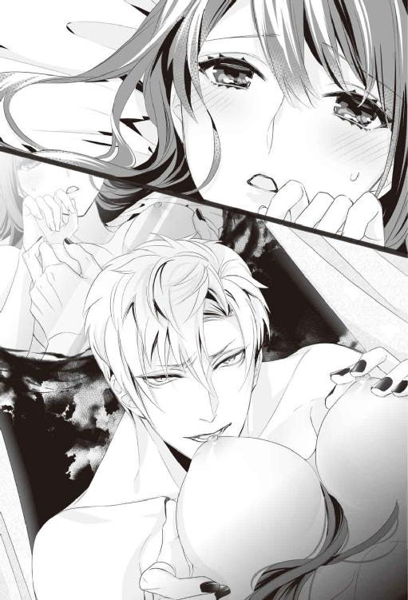
「あぁぁっ、赦して......ご主人様ぁ......」
言葉を口にすると、美月の中はぎゅっと収縮し、とろりと蜜が蕩けだした。さらに彼は、自らの目前で、美月のすんなりとした脚を大きく開かせる。
ぬちゃ。くぷっ。花びらを指先で開かれたとたん、蜜があふれだす。ヴァレリーの指が蜜にまみれたところを刺激しはじると、美月は腰を揺らし、その淫靡な刺激を悦んで受け入れてしまう。
「......ほら、どれだけ濡れているか、自分の目で見てみろ」
大きく体を開かれ、敏感なところを弄られている美月の姿が、鏡のように空中に映し出されている。花弁は厚みを増し、艶めいている。ヴァレリーの長い指がそこを焦らすように滑り、クイっと引っ張り上げると、中から深い紅色をした芽が顔を表す。敏感な部分が空気に触れて肌が総毛立つ。理性はすでに溶け落ちている。
「......ここを弄って欲しいんだろ？」
「ああっ......だめっ......」
「ダメなのか？ こんなにぷくりと膨れて触って欲しそうだが？」
ぬち、ぬちと淫らな潤みが立てる蜜音を聞きながら、普段なら明確に見えるはずのないいやらしい光景をまざまざと見せつけられて、美月はピクンと体を跳ねさせる。羞恥心と一緒にそれ以外の妖しい感情が胸に火を灯す。
（自分の体なのに......恥ずかしい。......ヤダ。こんなの......）
見たくないのに、見えたその姿に体中の感度が上がってしまう。乱れていく体を押さえ込まれて、ヴァレリーの手の中で開かれた花びらの奥の花芯に、彼の舌が踊る。
「あああっ......ぁ、ダメ......そこ、ダメなのっ」
普段暴かれることのない秘密の場所を大きく開かれて、充血して真っ赤に膨れる芽をヴァレリーの淫らに動く舌が蹂躙している。それをつぶさに映像として見せつけられて、美月は懇願するように啼く。ヴァレリーはそんな美月の小さな花びらに唇を寄せて、じゅると音を立てて吸った。にやりと楽しそうに笑うヴァレリーの口元まで見えてしまって、美月はその光景と淫らな水音に、びくびくと体が跳ね上がる。
「ああっ......ご主人......様、赦して。......お願い、そんなに苛めないで......」
言っている言葉とは真逆に、彼の銀色の短い髪に指先を絡ませ、抱え込むようにして、美月は奥深くまで淫らな舌を受け入れようとしている。魔導で理性を抑え込まれ、体の感覚だけが鋭く研ぎ澄まされていくと、淫らな自分の姿を見せつけられるたび『ご主人様』と呼ばされるたびに、くずくずに美月の理性は壊れていく。
気づけば、もっと快楽を欲して腰を浮かし、自分からヴァレリーの唇に感じやすい部分を擦りつけていた。
「いやらしくていい子だ。そんなにイイのか？」
「......ぁあっ......ご主人様の舌、キモチイイの......」
今回の儀式の当初、必死に自分をのめり込ませようとしていた美月は、気づけばヴァレリーのペースでそんなことを意識する余裕すらなくなっていた。乱れる姿を魔導で見せつけられることも『ご主人様』と呼びかけさせられることも、徐々に羞恥心より快楽が上回るようになっている。
「大分、良い声で啼くようになってきたな。そろそろ中まで刺激が欲しくなってきたんじゃないのか？」
「ああっ......あ......ご主人様......っと奥まで......気持ち良くしてっ......」
蜜口をれろれろと舐められて、細めた舌で中を穿たれる。だけど奥まで届かなくて、美月は身悶えする。奥まで刺激が欲しくておかしくなりそうなほど体が熱をもっている。ゾクゾクとする淫らな感覚が止まらない。気づけば快楽を素直に懇願するようになっている。
「......じゃあお前にも、少し頑張ってもらおうか」
体勢を入れ替えると、美月の手を握りしめ、ヴァレリーは自らのいきりたつモノを、彼女の柔らかい手のひらで包み、擦りたてるようにした。
「あっ......だめ、そんなっ」
「ご主人様の好みをしっかりその白魚のような手に覚え込ませてやる。あとでコレでたっぷりお前を苛めてやるから、先にお前にはしっかり奉仕の仕方を覚えてもらおうか」
熱の塊を握らされて、戸惑う美月はダメと囁きながらも、手の中で脈を打つ熱く硬いモノが、自分の中をみっちりと押し広げていく瞬間を想像し、淫らな蜜を溢れさせていたのだった。
「いい子だ。さあ、こっちに来い」
慣れない手淫に必死になっていた美月を、むこうを向かせて背中から抱き寄せ、ヴァレリーは自分にまたがらせた。片手は腰を抱き、もう片方は蕩けている美月の秘所を大きく開き、耳元で淫らなことを言わせるために囁く。
「で？ 美月。なんてお願いするんだ？」
意地悪で、どこか甘い囁きが耳朶を嬲る。カリっと小さく嚙まれて甘美な痛みを与えられると、美月はぼぅっとして何も考えられなくなる。
「......ご主人様のモノを、私の中に......ください」
気づけばそう喘ぎまじりに懇願していた。もう他のことは何も考えられない。快楽だけを求めたくなっている。耳元に喉の奥で笑うヴァレリーの声が聞こえる。
「本当に美月は素直でいい子だ......だからお前は教育しがいがある、と言っただろ？ ほら前を見てみろ。お前の中に、俺のモノが挿いるところが良く見える」
美月は愉悦に薄らぎかけた意識を、鏡のように映し出された目の前の光景に集中する。その瞬間。
「ぁ......やぁっ......」
ヴァレリーの手で大きく開かれた秘所に、先ほど自分が張り詰めるほど、大きくさせたモノがあてがわれていた。
「そのまま自分で腰を降ろしたら、奥まで挿入るぞ？ さあ、上手に自分で挿れてみろ」
その言葉にゆっくりと押しこむようにして、美月は徐々に腰を下ろしていく。
たっぷりと蜜にまみれた美月のそこは、なんのためらいもなく、悦んでそれを受け入れていった。
「ああっ......ぁは......挿入っちゃっ......」
目の前で男のモノを飲み込んで行く自らの姿を見せつけられて、美月は体を貫かれる感覚と、辱められる感覚に陶酔している。
「......オカシク......なっ......ひぁあっ」
──ずちゅっ。
ヴァレリーのモノを、じわじわと柔襞を押し開きながら受け入れていた美月のペースを、一気に狂わせるように腰を押さえ込まれ、グイと下から突き上げられて、美月は思わず歓喜の声を上げていた。
「好かったら素直にそう言えばいい。言えばもっと感じるようになる」
背中越しに感じやすい芽に手を伸ばされて、指先で転がされながら、白い胸を揺らし下から突き上げられる淫蕩な光景を、目の前の像で見せつけられて、美月は狂ったように声を上げてしまう。
「ああっ......ぁは......ご主人様のっ、キモチ......イイの......」
一突きされるたびに、すぅっと頭の先まで淫らな悦びが駆け抜ける。紅潮し張り詰めた乳房を形がひしゃげるほど摑まれ、はしたなく開かれた足の間から、蜜でぬらぬらと濡れそぼつヴァレリーのモノが抜き差しされる様子を、目の前でつぶさに見せつけられた。美月は視覚を通して脳まで、犯されているような気分になり、もう言葉は形にならず、ただひたすら啼き続けている。
「......ふぁ......ひぁ......ぁあっもっと......」
「やっぱりお前は俺と相性がいいな。欲望に素直な性格も、感じやすい体も、本当にお前は可愛くてたまらない。もっと好くしてやる。腰を上げろ、もっと深くまで突き刺して、気が狂うほど抱いてやる」
冷静だったはずのヴァレリーの声が、掠れて熱を帯びる。冷たく見えていたブルーグレイの瞳の奥が情欲に浮かされて、獣じみた呼吸音を唇から零す。ヴァレリーの乱れる様子にゾクゾクと快楽が押し寄せて、美月は釣り込まれるように淫らに腰を振り、さらに甘い声で啼き、ねだる。
「ご主人様......もっと......奥までくだっ......」
最後まで言う余裕もなく、美月はそのままベッドにうつぶせに押し倒されて、後ろから獣のように襲われた。硬い熱を奥まで一気に押し込まれて、呼吸が止まりそうになる。美月は涙を零し、淫靡な嬌声を上げ続ける。
「ひぁあぁああぁっ......ご主人様のがいっぱい......挿入っているの......ぁあっ......もっと......」
ただひたすら、美月は奥まで熱いものを受け入れたくてたまらなくて、強すぎる快楽の感覚に、とろとろに溶け崩れていく。膝が崩れるたびに、美月の臀部を握りしめるようにしたヴァレリーに、高く腰を抱え上げ直されて、さらに壊れるほど奥まで貫かれる。
「これだけ相性がいいんだ。......あいつではなく俺にしておけ......。俺ならお前を一生可愛がってやる、こんな風にしてな」
朦朧としている美月には、彼の言葉の本意は理解できていない。けれど切なげな彼の声音に胸がきゅんと締め付けられる。激しく楔を打ちこまれながら、耳元で嫉妬混じりに狂おしい睦言を囁かれ、何度も柔襞に反り返ったモノを突き立てられ、激しく擦りたてられた。ヴァレリーの情熱に取り込まれるように、美月の官能はますます高まっていく。
ぐちゅ、ぐちゅと、淫らな水音とぶつかり合う体の音を絶え間なく聞きながら、美月は言葉もなく啼き続け、徐々に大きな快楽の淵に追い込まれていく。
「あっご主人様っ......ああっ............はぁっ......イイのっ......ああああぁあぁっ」
何度も突き立てられ、追い詰められて、与えられる悦楽を、素直に貪り続けていくうちに、美月の意識は白く透き通っていく......。
「............」
美月はゆっくりと瞳を開いた。目を開けると目の前に見えるのは儀式の部屋の天井だ。温かいものを枕にしていることに気づいて、美月はゆるりと寝返りを打つ。そして美月が目を覚ますまで、ずっと柔らかく髪を梳いていてくれていた人に、声を掛けた。
「......私、どうしちゃったんですか？」
ふと頭の働きも体の感覚も、元に戻っていることに気づいた。先ほどみたいに妖しげな像が目の前に映ることもない。
「好くなりすぎて、失神してしまったようだな......少々刺激が強すぎたか」
くくっとヴァレリーは喉を震わせて笑うと、そっと美月を優しく抱き寄せた。
「あの......鍵は？」
今度こそ回ったのだろう。そう確信して美月が尋ねると、そっとヴァレリーは美月の額にキスをして、囁く。
「──残念ながら......回らなかったな」
「......え？」
予想外の言葉に美月は完全に言葉を失う。
「え、あの、回らなかったって私が、途中で気を失ったからですか？」
美月が咄嗟にそう尋ねると、ヴァレリーは切なげに目を細め、顔を左右に振った。
「いや。意識のあるなしにかかわらず、『鍵』が『錠前』を達せることができれば『鍵』は回るはずだ」
ヴァレリーは再びゆるゆると美月の長い黒髪を梳くと、その毛先にキスを落とす。
「せっかく理想の女に出会えたと思ったんだが、どうやら運命は俺を選ばなかったようだ......」
苦笑交じりに言われて、美月はぎゅっと唇を嚙みしめた。
「なんで......『鍵』が回らないの？」
ヴァレリーとは多分、彼が言うように体の相性がいいのだろう。今まで感じたことがないほどの快楽を与えてくれたのに、それでも『鍵』は回らない。王子もヴァレリーも回らないとなると、残された『鍵』は、司祭のエルだけだ。
（あの人だけは絶対にないって思っていたのに......）
おぞましい張形を自分に押し当てた、あの冷酷でどこか狂気を孕んだ表情を思い出して、美月は恐怖に身を震わせる。怯えに思わず涙が零れそうになって、美月は誤魔化すように慌てて寝返りを打つ。
「その......回してやれなくて......悪かったな......」
そんな美月の肩をそっと抱きながら、複雑そうにつぶやくヴァレリーの言葉に美月は小さく顔を左右に振った。絶対に今夜『鍵』を回したいと願った美月のために、ヴァレリーはいろいろと工夫をしてくれたのだ。
（ちゃんと『鍵』候補者の誰かを好きになれてない、可能性のある人達がこんなに大切に抱いてくれても、『鍵』を回してもらえない。時間がないのに、セイラの大事な人を救うこともできない......）
「なんで......私が『錠前』なんだろう......」
ふと美月の唇からこぼれた疑問をヴァレリーは塞ぐように優しくキスを一つ落とした。そっと頰に触れて、美月を勇気づけるように、瞳を覗き込んで答える。
「......お前を選んだのはこの図書館だ。そしてお前の『鍵』を選んだのもな。納得いかないなら、図書館へ苦情を言えばいい。慣れない環境でこれだけ頑張っているんだ。それだけの資格がお前にはある」
第九章陰謀と別離と、最後の『鍵』
美月がちゃんと立ち上がれるのを確認すると、ヴァレリーは着替えながら、美月に話しかけた。
「美月、あれから何か、問題は起きてないか？」
「あれから？」
「王都での事件のことだ。お前を攫おうとした魔導士が死んで、結局、事件の経緯はわからないままだろう？」
何か言いたそうにヴァレリーはそっと美月の頰を撫でる。
「あの時『鍵』候補が全員、あの場に集められていたのが、俺は気になっているんだ。あれは果たして本当にお前を攫うことが目的だったのか、『鍵』候補の誰かを害することが目的だったのか、それとも......」
「......？」
思わず美月が視線を上げると、ヴァレリーは美月のことを心配そうに見返す。
「一回目の目論見が失敗したことで、諦めていたら良いが──もし明日、何かあればすぐお前の騎士に助けを求めろ」
「......え？」
「......全員集められたということは、その中に犯人の関係者がいても疑われにくくなる......そう考えることもできるからな」
小さく肩を竦めて、ヴァレリーは不安そうな顔をする美月の目元を撫でる。
「まあ、あくまで可能性の問題だ。......とりあえず今夜はしっかり寝ろ。俺の方でも、もう少しいろいろ調べておくから、そんなに不安そうな顔をするな」
ヴァレリーはそう言うと、美月を安心させるように柔らかい笑みを浮かべ、最後に額に労わるようにキスをしてそっと部屋を出て行った。
「......『鍵』、どうして回らなかったんだろう」
一人残された儀式の部屋で、美月は不安に押しつぶされそうだった。異世界に突然連れてこられた、という不安感を『セイラの大事な人を取り戻してあげたい』という気持ちでなんとか支えていたのに。それすら成し遂げられていない自分が情けなくて、悔しい。
（正直、エルが『鍵』の可能性はないと思う）
その予感だけはぶれることなく美月の中にはっきりとある。だとしたら、図書館が美月を『錠前』に選んだこと自体が間違いのような気もしてくる。もし間違いだったら、ジェイを石化から救うのに間に合わないかもしれない。
その事実に打ちのめされた美月は手早く着替えを済ませ、儀式の部屋を出ていった。
＊＊＊
「......あっ......」
静かに図書館を出て、出来るだけ早く自分の部屋に帰りたいと思っていたのに、図書館を出た瞬間、美月は明るい月を見上げているその人の背中を見つけてしまう。気づけばその後ろ姿だけでも見つめていたくて、ほとんど無意識で足を止めてしまっていた。
（......イサック......）
凛と立つ大きな背中に切ないほど鼓動を高鳴らせ、見惚れてしまう。
緑の風が優しい夜の気配を纏い、美月とイサックの間を吹き抜けていく。
（だけど、もうイサックに頼っちゃダメだよね......）
つい先ほど、他の人に抱かれたばかりだ。そんな自分を見られたくない。美月は顔をかすかに左右に振り、踵を返して、その場から立ち去ろうとした、その時。
「──っ」
引き寄せられるように、イサックは美月の方へ振り向いていた。眉間に皺を深く刻み、美月のことを言葉もなく見つめている。その不機嫌そうなくせに、何故か苦しそうに見える表情を見上げた途端、美月の心は紫水晶の瞳で一杯になってしまう。
（............私、どうしたらいいの......）
イサックへと足を踏み出すこともできないのに、その場から逃げ出すこともできない。
（他の人に触れられた後の私なんて......見て欲しくないのに）
今まで頑張りすぎていた気持ちが折れて、心が酷く弱っていて不安で怖くて、どうしようもなく魂がイサックの存在を求めてしまう。その葛藤の狭間で、気づくと美月の瞳から大粒の涙が零れていた。
「美月っ......」
次の瞬間、離れていた距離はまるで関係無いと言うように、美月はイサックの腕の中にきつく抱きしめられていた。
「......イサック？」
「......だから泣くな、と言っただろう......」
耳元で切なげなイサックの低い声が聞こえ、美月は力強い彼の腕の中で、歓喜の感覚に酔っていた。ゆっくりと目を開くと、美月は涙に潤んだ瞳で、イサックの揺れる紫色の瞳を見上げる。
イサックは美月を見つめ、小さく苦笑を浮かべると、彼女がイサックの前で初めて泣いてしまった時のように、次々と浮く涙の雫を指先で払おうとした。
「......なんで？」
美月が濡れた瞳のまま尋ねると、イサックは再び困ったような顔で笑う。
「......お前に泣かれると弱い、と言っただろう？ ......慰めてやりたくて、我慢が出来なくなる」
「......なんで......こうやって、いつでも私を抱きしめてくれるの？」
（イサックは私のことを単に『錠前』だから守らないといけない、別の人が『錠前』ならその人を守るだけだって言っていたのに......）
こうして抱きしめられると、美月は彼の腕の温かさを信じたくなってしまう。
「............」
しかし美月の問いに、イサックは何も答えない。ただ、美月の涙をそっと指先で払い続けるだけだ。安心させるように、さらに深く抱き寄せられて、不安は一瞬で甘い安堵に飲み込まれていく。
「......なんで、私......」
（......いつでもこの腕の中にいたいって、そう思ってしまうんだろう）
その答えは既に美月にはわかっていた。ただ......言葉にすることができないだけだ。その答えを告げれば、きっとイサックが困るだろうと思うから......。
「......なんで......どうして、イサックなの？」
美月は涙で濡れた頰を、頼りがいのある温かい胸に寄せると、心が安らぐ香りが彼女を包み込んだ。イサックは美月の長い髪を梳り、ためらうようにその艶やかな髪に微かなキスの気配を落とした。
「......なんで......ばかりだな......」
イサックは喉の奥で苦く笑うと、彼女の艶やかな長い髪に指を絡めた。それだけで、美月の胸はズクンと切なく痛む。こんなに胸が痛くて苦しいのは、全部イサックのせいなのに。いや好きになってはいけない人を好きになってしまった自分がいけないのだけど。
「......だって、どうしたらいいのかわからないから......」
荒れ狂う感情のまま、美月はイサックの胸に震える声でそう告げていた。
「ねえ......なんで............イサックが私の『鍵』じゃないの？」
そう尋ねた瞬間、美月は呼吸ができないほど、強く、深くイサックに抱き締められていた。
「......それは......俺が聞きたい」
低く深い声が苦悩の音を忍ばせて、美月の耳元で聞こえる。逞しい腕が美月の腰をしなるほど強く抱き寄せ、ぴったりと二人の体が寄り添うと、美月は触れ合う部分から発火して溶けていきそうな気がした。
「......何故、俺がお前の『鍵』じゃないんだ？ 何故お前が他の男に抱かれるのを、俺は見届けなければいけない？ 何故俺はお前を『守る』ことしか許されない？」
イサックの声はけして大きな声ではなかったが、その言葉は美月の胸に鋭い破片のように深く突き刺さった。
「──美月」
切ない響きをもった深い声で名を呼びかけられて、美月の心臓は甘い鼓動を高めていく。
「俺はお前に触れたい。他の男に触れさせたくない。お前の身も心もすべて欲しい。自分だけのモノにしたい」
狂おしげに囁かれた言葉に、美月は大きく瞳を見開いて、目の前の男の気持ちを確認するようにじっと見上げた。視線があえばその紫色の瞳に吸い寄せられ、目が離せなくなってしまう。
「......なのに、何故お前が『錠前』なんだ？ 何故......俺はお前の『鍵』じゃない？」
イサックの声をかき消すように、闇色の風が一陣の嵐の如く吹き抜けて、森の木々をざわざわと揺らす。だがその言葉は、しっかりと美月の耳に届き、イサックの切ない想いを胸の奥深くに伝えていた。イサックのたくましい腕の中、愛おしげに抱き寄せられて、美月は息をすることすら忘れる。
──他の男達への、激しい嫉妬と、自分一人のモノにしたいという恋情と独占欲。
イサックの苦悩の響きを持つ声は、美月への想いを明確に語っていた。
「──っ」
（そんな風に思っちゃいけないのに......嬉しい）
激情のまま、気を失いそうなほど強くイサックに抱きしめられて、美月の胸は彼の言葉に張り裂けそうなほど高鳴っていた。頭の中が真っ白になるような強い幸福感を覚える。イサックの想いが自分のそれと深く寄り添っていることに、美月は先ほどとは違う、甘い歓喜の涙を零す。
「......ったく。だから泣くなと言っただろう？ お前に泣かれると、俺は自分の感情を抑え込めなくなる......」
どこか呆れたような、それでいて甘やかな調べを持つ声音を、小さく笑みを浮かべた唇に乗せると、イサックはそっと美月の悦びの涙をぬぐい、美月の頤を持ち上げる。
「......イサ......」
美月がその名を呼ぶ前に、想いを込めた優しいキスが降ってくる。イサックの瞳は見たこともないほど愛情豊かに細められ、穏やかな笑みの形に刻まれる。唇が触れる直前、微かに『お前が好きだ』というイサックの言葉が聞こえた気がした。
「......ぁっ」
互いの唇が触れるだけで気が狂いそうなほど、圧倒的な陶酔感を分け合う。クラクラと蕩けそうなほどの恍惚感と幸福な眩暈を感じ、美月はイサックに身を預け、触れ合う互いの存在に溺れていった。唇が触れ合うたび張り裂けそうに鼓動が高まり、美月は自分が誰を欲しているのかを思い知らされる。
どちらともなく二度三度と唇を重ね合わせると、もっと深く交わりたいと本能が囁く。さらに情熱的な口づけが深まろうとした、その瞬間。
「──そこまでにしていただけますか」
ガサリと草木を搔き分ける音がしたかと思うと、鋭い男の声がした。
その声に、そっとイサックは美月を腕から離し、自らの後ろにかばう。
「......誰だ？」
イサックの声に合わせるように、中庭に現れたのは、闇に溶けやすい色合いの魔導士のマントを被った男達だ。そしてさらに奥から一人、夜目に目立つ真っ白い衣装を纏った壮年の男がゆっくりと前に進み出てきた。
「......貴方は......シェラハン司教殿？」
「私共は教会から、イサック殿の意思を確かめに参りました」
イサックの問いに答えることなく、淡々とした感情のない声で司教は告げる。美月はエルラーン司祭から何度か聞いたことのある名と、その男の持つ声音にひどく嫌な予感を覚えていた。
「......俺の意思だと？」
「ええ。イサック殿が『騎士』の領分を超えて『錠前』に強い関心を持たれていると......」
白い衣装の男はゆらりとその存在感を増しながら、美月達の方に歩み寄って来る。シェラハン司教の言葉に、美月の心臓はドクンと嫌な鼓動を打った。
「確認に参りましたが......その必要はなかったようですね」
司教は小さく口角を上げ、淡々と言葉を紡ぐ。
「イサック殿に『騎士』の資格があるや否や、査問委員会で審議させていただきます。まずは、このまま教会までご同行願えますでしょうか？」
「......今からか？」
驚くイサックに、司教は慇懃な笑みを浮かべた。
「はい、今すぐ、でございます。魔導士を帯同しておりますので、このまま教会まで直接、空間を飛ばせていただきます」
冷酷で揺らがないシェラハンの言葉に、イサックは小さくため息をつく。
「わかった。ただしほんの数分、時間がもらえるだろうか？」
イサックの言葉に男が頷くのを見ると、イサックは美月の手を引いて、少し離れたところに移動した。
「......美月、すまない」
苦しげなイサックの声に、先ほどまでの恋の高揚感は淡雪のように一気に消え去り、美月は不安に胸が張り裂けそうだった。
「イサックは......連れていかれたらどうなってしまうの？」
美月の言葉にイサックは夜明け色の瞳を細め、頰を撫ぜて、安心させるように小さく笑みを浮かべた。
「......最悪でも『騎士』の地位をはく奪されるだけだ。不名誉だが、生き死にに関わるわけでもない」
わざと何でもないように言って、イサックは微かに唇に笑みを浮かべて見せる。だが、それは彼が美月の傍にいられなくなる、という意味を含んでいる。
「......俺のことはいい。それよりお前が心配だ。だからこれを、お前に預けておく」
そう言うと、イサックは腰から短剣を取り出して、美月の手のひらに乗せる。真っ白な鞘に金剛石と白金で飾り付けられた守護剣を確認すると、美月はイサックを見上げた。
「......これって......」
「ああ、これは俺が生まれた時に母から贈られた剣だ。俺の分身のような存在だから、俺にとって一番大事な者も守ってくれるはずだ。だからこれをお前に預ける。そして必ずお前の元にこの剣を取りに戻ってくる」
一度美月の手から剣を受け取ると、鞘から剣を引き出す。そっと刀身に唇を寄せて、誓うように口づけると、剣を再び鞘に戻し、美月に捧げるようにひざまずく。
「美月、俺はお前だけの『騎士』だ。それは俺が『図書館の騎士』であろうとなかろうと永遠に変わらない」
イサックは美月の瞳をじっと見つめると、美月の手を取り、手の甲にキスを落とす。
「......お前に神と精霊と......何より、図書館の加護があるように......」
それだけ告げると、イサックは美月のことを二度と振り返らずに、男達と一緒にその場を立ち去っていく。
「──イサック......」
美月はその背中を追いかけることもできずに、くたくたと膝を折って、その場に座り込んでしまった。一人きりになった美月の上には、イサックが先ほど美月を思って見つめていた月が輝いている。美月は月を見上げて、イサックの無事をひたすら祈っていた。
＊＊＊
「......美月？」
イサックが連れ去られてどのくらいの時間が経ったのだろうか。ふと掛けられた声に、美月は顔を上げた。
「......セイラ」
そこにはいつも通り闇色のドレスに身を包み、心配そうに緑の瞳を揺らし、美月を覗き込むセイラの姿があった。しかしその瞳は最初出会った時より焦燥感を募らせて、さらに苦しげに見えた。
「......イサック、連れていかれたのね」
「イサックは大丈夫なんですか？」
美月の言葉に、セイラは眉根を寄せて苦しそうな表情をする。そっと美月に手を伸ばし、立ち上がらせると、小さくため息をついて答えた。
「イサックは王族だしね。別に何かを罰せられることはないはずよ。ただ......もうここには二度と戻って来られないかもしれない」
「──っ......」
その言葉に美月は耐えていた感情が一気にあふれ出す。ぽろぽろと零れ落ちる涙に、セイラが美月を抱き寄せた。
「......ごめんなさい。私もジェイのことばっかりで、美月のことを考えている余裕が全然なかった......」
ゆるゆると美月の髪を撫でて、慰めるように囁くセイラに美月は縋りついて、ここに来て初めて、声を上げて泣いてしまっていた。
──しかしどんな涙も、いつかは涸れるものだ。
言葉もなく、ただ抱きしめてくれていたセイラの腕の中でさんざん泣き明かした後、美月は一つの決意を持って濡れた瞳を拭い、まっすぐセイラを見上げる。
「ねえ......セイラ。セイラは、ジェイを助けたいよね？」
「......もちろん、彼は私の命。ジェイがいるから私は生きていけるの。でも......」
セイラは美月の強い視線に負けるように、目を逸らす。美月はセイラの華やかな緑の瞳の下の、深い隈を見つめ、やせ細った指先を確認する。それからイサックから預かった守護剣をぎゅっと握りしめ、戦慄く息を必死になだめた。
（イサック、ごめんなさい。......でも私、やっぱりこの二人を見捨てられない。私がイサックのことを大切だと思うように、きっとセイラはジェイのことを大事に思っているから......だから）
「私、明日、エルに会います。『鍵』候補のうち、誰も『鍵』が回らないことはないんですよね。それに、図書館が『錠前』を選び間違えることも？」
美月の言葉に、セイラは美月の瞳を見つめ返して頷く。
「ええ。今まで一度も、図書館は『錠前』も『鍵』も選び間違えたことはないわ」
「......それなら、明日は絶対に『鍵』が回るっていうことですよね。だから......だから、あと一日だけ頑張ってもらえますか？」
美月の言葉にセイラは潤んだ瞳を大きく見開く。ゆっくりとその瞳が瞬くと、大粒の涙が零れた。
「......美月、本当にごめんなさい。私、自分のことばかりで......」
（これで、いいんだ......）
美月の前で涙を流すセイラを見て、美月はゆっくりと顔を左右に振ると、月を見上げた。明日の夜こそ『鍵』を回そう。私の恋は成就しなくても、せめて、セイラにジェイを返してあげたい。美月は一人、決意していた。
＊＊＊
「......二日ぶりですね」
眠れない夜を過ごし、翌日を迎えても、イサックが図書館に戻ることはなかった。そのかわり、美月は夜になると一人、儀式の部屋に行き、その夜訪れるはずの人を待っていた。
ノックと共に儀式の部屋に入ってきたのは、司祭のエルラーンだ。司祭の衣装をはおり、穏やかな笑顔で優雅に挨拶をする。その秀麗な姿を見ても、美月の心は氷のように冷めていた。
「今日は『鍵』回しの儀式ですね」
「はい。今夜『鍵』は回るはずだと思います。よろしくお願いします」
そう言って頭を下げる美月に、エルは不思議そうな顔をする。
「この間と雰囲気が違いますね」
エルはベッドに座っている美月の横に座り、そっとその顔を覗き込んだ。闇のように深い瞳が美月のことを冷静に見つめている。
「そう......でしょうか？」
「はい、でもその方が私も都合がいいです。今夜は私と貴女の儀式を邪魔する人もいませんし......」
その言葉に美月はギクリとして目の前の男を見返す。
「......もしかして、イサックを訴えたのは貴方だったんですか？」
美月の言葉に、エルは柔らかな笑みを浮かべただけで何も答えない。
「どちらにせよ、今夜必ず『鍵』は私が回しましょう」
エルは無表情なまま、ぞんざいに美月をベッドに押し倒す。その仕草一つだけで、エルには自分への想いが何一つないことに美月は気づいてしまう。王子もヴァレリーも美月に対して、一人の女性として大切にしたいという優しい思いがあったけれど、まったく愛情も無くエルに触れられ、美月はゾワリと本能的な恐怖がこみ上げる。
いつでも助けに来てくれると言っていたイサックがいないことが、さらに美月の恐怖を深めていた。
「......困りましたね。そんな緊張した顔をしていては、『鍵』は回りませんよ」
じっと顔を見つめられて、そのまま冷たく薄い唇が美月のそれに押し当てられる。
「んっ......」
美月はその瞬間、発作的にその胸を突いて距離を取ろうとしてしまった。だが、エルは美月の手首を痛いほど摑み、その身を剝がそうとはせずに、言葉だけは優しく囁く。
「受け入れてもらわなければ困ります。貴女にはどうやっても私を『鍵』として、認めてもらわないといけないのです......私個人、というより教会としては、ね」
「いやっ！」
淡々としたエルの態度に嫌悪感が襲う。咄嗟に美月は全力で彼を受け入れまいと、手足を振り回すようにして暴れた。
「──っぅ」
指が何かをひっかいた感触があって、咄嗟に美月は手を引く。ふと見上げるとエルの目の下が爪で切れて、血がにじんでいる。
「ご、ごめんなさいっ......私」
──だが、その時。
「だからその女には薬を使えと言ったのだ。薬の用意はできているのだろう？」
二人しかいないはずの部屋で、突然聞こえた他の人間の声に、美月は驚愕し声の主を探した。
「シェラハン司教様。何故......どうやってここに？」
その姿を見て、驚いた声を上げ、ベッドから降りたのははエルだ。美月も慌てて身を起こすと、目の前に突然現れた男を見上げる。
「......お前一人では心もとないと思ってな。お前の持ち物に、召喚のための術式を紛れ込ませた」
エルと同じ白い衣装に身を包んだ壮年の男がそう答える。よく見るとそれは昨日イサックを連れ去った男だということに、美月もようやく気づいた、
「まあ、あの厄介な『護衛』が二名ともいないからこそできる強硬手段だが。さて、エルラーン、お前を『鍵』にするためなら、教会は手段を問うつもりはないようだ」
「司教様、どういうことですか？ 放っておいても、私で『鍵』が回るはずじゃないんですか？ 何故こんな無茶をしてまで......」
「......さあな。お前で回ればいいが......それが確約できないからこその、この状況だ。この間は教会秘蔵の媚薬を渡したのに、お前ときたら途中で騎士に邪魔されて失敗する始末だしな」
突然現れた男に、呆然としている美月を見て、男は醜悪な表情で笑う。ねっとりとした男の視線を肌に感じ、慌てて自らの身を隠そうとしながらも、咄嗟に今ある情報の中で状況を判断しようとしていた。
（確約できないって......どういうこと......？）
『鍵』候補者は三人だけだ。アルフェ王子と、ヴァレリーの二人の候補者が否定されたのなら、残った『鍵』候補はエルラーン司祭、ただ一人のはずだ。セイラの話通りなら、最後の一人が『鍵』として確実に機能するはず。だったら、何のためにこの男は危険を冒してまで、儀式の部屋に忍び込んだというのだろう。
（セイラは『鍵』の相手には運命を感じた、と言っていた。でも私はエルに少しも運命を感じることができない......本当に、エルが私の『鍵』の人なの？ それに昨日のヴァレリーの言葉......）
今まで頭の中で漂っていただけの違和感が、急速に一つの結論を目指して、明確な形となっていく。
（......ヴァレリーは何て言ってた？）
城下町で襲撃された時、あの場に全員が集められたこと自体に違和感を覚えると......そう言ってなかったか？ エルはあの教会に『シェラハン司教に来るように言われた』と言っていなかったか？ そしてあの媚薬をエルに渡したのがこの男だったのなら......。
必死で考える美月を横に、エルは不服そうに司教に向かって言葉を返す。
「意味が分かりません。シェラハン司教様、何故、貴方自ら儀式の部屋に入り込むなどという、禁忌を犯すようなことを、しなければいけないのですか？」
「......今はお前の疑問に答えている暇はない。無駄口を叩くより前に、さっさと『鍵』を回すのだ」
エルに向かって、乱暴に言い捨てられた司教のセリフを聞いて、美月は形を作り始めた答えを確認するように、枕元に隠していたイサックの短剣に手を伸ばしていた。
「これ以上、私に近づかないで」
（このままこの男のペースで物事を進めたくない）
美月は本能的にそう思うと同時に、鞘から短剣を抜く。美月をなだめようと手を伸ばしかけていたエルはギラリと光る刃物に一瞬ひるんだような顔をした。
「ふふ。それはあの『騎士』殿の守護剣だな。こんなところまで持ってくるとは健気だが、結局『図書館の騎士』失格のあの男は、大事なところで『錠前』を助けには来られんのだ」
その言葉に美月は眉をひそめた。ゾワリという悪寒と共に上がってきたのは、今日のことはもちろん、先日のエルの媚薬を使った強引なやり方も、このタイミングでイサックまで捕らわれたことも、目の前の男が裏側で指示を出していたのではないか、という考えだった。いや、さっきは『厄介な『護衛』が二名ともいない』とまで言っていたのだ。
（......もしかしたらジェイが石化の魔法を掛けられた事件も......）
「みんな貴方が仕掛けたことなのね。ジェイのこともイサックのことも......」
世俗にまみれたような笑みを浮かべる司教を、美月は剣を握りしめたまま、睨み付けた。
「......なかなか強情な『錠前』殿だな。これではエルラーンでは手を焼くだろう。一度きっちりと教会式に躾けてやらないとな」
司教は美月の言葉を何でもないように受け流す。だが美月は否定しないその様子を見て、自分の予想は大方当たっている、と確信していた。
教会も司教の味方なら、エルもその陰謀に関わっているのかもしれない。だとすれば彼に『錠前』を開けてもらっては困る。ただ、誰も助けに来ないこの部屋で、男性二人に対して自分はたった一人だ。
（ど、どうしよう......でも、エルを絶対に受け入れたくない）
セイラとジェイが、イサックがずっと大事に守ってきた図書館の書庫だ。こんな男達にその秘密を自由にはされたくない。咄嗟に美月は、震える手で剣を自らの首元に押し当てる。こんなことをしてどうなるわけでもないのかもしれない。でも、何もせずに思い通りになんて絶対なりたくない。
（イサック、私を守って......私が最後まで戦えるように）
「これ以上近づいてきたら、私、この剣で自分の喉を突きます。私が死んでしまったら、貴方達の目的も水泡に帰すのでしょ？ それに私が死んだら、『錠前』から『騎士』を奪ったことの責任も教会が負わないといけなくなるはず」
歯を食いしばり、冷たい刃物の切っ先に恐怖を感じながらも、視線はまっすぐに、司教をねめつける。しかし司教は、再び不敵な笑みを浮かべた。
「いろいろ考えたようだが......そんなことをしても時間稼ぎにすらならない。ほら、刃先が震えている。まったく愚かなことだ」
そういうと、右手を高く持ち上げ、指を鳴らした。
「やめてっ！ 何するの」
次の瞬間、美月は突如ベッドサイドに現れた三人の男達に手足を押さえられ、ベッドに押し倒されていた。持っていた剣は男達に取り上げられ、ベッドから床に投げ出される。
「──砂漠の民ですか......そんな者達まで使って、随分と乱暴なことをされるのですね......」
呆然としたようなエルの言葉が聞こえる。しかし積極的に男達の狼藉を止める様子も感じられない。一方で、美月はひたすら男達の手を逃れようと暴れまわっていた。
「いやっ......イサック、助けて！」
必死で上げた美月の声に、司教はあざけるような笑みを浮かべた。それからエルの方を見て、頷きかける。
「こういう気の強い女は薬ではダメだな。気が狂うまで犯されて意思の力を失った後、最後にお前が好きなように抱いたらいい。壊れた『錠前』なぞ、こじ開ければいいだけだ。さあお前ら、好きなだけこの女を弄べ。アルフェ王子殿下に、公爵御令息のイサック殿と、王族が競って抱きたがるだけあって、なかなか上物らしいぞ」
暴れ続けていた美月をついに抑え込んだ男達は、司教の煽り言葉を聞くと、美月の薄物を切り裂き、美月の体を開くと、一斉に胸に、足にしゃぶりつき始めた。
「いやああぁぁぁぁぁぁぁっ......助けて、イサック！」
美月の悲鳴が響く中、男達の美月の心を壊すための暴行が、すでに始まっていた。
＊＊＊
「イサック様、少々お待ちください。ただいま準備いたしますので......」
突如、捕らわれの身となった王族に対して、教会の守衛の者も対応に迷っているようだった。目の前の男達に罪はない、と食後のお茶を用意している男に対しては苛立ちを隠し、イサックは鷹揚に頷いた。
昨日の夜、教会に連れてこられて以来、未だに正式な査問委員会は設けられておらず、イサックは教会本部の一室に用意された部屋で軟禁されている状態だ。
彼の生家である、公爵家からの申し出に対して、国の司法機関を担っている教会は強かに対応しているということも、イサックの苛立ちをさらに煽っていた。
（まるで時間稼ぎをしているようだな......）
なんでそんなことをするのか、と考えて思いつくのは『鍵』回しの儀式のことだ。今夜どんな形であれ、あの司祭が『鍵』と認められれば、その事実は覆せなくなる。美月は正式に『錠前』に、相手の男は『鍵』となるのだ。美月の気持ちを最も大事にしてない男が彼女の『鍵』になる......。イサックは他の二人の候補者に感じた、チリチリとするような羨望交じりの嫉妬とはまったく違う、胸に迫るような危機感を感じていた。
（しかし本当にあの男、図書館が選んだ『鍵』だというのか？）
イサックはずっと抱いていた違和感を改めて確認していた。
そもそも今回の『鍵』選びには元々、予定外のことが多すぎた。
『鍵』のアクシデント。突如、異世界から連れてこられた新しい『錠前』、そして美月は自分の運命を感じる『鍵』を未だ見つけられないでいる。
ジェイが動けない中、残っていた唯一の『騎士』である自分もこうして捕らわれの身となり、美月を守る者は図書館に誰も残されていない。ミーシャも『鍵』選びの儀式には基本的に関わりは持たない。この異常さに気づいてないセイラは、ジェイの元から動かないだろう。
──諮られたように美月は孤立無援なのだ。
（......今どうしているのだろうか）
夜毎、図書館の周辺で、『鍵』選びの儀式を見守っていることしかできなかった時は、そのことが身を切るより苦しかった。だが、こうして離れたところで、ただその身を案じる方がよほど辛いことをイサックは改めて思い知らされていた。
図書館内であれば、美月の声も聞こえ、即座にその元へも、文字通り飛んで行くことが可能だが、ここでは様子を伺い知ることすらできない。図書館の騎士にのみ与えられたその能力は、図書館外では一切役に立たない上に、その能力すらイサックが『騎士』として不適格と図書館が判断すれば、既に取り上げられているだろう。
（あの時、自分の気持ちさえ抑えられていれば......）
美月と心が寄り添った一瞬について、そう考えなくもなかったが、この状況を見れば、シェラハン司教はどうあっても昨日の夜、イサックの身柄を確保するつもりでいたのだろうとも思う。ジリジリとする焦燥感の中で、何とかしなければと、イサックは苛立ちを堪えている。
格子の入った窓から外を見上げると、ようやく昇り始めた月がイサックをかすかに照らしていた。そろそろ儀式が始まる頃合いだろうか。格子越しの月が、美月が自分の手の届かないところにいることを象徴しているように思え、彼は眉をひそめた。
「......美月......」
案じている人の名が、その唇から零れ落ちた時。
（イサック......私を守って......）
ふと頭に響く声に、イサックは一瞬辺りを見渡してしまう。
（......気のせいか。図書館の中でもあるまいし、こんなところで美月の声が聞こえるはずもない）
そう思いながらも、胸の中の不安感がざわざわと形を成していく。じわりと首筋に冷たい感触を感じ、日常で癖になっているように、無意識に腰の小さな剣に指を伸ばす。
（......そうか、守護剣は美月に渡したのだったな）
そう思った瞬間、イサックはゾクリと背筋が総毛立つ感じを覚える。理由はよくわからない。ただ、剣が自分に何かを伝えようとしているように思えて仕方なかった。
「イサック様、お茶が用意できました」
その声にハッとしてイサックは窓の傍からソファーに戻った。淹れられた茶を飲もうとカップに手を掛けると、給仕の男が一瞬妙な緊張感を帯びた顔をした気がした。
「......茶に、薬でも盛ったか？」
もしも自分を足止めするのなら、より完璧にするために眠らせるだろう。無意識で言葉が滑り出ていた。だがその言葉を聞いた瞬間、男はひっと喉を鳴らして視線を泳がせる。
（イサック、助けて！）
その瞬間、脳内で声が響く。二度目の美月の声は先ほどよりもっと鮮明で切羽詰まっているように思えた。
（なんで美月の声が聞こえるんだ？）
だが何らかの陰謀が今回のことに隠されているならば、美月の身も危ういかもしれない。何故美月の声が聞こえるのかという疑問より、焦燥感の方が上回った。イサックは咄嗟に茶菓子用に置かれていたフォークを手に取り、茶の用意をした男の首元に押し付ける。
「......方法はなんでもいい。俺を部屋の外に出せ。......ちなみに、どんな理由があったにせよ、王族に薬を盛ったとなれば、お前もお前の一族も無事では済まないぞ？ 大人しく協力すれば不問に付してやる」
耳元で囁くと、男は怯えた様子でコクリと頷く。そのまま男を抱きかかえるようにして部屋の出入り口に向かうと、男は大きくため息をついてから、扉の外に声を掛けた。
「......イサック殿は睡眠薬で眠られました。ここを開けてください」
その声にドアが開く。咄嗟に給仕の男を、出入り口を守っていた男達に投げつけ、次の瞬間、動きを止めた守衛の男の腰から剣を引き抜いた。突然のことに他の守衛達も一拍動きが遅れた。その隙に剣の柄を立て続けに男達の腹部に叩き込み、気を失わせると、そのままイサックは外を目指して走り出していた。
「逃げたぞ！」
しかしその抜け出す姿を見られていたらしい。即座に追手の声が掛かり、イサックは追手を躱すため、手ごろな部屋の中に飛び込む。
（勢いで飛び出したまでは良かったが......）
外で騒がしくなる声にイサックは舌打ちをする。ここから何とか建物の外に出て、ターリィを呼んで......。そこまで考えたその時、脳内に切羽詰まった美月の悲鳴が響いた。
「──美月！」
咄嗟に呼びかけるものの、当然その応えはない。
（......今向かって、果たして間に合う......のか？）
胸を重たく狂わす焦りが極限まで高まったその瞬間、ふわりと暗い部屋に白いものが浮かんだ。
「──軟禁から逃げ出したまでは良かったけれど、移動方法までは用意できてなかったみたいだね。まあそういう無計画さがイサックのダメなところだって、ミーシャなら言うんだろうけど」
暗闇で突然響いた声に次いで、イサックは白く浮かぶ一見愛らしいその姿を捉えていた。
「サーシャ！」
イサックの耳元で、皮肉っぽくしゃべり始めたのは、白いふわふわの毛に赤い瞳の、アルフェの守り魔だった。
「アルフェ様が、イサックはこらえ性がないから、そろそろ限界が来て、監禁されているところから飛び出した挙げ句、その後の身の振り方に困っているはず。だから今回だけは美月のために助けてやってくれって、ボクに言うんだよね」
肩を竦めてわざとらしいため息をつくと、サーシャは言葉を続ける。
「......まあ確かに。今回はこっち側の確認ミスもあったみたいだし、アルフェ様のお願いだから、誓約なしに助けてあげてもいいよ。で。どうする？ 今すぐ、図書館に飛ばしてあげようか？」
その言葉にイサックは即答していた。
「頼む！ 正直助かった。アルフェには改めて礼をする」
「仕方ないな。ただボク、人を閉じた空間の中で飛ばすの、あんまり得意じゃないからね。最悪、時の狭間で彷徨うことも......」
「今すぐ飛ばせ！」
その小さな体を摑もうとすると、代わりに自らイサックの頭の上に座り込む。
「......もう荒っぽいなあ。じゃあ、気を確かにね。できれば飛ぶ先に自分と関係の深い物の、明確な像を描いてもらえると助かるな」
その言葉にイサックは自らの分身のように思っている剣と、一番守りたいと思っている女の姿を思い浮かべた。
「ああ、いつでもいいぞ」
「じゃあ......飛ぶよ？」
閉ざされた空間から外に飛び出す時は、いつも微かな吐き気と眩暈がする。だが今日は焦りでそんなものを感じている余裕はなかった。ただ数秒の『飛ぶ』時間ですら、イサックには何時間にも感じられた。イサックは視線をまっすぐ前に向けて、図書館に飛び込んだらすぐ動けるように身構えている。
「あ。アルフェ様からの伝言。『ちゃんと『鍵』として機能してよ。美月が望んでいるのはお前なんだから』だってさ」
イサックは躊躇うことなく、一昨日の夜にアルフェに返した言葉を覆す返答をしていた。
「ああ。もうあいつが誰かに触れられているのを見ているのも限界だ。これ以上泣かせるのもな。ならば俺自身が絶対に『鍵』になってやる」
言い返した途端、周りが一気に明るくなる。前もって目を細めていたイサックは、眩しさの中ゆっくりと目を開けた。
──刹那。
「いやあああああああっ。やだっ。助けて、イサックっ！」
「......美月っ」
目を完全に開くより先に美月の悲鳴が聞こえ、飛び込んできた光景に、イサックは絶句する。
（──一体、何が起きているんだ？）
儀式の部屋に『鍵』以外の男がいる。それだけでも異常なのに、美月をベッドに押し倒し、その体を無理やりに開き、襲っているのは『鍵』ではなく三人の砂漠の民だ。
一歩踏み込もうと思った瞬間に、ベッド下に自らが与えた守護剣が、抜き身で落ちていることに気づいた。
（美月がこれで身を守ろうとしたのか？）
状況を確認した途端、全身の血液が一気に沸騰するような感覚に襲われる。イサックはほぼ無意識で、美月が狼藉を働かれているベッドサイドに移動していた。次の瞬間、ベッドで美月の足を高く抱え上げて、いきり立つ穢れたモノを、美月の中に押し込もうとしていた男の横面を全力で張り倒していた。
「──お前は！」
「何をしやがる！」
美月に覆いかぶさり、夢中になって貪りついていた男達が、はっと顔を上げる。イサックは憤怒に導かれるまま、その頰を、剣の柄で立て続けに打っていた。もんどりうつ男達の間から、イサックは美月をシーツごと抱き上げようとすると、怯えきっていた美月はそのイサックの腕にすら、抗おうと暴れた。
「やだっ、触らないで！」
「......美月......俺だ」
「──誰？」
美月は自分の名を呼ぶ深くて優しい声に、はっと視線を上げた。
紫水晶のような優しい光を宿す瞳と視線が交わると、涙に濡れた瞳で、誰が自分を抱き上げているか確認し、震える声で訊ねた。
「......イサック、本物だよね？」
恐怖で震える指先をそっとイサックに伸ばすと、存在を確認するように、彼のうなじに手を伸ばし、美月は顔を寄せて愛おしい人の胸に顔を埋めた。深い森のような心地よいイサックの肌の香りを捕らえて、ようやく美月は緊張を解く。
「来て......くれたんだ」
「ああ、お前が俺を呼んだからな。来るのが遅くなって悪かった。だが、もうこれ以上......」
イサックが美月の耳元に何かを囁こうとしたその時。
「イサック殿、これはどういうことかな？」
自分の呼び込んだ男達が一瞬で気を失っていることに気づいた司教が、不機嫌そうに声を上げる。
「査問委員会の許可なく離脱されたのなら、相応の罰を受けていただくことになるが──」
「聞きたいのはこっちだ。神聖な『鍵』回しの儀式を、こんな風に汚した責任は、貴殿にあるのか、それとも教会の指示か？」
イサックは鋭い視線を飛ばし、シェラハン司教を睨み付けながら尋ね返す。
「図書館の許可なく、関係のない人間が儀式の部屋に入ったのであれば、死罪に値する禁忌を侵した事になる。その覚悟は当然あるのだろうな」
イサックの言葉に司教は口を噤んでいる。
「......すべてはシェラハン司教様の独断専行です。教会本部は、このような不正に関わっておりません。私自身も何も知らされてなく......関わり合いがありません」
悄然としつつも、そう呟くエルに、即座に司教は言い返した。
「エルラーン、お前は黙っていろ。ことが成し遂げられれば、教会も私の味方になる」
「だが、俺がここに来た時点で、お前の企みは潰えたのではないか？」
「......さて、それはどうかな。まあ我々としては、エルラーンで『鍵』さえ回れば何の支障はない。イサック殿は不名誉な査問委員会を嫌って、どこかに出奔した、というシナリオも用意することは可能だしな」
どこか嘲笑するような響きを持つ司教の言葉に、美月はゾクリとした。
「それに、三人の砂漠の民をここに連れ込むことができるということは、あと十人だろうが、二十人だろうが同じようにできると思わないか？ そしてこのことを知っているのは、ここにいる人間のみ......」
口封じは簡単だ、というように司教はニヤリと笑い、指先を鳴らすと同時に、男達の黒い影がいくつも薄暗い室内に浮き上がってくる。その様子に、美月は先ほどの恐怖が戻ってきた。がくがくと震える手でイサックに抱きつくと、もう離されまいとしがみつく。
そんな美月を安心させるように抱き寄せて、イサックは『その力』が使えることを確信しながら、手のひらを広げ、ゆっくりと床に伏せた。
その瞬間、現れた男達は一斉に地に這いつくばり、微動だにすることができなくなる。
「......っな......ぜ、資格は、もうないはず......」
「──それはね、あんた達がイサックを『騎士』として不適格と判断したとしても、図書館はそう判断してなかったから。イサックは騎士としての能力を取り上げられてなかったからだよ。そもそも図書館の意思を、教会がどうこうできるわけないじゃん」
次の瞬間、部屋に姿を現したのは、真っ白いウサギの耳を持った、真っ赤な瞳の図書館の使い魔だった。
「オレは単なる守り魔だし、『鍵』回しの儀式には介入しない立場だけど、今回のは流石にやりすぎ。サーシャから連絡あったし、時空を歪めて、イサックをここに放り込んだことぐらいは、気づかないフリするつもりだったけどね。だって『騎士』がいない『鍵』回しなんて、ミツキにとって全然フェアじゃないからさ。あと、『十人でも二十人でも同じようにできると思わないか？』ってオレのこと、馬鹿にしてない？ 寝てたって流石にそれは気づくよ。騎士が対応できなければオレが全員、排除する。ただし生死には一切配慮しないけどね」
文句を言いながら、騎士の能力で床に押し付けられた男達を数えて、ミーシャは呆れたように声を上げた。
「......でもって、美月。この状況どうしてくれんの？ もう一度エルで『鍵』回し、やり直す？」
美月はミーシャのセリフを聞いた途端、恐怖に心臓が跳ね上がった。じっと床に座り込んだままのエルを見て、美月は再びぎゅっとイサックの胸に顔を寄せる。
（私の『鍵』は、その人じゃ......ない）
「......ねえ。ミーシャ。......私が運命を感じた人が、本当の『鍵』なんだよね？」
美月の言葉にミーシャは小さく笑って頷く。美月は大きく深呼吸をした。
「私......。私が、運命を感じているのは......ずっと、イサック一人だけだったの」
気づけばそう言葉を紡いでいた。そう、最初からそうだったのだ。
小さな笑みを初めて見せてくれた時も、転びかけて抱き留めてくれた時も、たとえ不機嫌な顔をしていても、どんな時も美月の心を揺らす特別な存在だったのは......。
連れてこられた異世界で、一人で自分の『鍵』を探す儀式の間も、ずっと美月を見守り続けてくれたのは、そしてダメだと思っていても、どうしようもなく惹かれてしまったのはイサックだった。美月は手を伸ばし、自らを抱き上げている人のうなじに手を回すと、きつく抱きしめる。イサックは柔らかい笑みを浮かべて、その手を受け入れてくれた。
「ミツキ、イサックは『鍵』候補じゃないよ。わかっている？」
ミーシャは空中を飛んで、美月の傍に来ると、首をかしげて顔を覗き込んだ。
「......それでも。私は、私の運命を感じる力を信じます」
美月は一瞬目を閉じて、それから祈るようにそっと、イサックの頰に指先を伸ばし、愛しげに包み込む。
「......だからお願い。イサック......私の『錠前』を開けて」
美月の真剣な瞳に、イサックはどこか照れ隠しをするように、小さく笑みを浮かべる。
「......お前。自分の言っている言葉の意味、わかっているのか？」
いつも通りどこか意地悪な声と、柔らかい笑み。そのうえ、耳元で美月にだけ聞こえるように、からかい交じりに甘く囁く。
「......それは俺に『私を抱いて』と懇願しているのと同じ意味だぞ？」
「............っ！」
真っ赤になったまま、それでも自ら体を離そうとしない美月を見て、イサックは楽しそうに笑う。
「ああ、わかった。俺も、もう二度と自分を誤魔化さない。俺はずっとお前が欲しかったし、俺だけのモノにしたかった。お前が『錠前』だからじゃなくて、お前が好きで、大事だから守ってやりたくて、ここに来たんだ」
イサックは開き直ったように大きく破顔する。美月はその強くて優しい笑顔に魅了されていた。
「──運命がなんだ、『鍵』候補がなんだ。お前の『錠前』は、俺が開けてやる。美月、お前が望むならな」
イサックの言葉がじわりと美月の胸の奥に染み込む。幸せな甘い歓喜が美月の全身にこみ上げて、悦びの熱を急速に上げていく。
「......あの、はい、オネガイシマス......」
照れながらそう告げると、
「オネガイシマスって......お前......まあいい、俺を煽った後どうなるか思い知らせてやる」
イサックは喉を震わせて笑った。
「......てかオレのこと、二人とも完全無視してるけど、イサック、ダメだよ。『騎士』は『騎士』。『鍵』候補じゃないんだから。まあどうしても、っていうならダメ元で試してみたらいいんじゃないかな。オレは知らないけどね」
口ではそう言いながらも、ミーシャのルビー色の瞳もまた笑みを含んでキラキラと輝く。
「どちらにせよ『錠前』が開いたら、その男が『鍵』ってことだろう？ じゃあ美月、今から試しに行くか。今からお前の『錠前』を開けてやる」
「......え？ あの......イサック？」
それって......。会話の意味を考えたら恥ずかしすぎる。だけどそう言ってくれるイサックの言葉が嬉しくて、こんな風に屈託なく彼と微笑みあえることが幸せで、美月はじんわりと頰を染めながらも、安心できる彼の腕の中で、気づけばつい、くすくすと笑みを零していた。
そんな美月を見て、イサックもまた瞳を柔らかく細め、笑みを浮かべたまま美月の頰に小さくキスをすると、もう一度美月をしっかりと抱え上げた。
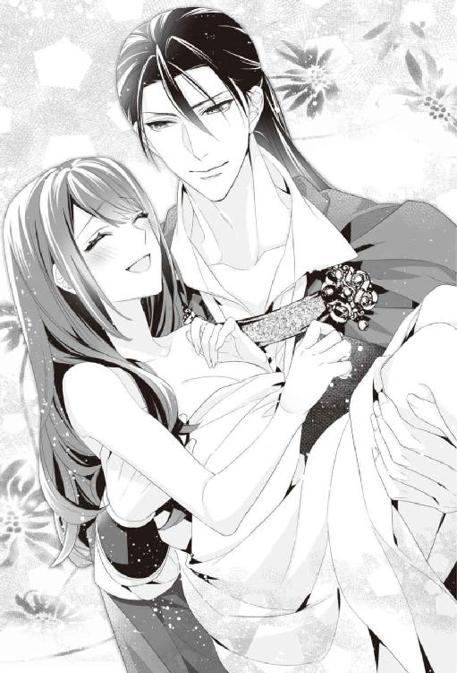
「......そういうことで、後の始末はお前に任せたからな」
ミーシャにそう言うと、イサックはシーツにくるまれた彼女を抱きかかえ、部屋を出ていく。
「──まったく。馬鹿のおかげで予定が狂った......」
だが、拘束もされず、その場に座り込んでいたエルから零れた小さな呟きは、最後まで部屋の誰にも聞き取られることはなかったのだった。
第十章運命が私の『錠前』を開ける時
求めよ、さらば与えられん
尋ねよ、さらば見出さん
叩けよ、さらば開かれん
（『新約聖書』マタイによる福音書より）
＊＊＊
「......ここ、図書館の本館？」
美月を抱きあげたイサックが彼女を連れてきたのは、図書館の本館のホールだった。初めて来た時と同様に、緑と古い本の匂いがして、美月はその香りに安堵の吐息を漏らす。
「ああ。儀式の部屋でなくとも『鍵』を回すことは可能なのだ。ただし、この図書館棟の建物内でしか『鍵』は回らないからな」
イサックが笑うだけで、美月は不安なことがこの世から何もなくなるような気がした。
「だが、ここの鍵は掛けておけよ。これ以上邪魔されたくない」
「......どうやって？」
「お前が掛けたいと願えば、この図書館の鍵は掛かる。図書館がお前を認めているんだからな」
イサックの言葉に美月は半分疑いながらも、心の中で『図書館の鍵、閉まって』と告げると。
──カチャリ。
その瞬間、図書館の鍵は中から閉まった。イサックは少し驚いた様子の美月に笑いかける。
「ほらな、お前はこの図書館に選ばれて、ここにいるんだ」
くくっと笑うと、イサックは美月を抱き上げたまま、第一書庫の扉を開けた。それから美月を書庫内にあるゆったりとした大きなソファーの上に降ろす。美月は今から起こることを一瞬、想像しかけて、一気に頰が熱くなる。
「......あの？」
ドキドキする鼓動を感じながら、イサックの顔を見上げると、イサックはからかうように笑みを浮かべる。
「......広々とした本館のホールよりは、書庫の方が落ち着くんじゃないかと思ったんだが、広い方がよかったか？」
美月が座るソファーの背もたれに手を載せて、美月の顔を覗き込む。
「......い、いえ。こっちの方が、イイデス......」
（顔が......近いっ。今のイサック、別人みたいで......なんかドキドキする）
冷静にふるまっていたイサックが、恋愛の熱っぽさを抑えること無く、自由にふるまい始めると、その言葉や仕草一つ一つが、美月にはたまらなく色っぽく感じてしまう。愛おしげに目を細めながらも、美月を捕らえるように遠慮なく距離を詰めてくるイサックの一挙手一投足に、美月は思わず鼓動を甘く高鳴らせていた。
イサックは紫水晶のような瞳に頰を染めた美月だけを映し、微かな笑みを浮かべると、優しくキスを落とす。
「......んっ......ぁっ......ぁあ......」
優しい口づけは二度三度と触れるたびに、美月を捉えるような、深く激しいものに変化していった。美月は触れた唇の熱さに甘い吐息を漏らす。口づけの間も、大きな手に優しく髪を撫でてもらって、安堵と幸福感に、体中から張り詰めていた緊張が徐々にほどけていく。
先ほどまでの狼藉のショックで残っていた、不安の欠片のような動揺も、ゆるゆると溶けていくように思えた。
「......少しは落ち着いたか？」
ついさっきまで震えていた美月の指先を、イサックは優しく強い手で包む。美月はその言葉に小さく頷いた。
「助けてやるのが遅くなって悪かった。さぞかし怖くて嫌な思いをしたことだろう......本当にすまない」
改めて美月を労わる言葉を掛けたイサックは、襲われた美月より、もっと苦しげで心配そうな顔をしている。
「......怖かったけれど。イサックが絶対来てくれるって、最後まで信じていたから......」
目元に涙を浮かべ、美月が眉を下げてくすりと小さく笑うと、イサックは指先で雫を払う代わりに、眦に唇を寄せる。
「アルフェとサーシャに礼を言わなければならないな」
涙をキスで拭いながら、美月の髪に指を絡ませて、イサックは何度も額に頰にキスを落とした。
「まあ、個人的にはいろいろ納得がいかない部分もあるが......」
「......え？」
イサックの言葉に美月が小さく驚きの声を上げると、イサックは肩を竦め苦笑する。
「......俺が......」
イサックは、美月をソファーに柔らかく押し倒しながら、大事なものに触れるようにそっと頰を撫でる。深くて甘い、吐息交じりのイサックの声に、美月の血流はどんどん早まっていく。
「......どれだけお前の『鍵』候補達に、妬いていたか知っているか？」
独占欲を秘めた声音に、美月は熱を帯びた吐息を漏らしながらも、顔を左右に振る。
「まったく......。欲しいお前に手が伸ばせなくて、どれだけお前を想って、毎夜懊悩したか」
切なげに囁かれて、再び始まった口づけは、容赦がないほど長く深いもので、不慣れな美月はあっという間に翻弄されて、呼吸を乱していく。
「だから今夜は、お前の全てを手に入れないと納得できそうもない」
キスの合間に熱っぽく囁かれて、ゾクリと甘い歓喜が体を支配していく。
「んっ......ぁはっ......んんっ」
どれだけ長い間キスをしていたのか。全身の力が抜けるほど甘く口づけられて解放される。目の縁に涙を溜めながら、イサックを見上げると、彼は機嫌の良い猫のように喉を震わせて笑う。
「......本当にこういうことに慣れてないんだな......そうか。男はあまり得意でない、と言っていたな。......俺が怖いか？ お前には触れられない男だと安心させていたのに......な」
甘く口づけしておいて、ふと一歩身を引くような言葉を言う。イサックは本当に意地悪だと美月は思う。でも今夜のイサックは今までの彼とは違っていた。
「......だが俺は、今から誓いを破ろうと思っている。止めるなら今だぞ？」
誘惑するようにいたずらっぽく耳元で囁くと、美月の桜色の耳朶に小さくキスを落とす。
「──っ」
ひくんと体を震わせると、イサックはその体をぎゅっと抱き寄せた。
「お前は本当に可愛いな......」
嬉しそうに告げられた言葉に、美月は驚きと共に息を詰める。
「そんな言葉、イサックから初めて聞いた......」
「そうか。最初に会った瞬間からそう思っていた。だが俺のモノにしてはいけない存在と思っていたからな。できる限り距離を置かねばと自らを律していた」
「......私も好きになっちゃいけないって、ずっと思ってたの。なのに......」
そっと重ね合わせた指先が互いの言葉の代わりになる。
「『鍵』回るのかな......」
不安がる美月の言葉をイサックは濡れた唇で塞ぐ。
「回してやる。お前は俺だけ信じていたらいい」
伸ばされた大きな手が美月の胸の上に、そっと置かれた。
「誰に『鍵』を回して欲しいのか、お前はそれだけ考えておけ。あとは図書館が判断するだろう。俺は......お前の想いも、俺の想いも間違っていないと信じる」
イサックの指が柔らかく美月の肌をなぞっていく。目を閉じて、武骨だが優しい指先の感覚だけを感じるようにすると、愛しい人に触れられていることを実感して、切なくて幸せな悦びに体温が上がっていく。
「美月、お前が好きだ」
告白の言葉に美月は頰を染めながら、目の前の暁色の瞳を見つめ、微笑み返す。
「私も......イサックが好き」
素直に想いを唇に乗せると、幸せな感覚が体の奥底からうねるようにこみ上げてくる。気づけば美月をくるんでいたシーツはイサックに取り上げられ、隠す物のない素肌に幾つも唇が降ってきた。
「──っん」
チクリと感じる微かな痛みと共に、美月の胸元に小さな紅の花が咲く。イサックは自らの唇でつけた所有の証を満足げに撫でると、小さく笑った。
「......これでお前は俺のモノだ」
嫉妬交じりの囁きを聞くだけで、美月は今まで使ったどんな媚薬より、体が感じやすくなっていくように思う。
気づけばイサックの唇は、今までの鬱屈を晴らすかのように、美月の胸元にいくつも嫉妬の花を咲かせていた。美月は微かな痛みと共につけられる証に徐々に呼吸が乱れていく。
「......我ながらこんなに妬いていたとはな......」
呆れた声を上げながら、それでも満足げにイサックは美月の胸につけた痕に再び口づけをする。
「だがこうしてお前は少しづつ俺のモノになってくれるんだな......」
「......っぁ......あぁっ......」
武骨な手でやわやわと二つの膨らみを揉みしだかれると蕾はツンと硬く尖っていく。
「──あっ......っ」
次の瞬間、張り詰めた膨らみの頂きに、ねっとりとした彼の舌を感じて美月は体を跳ね上げていた。
ちゅ。くちゅっ。と淫らな音を立てて唇で吸われ、想い人に感じやすい部分を舌先で転がされて、美月は全身に甘い疼痛を感じ、微かに目を開く。
「......どうした？」
優しい花の色のように見えるイサックの瞳に覗き込まれて、美月は頰を染めた。
「......言ってみろ？」
「......イサックに触れられると、恥ずかしいのに、なんだか幸せな気持ちになるの」
美月が零してしまったセリフに、イサックはふっと小さく笑う。
「俺はお前のことを単なる『錠前』だと思って触れてない。美月の心も体も、すべてが愛しいと思って触れているからな。だからお前は、素直に感じたらいい。俺に感じて、乱れていく美月が見たい」
自分のすべてを望まれていると聞いた瞬間、美月の快楽の感覚が一気に花咲くよう開かれていく。
「......ぁ......ふぁ......ああっ」
指先と唇と舌で丹念に感じやすい部分を愛撫されていると、その気持ち良さに次々と声が溢れた。ジリジリとした熱は美月の身を焦がしながら、徐々に収縮を始めた蜜壺に向かう。触れて欲しいと美月が願う通り、気づけばイサックの唇も、美月の白い肌にいくつも嫉妬塗れの痕をつけながら、最も感じやすい部分を目指していた。
崩れ落ちていた体をソファーに座るように直され、膝を抱えるような体勢を取らされる。イサックは床に座り、美月の両足を左右に開くと、焦らすように内腿にいくつもキスの痕を残した。
「......やっ......イサック......恥ずか......ぁあっ」
恥じらう美月の体をさらに大きく開き、イサックはじっくりとその淫らな姿を視覚で堪能する。美月はその恥ずかしさに、ひくりとまた蜜壺を震わせてしまう。
「......たっぷりと蜜を湛えた花びらのようだな。このままでは蜜が滴り落ちてしまう......」
妖艶に笑うイサックの色香に美月はもう逆らうことも出来ない。されるがまま身を任せていると、イサックは顔を寄せ、美月が感じる度に溢れさせる蜜を、淫らな音を立てて啜り始める。
あまり明るくない書庫でも、美月の中心に舌を伸ばす彼の、伏し目がちな瞼や鼻筋の通った整った顔立ちがはっきり確認できてしまう。好きだと心の底から認めてしまうと、想い人にこんな淫らなことをさせている自分に、余計に恥ずかしさが増す。
「イサック......やっぱりだめ。恥ずかし......」
美月が抗う様子を見せても、イサックは容赦することなく、華奢な足首を大きな両掌で捉え、美月の体をさらに大きく開いていく。鼻先を押し付けるようにして、潤み切った蜜壺に舌を伸ばすと、さらに中を確認するように抉り始めた。
「やぁっ......ぁっ......あぁっ......ダメっそんなことしちゃっ」
──ぬちゅ。ぐちゅ。
美月は蜜口から中に侵入するイサックの舌のねっとりとした感触と、いやらしい水音を聞きながら、羞恥心を上回るほどの、耐え難い気持ち良さに、ひくんひくんと絶えることなく身を震わせている。蜜壺の内壁を抉る舌先にさらに蜜がトプリと溢れ出てくる。
「お前がどれだけ恥ずかしがっても、お前はもう俺のモノだ。だが......お前は本当に濡れやすいな。ソファーを汚す前に、全部綺麗に舐めとってやらないとな」
からかうように囁くとイサックは美月の中心を、下から上へじっくり舐め上げた。
「ひゃあっ......」
体が思わず弓なりに跳ね上がり、イサックは楽しそうに美月の膝を押さえ、完全に緩んだ体を限界まで押し開く。大きく開脚させられたそこを激しく唇で吸い上げ、露わになった感じやすい芽を掘り起こすと、舌先でたっぷりと弄んだ。
「ああっ......ぁんっ......イサックの馬鹿っ」
「馬鹿で結構。どうせこんなもので、済ませるつもりもない......」
次の瞬間、イサックは真摯な顔をして、美月を見つめた。
「......だから、美月。お前のすべてが欲しい」
ストレートに求められて、美月は言葉を失ったまま、するりと服を脱いだイサックの、均整の取れた筋肉質の体に見惚れてしまっていた。綺麗で逞しい体に抱き寄せられて、美月は一気に熱がこみ上げてくる。広いソファーの上に、再び押し倒されて一糸も纏っていない二人の体はしっとりと抱き合った。
「......美月の体は熱いな......」
熱を帯びているのはイサックの体の方だと思う。熱くて熱くて、溶けてしまいそうだ。だけどその感覚は美月には、たまらなく心地いい。
「っ......そんな幸せそうな顔をするな」
頰に触れて愛おしげに口づけられ、美月は自然と頰が緩んでしまう。互いの素肌が重なり合うと、たまらなく幸福感が増す。ふわふわと夢見心地で、美月は自然とイサックの背中に手を回してぎゅっと彼に抱きついた。微かに汗をかいた肌が吸い付くように絡み合う。そのことが嬉しくて、ますます幸せな気持ちがふくらんでいく。
「......だってこうしていると、すごく......気持ちいいから......」
自然と頰を摺り寄せ囁くと、一瞬イサックが息を吞んだ。
「......ったくお前は」
ぐっと強く抱きしめられて、胸元にイサックの濡れた唇が這う。それだけで全身の血液が甘く泡立つ。
「......あっ......ぁ......あぁっ」
「声も仕草も可愛すぎて、気が狂いそうだ。いつもそうやってお前は、俺の忍耐も理性もあっさりと壊すんだな」
イサックは美月の全身を食らい尽くすように、体中に激しいキスを落とす。美月はその激しさに悦びを感じ、彼の腕の中で乱れ足搔く。
ぐちゅ。ずちゅっ。
イサックは美月の蕩ける部分に手を伸ばし、潤みの中に長い指を侵入させようとする。一方で美月の張り詰めた膨らみを薄い唇が這い上り、バラ色にほころぶ蕾を激しく吸い上げた。
「やぁ......ぁあっ......イサックっ......だめっ。ソレ、おかしくなっちゃう」
イサックの武骨な指が美月の中に収まると、彼は複雑な襞の敏感な部分を探りながら何度も擦りたて、美月の張り詰めたたわわな白い果実に貪りつく。美月は、複雑なさざ波を起こす激しくて容赦のない甘い責め苦に、淫らに火照る体をくねらせる。そしてイサックが抱いて奏でる楽器のように、彼の思うままに甘く艶めいた旋律を響かせ続けた。
「もっと乱れるお前の姿を、見せてくれ」
イサックは欲望に正直になっていく美月にのめり込むように、さらに増やした指で、美月を責め苛み、絶頂に追い詰めていく。
「......ぁあっ。あああ......も、逝っちゃ......あぁああぁっ」
「......お前は乱れる姿も可愛すぎるな......」
美月はもう羞恥心すら忘れ、イサックの腕の中でヒクヒクと愉悦に震え、胸を揺らすほど喘いでいた。熱っぽくて優しいイサックの視線に、ますます気持ちが高まっていく。全身を震わせながら、愛しい男の手の中で美月は深い悦楽の果てに追い込まれていた。イサックは頂点の余韻に震えるその瞼に、優しく口づけを落とす。
絶頂から戻ってきて、睫毛を震わせてゆっくりと目を開く美月を確認して、イサックは欲望に掠れた声で囁いた。
「......もう、限界だ。お前が欲しくて気が狂いそうだ」
耳元で情熱的に囁かれて、美月は生まれて初めて、愛しい人を求めて、子宮の奥が切なく疼く感覚を知った。お腹の奥が熱くて熱くてたまらない。この人が欲しい。素直に本能の導くままに、自らもイサックに甘い懇願をする。
「私......私もイサックが欲しくてたまらないの」
瞬間、イサックは自らを受け入れさせるために、美月の足を高く抱え上げていた。
「──ああ。ようやくお前を、すべて俺のものにできる」
切なげなイサックの囁きと共に、美月はしとどに濡れた潤み越しに、熱の塊を感じる。
「......イサック......ぁああっ」
それは美月の蕩ける部分を大きく押し開き、ゆっくりと沈み込んでいく。
「......お前を壊さないように注意するから、怖がらないで欲しい。全部俺を受け入れてくれ」
イサックの言葉と共に、美月に押し付けられたモノ。それは彼女が受け入れたことのないほどの大きなモノだった。だが美月の体はすでにとろけるように柔らかくなり、イサックの全てを受け入れたがっていた。美月は答えを告げる代わりに、黙ってぎゅっと彼の背中に回した手に力を籠める。
「──っ......ぁんっはぁぁぁぁっ......」
美月はその大きな熱の塊を、息を吐いてゆっくりと自らの体に受け入れていく。受け入れるための鈍い痛みを感じる前に、イサックは美月の長い髪を梳り、額に頰にいくつも柔らかいキスを落とした。幸福感が上回ると自然と体の力が抜ける。イサックが自らを押し広げる感覚に、身も心もすべて愛しい人に奪われていくことに、甘い愉悦が湧き上がる。
イサックは優しい瞳で美月を見つめ続けている。その視線で悦びがますます深まっていく。じっくりと長い時間をかけて、美月を痛がらせることが無いように、数え切れないキスを降らせながら、彼はゆっくりと彼女のすべてを掌握していった。
「......全部、入ったぞ」
互いに視線を絡ませて、全てを受け入れたことを確認すると、自然と笑みがこぼれ、惹かれ合うように唇が重なる。愛おしむようなキスは互いの熱をかきたてて、回数を重ねるごとに、自然と互いの舌先を絡めあい、互いを欲する気持ちを駆り立て、吐息も雫ごと飲み干していく。
美月はイサックで身も心もいっぱいに満たされていることを再確認し、欠けていた部分を完璧に塞がれて、心の奥まで暖かい何かが流れ込んでくるようだった。
「......イサック......嬉しい」
気づけば眦から涙が溢れる。イサックはその美月の悦びの涙を、舌先で味わう。
全てが満たされたことを実感すると、ぞわりぞわりと深い本能的な何かが、体の奥からこみ上げてくるのに二人は気づく。
「......っぅ......お前のは......たまらん......」
律動を始める美月に包まれて、微かに息を詰まらせたイサックは眉根を寄せ、欲望に耐えている表情をした。
（イサック、私にこんなに感じてくれているんだ）
美月はそれだけで体中の歓喜が一気に湧き上がってくる気がした。ぎゅっと美月の柔襞がイサックを捕らえるだけで、互いにたまらないほどの快楽が上がってくる。
「結局、俺は空に輝く月に手を伸ばして、腕の中に落としてしまったな......だが、お前が欲しくて、我慢が出来なかったんだ」
幸せそうなイサックの甘い囁きと、繰り返される深いキスに、互いの感覚がますます鋭くなり、動いてもいないのに、美月の中がイサックをしっかりと捕らえ始めている。
「......くっ......もう......動いても大丈夫か」
収縮を続ける美月に、イサックが切なげに眉を寄せる。イサックの言葉に美月が頷くと、彼は軽く腰を引いた。
──ずちゅっ。
「あああっ。はぁ......っ......イサックっ......」
滑らかだが、熱くて硬くて大きなものを奥まで挿しこまれて、脳まで一気に貫かれる快楽が美月を襲う。イサックにすべてを満たされて、美月は甘い啼き声を上げる。
全身を揺らすように、じわじわと抽挿されて、イサックの動きに今まで感じたことのない、気が狂いそうなほどの快感が全身を駆け巡る。それは淫らな歓喜というよりは、どこか透き通っていてキラキラと輝く愛の悦びに満ちていた。ぎゅっと抱きついて、再びお互い視線が絡むと、砂糖菓子を食べた時のような幸せな感覚に自然と唇がほころぶ。
（ああ......この人なんだ。私がずっと探していたのは）
美月はようやく自分が正しい答えを見出したことに気づく。
（ねえ、図書館。この人が私の『鍵』なの）
気づけば美月はそう心の中で語りかけていた。その言葉に答えるように、カウンターの上に置かれた一冊の古い本のページがめくられ、書庫のソファーの上に、優しい緑の風が吹き抜けていく。
「美月、愛している」
出会った時は冷たくて無愛想だったイサックの、思いをこめた告白が、乱れる吐息と共に美月の耳朶を揺らす。
「何があっても、お前はもう俺のモノだ。二度と誰にも譲らない。お前が『錠前』ならば、俺は何をしても『鍵』になってやる」
イサックの決意を示すように、再び強く深く貫かれた。徐々に激しくなる動きに、美月は全身でイサックの強い欲望と深い愛情を感じる。
「あぁっ......ぁっ......んぁ......ああああっ」
喘ぎ声を上げて、全身を巡る弾けるような絶頂感に震える。もっと溶け合いたくて足を絡ませ、イサックを奥まで深く感じようとすると、体がふわっと浮き上がり、意識だけがますます明瞭になる。昇り詰めそうな快楽に、眉根を寄せて耐えるイサックの表情が愛おしくて、そっとその頰に触れて唇を寄せた。
「......イサック、私も貴方を愛してる」
再び互いの唇が重なった時、美月の体の奥底から、今自分を抱いている人が愛しくて愛しくてたまらない、という感情が湧き上がってくる。
どうして互いの体が深く交わるたびに、言葉にしようのない幸福感が全身に溢れてくるのか。愛おしい人に熱く貫かれる自らの体まで、彼を通して大切な物だと感じさせてくれるのか。愛されている自分自身まで愛しいと思えることは不思議な感覚だった。
（私が感じているくらい、イサックも気持ちよくなってくれたらいいのに......）
イサックの瞳は、狂おしいほどの愉悦と幸福感をないまぜにして、淫らで甘い視線を美月に返してくる。その瞬間、互いに愛し愛されているという実感が、美月をさらなる悦楽に押し上げていく。
「......あっ......ぁあっ......イサック......好き。大好き、愛してる......」
喘ぎに乗せて愛を告げれば、気が狂いそうなほどのキモチイイ感覚に、白く明るい何かが体の中で発泡して、美月とイサックとの境界線が徐々に薄れていく。
（......もう、全部......溶けちゃう......）
「美月っ......」
イサックも、甘い言葉を囁く余裕すらなくなっていた。きつく抱き合い、何度もイサックの硬く熱いものに最奥まで貫かれ、搔き回され、とろとろに蕩けていく。互いの想いが、一つになる圧倒的な幸福感の中で、美月は今まで感じたことのない悦楽の世界に押し上げられていった。
そして美月は歓喜の涙を零し、眩しいほどの陶酔感に溶け堕ちていく......。
＊＊＊
「──図書館の使い魔。『錠前』は開いたか？」
「ヴァレリー？ 今頃なに？」
図書館に飛び込んできたヴァレリーを、ミーシャは本館の扉前で止めて声を掛けた。
「──それにサーシャも。教会本部から一気にイサックを飛ばすなんて、ホント、無茶したよね」
上級魔導士のヴァレリーと同行していたのはアルフェ王子で、王子といつでも一緒のサーシャは王子の肩に乗ったまま、ニヤっと笑って見せた。
「ミツキ達はこの中？ そろそろ決着がついている頃かなって思ったんだけど......」
「ヴァレリー、一体......何があったの？ このところ聖なる儀式にあるまじきことばっかり起きているけど」
ミーシャの言葉に、ヴァレリーが小さなカードのようなものを見せてきた。
「俺達がここに駆けつけてきたのは、コレのせいだ」
「これは......『鍵』候補のお告げのカード？」
ミーシャはヴァレリーが見せてきた小さなカードを見て首を傾げた。王立魔法図書館の文様の上に重なるように書かれているのはアルフェ王子の名前だ。
「そうだ。図書館からの託宣を受けて、教会が『鍵』候補者に届けるカードだ。当然、俺のところにも、エルラーン司祭のところにも届いている。だが今回については、連絡を取り仕切っていたシェラハン司教の一派が、カードに細工をしていた......らしい」
「──え？」
ミーシャが赤い目を見開いて、言われている意味がわからない、という顔をする。ヴァレリーは肩を竦めて、術式を唱えながらカードに指先で触れると、アルフェの名前が別の名前に入れ替わる。
「......これが、本当の『鍵』候補者の名前ってこと？ なるほどね。王子と血縁も、生まれ日まで近い彼が『鍵』だったからこそ、こんな入れ替えができたんだ。まさか神聖なお告げにこんなことを企む人間がいるとは想像もつかなかったよ」
ミーシャは呆れたような顔をした。
「ということで司教は本当の『鍵』が出てくる前に、無理やりエルラーン司祭に鍵を回させようと必死だったわけ。『図書館の騎士』を教会に拘束してまでね。一応僕以外の二人は、正式な『鍵』候補だったみたいだけどね」
王子は呆れたようにため息をついた。
「このあいだの襲撃も、イサックを怪我させるなり何なりして、美月と遠ざける目的だったんだろう。さもなければ美月を攫って、薬漬けにしてでも、エルラーン司祭で鍵が開くように仕込んでくるつもりだったか」
ヴァレリーの冷酷な言葉に王子は眉をひそめた。
「でもさ、もしヴァレリーで『鍵』が回ったらどうするつもりだったんだろう？」
「アイツら、魔導士ギルドの一部も取り込んでいたみたいだな。俺が他の奴らの思い通りになると見くびられたのも相当業腹だが、まあそっちの方はギルド内で処理する予定だ。だが、シェラハン司教の独断専行だったとしても......こんな無法がまかり通るとは、随分と教会も落ちぶれたものだ。砂漠の民まで出てきたことから考えて、周辺国の動向も確認した方がいいだろうな」
ヴァレリーの言葉に、一同は深く頷く。
「早速、明日にでも父に報告して、調査するように進言するよ」
王子はそういうと、ちらりと柱時計を確認した。
「しかしそろそろ一刻ほど立つんだろう？ ......まだ『錠前』は開かないのか？」
ヴァレリーは図書館の本館の扉に視線を向けた。
＊＊＊
──その時。
『求めよ、さらば開かれん......』
美月は朦朧とした意識の中で、どこからか人のものではない重厚な響きを持つ声が聞こえた気がした。次の瞬間、鈴の音のような心地よい音が、カシャンカシャンと立て続けに耳に届く。
「『錠前』が......開いた音だ」
呆然とした声で、イサックが美月に向かって囁いた。はっと気づいたイサックは、そのまま美月の中から高ぶるものを引き抜き、繫がりを断つと、苦笑して指を一つ鳴らす。その瞬間、美月もイサックも普段通り、衣装を身に着けている状態になった。
「......？」
髪を梳いて、整えてくれるイサックをぼぅっと見つめ返しながらも、美月は何が起きているのか理解できていない。
「美月、セイラが飛び込んでくるぞ！」
次の瞬間、轟くような足音が聞こえ、つむじ風のようにセイラが書庫に飛び込んできた。そのまま二人には目もくれず、次の部屋に飛び込んでいく。かと思うと、あっという間に一冊の本を抱えて、また書庫を通り抜けて行った。
──通り過ぎた刹那、『美月、ありがとう』とだけ言い残して。
「......『錠前』をイサックが開けてくれたの？ じゃあジェイも助かるの？」
その姿を呆然と見送って、美月はようやくその事実に気づく。イサックは黙って美月の額にキスを落とし、それから笑った。
「ああ。どうやら間に合ったようだな」
「......良かった。セイラも、ジェイも......良かった」
涙声で呟く美月をイサックは愛おしそうに抱き寄せる。
（それに。もうイサックは選んじゃいけない人じゃない。私の『鍵』。私の恋人になったんだよね？）
その想いを込めて、美月がイサックを見上げると、
「そして名実ともに、お前は俺のモノになったんだな」
幸せそうに同じ想いを呟くイサックに、美月は心からの安堵と悦びが湧いてくる。互いに手を取り、ソファーの上で見つめ合うと、自然と唇が近づく。
「──待った！ その前に話をさせてもらおうか」
その瞬間に、再び扉が開き、ヴァレリーが飛び込んできた。
「美月ってば、幸せそうな顔しちゃってさ」
拗ねたような口調で文句を言うのは、アルフェ王子だ。
「......なんでお前らがここに居る？」
イサックは書庫に入ってきた二人と二匹の使い魔を、ソファーの上で美月を抱きかかえたまま見上げた。
「二人が来ているのは、報告することがあったからさ。あのね、元々イサックが『鍵』候補だったんだよ。それを教会のシェラハン司教一派が陰謀を巡らせて、お告げのカードの名前を、アルフェ王子の名前に入れ替えてたんだ」
ミーシャの言葉にイサックは激しく顔をしかめた。
「あの男......そういうことか。そのせいで俺も美月もどれだけ苦しめられたか......」
「......確かにイサック殿は冷静な『騎士』らしくないほど苦悩し、他の候補者達に散々嫉妬していたんだな。ほら」
ヴァレリーはニヤリと笑い、無遠慮に美月のドレスの胸の谷間を覗き込んで指差す。そこにはイサックが美月につけた嫉妬の証が点々と残っていた。イサックの情熱の痕を指摘されて、かぁっと美月は頰を染める。イサックは咄嗟に自らの体で、彼女の胸元を隠すように抱きよせ、強引に話を戻した。
「話はわかった。──まあこの始末は、のちほどきっちりつけてやるとしても、どちらにせよ、それは明日以降のことだな？」
頷くミーシャを見て、イサックは美月をそのまま抱き上げた。
「なら俺は、場所を変えてこれから一晩中、美月を抱き倒してやる。文句はあるまい？」
嚙みつくような勢いで、そう言い捨てるイサックを見て、ミーシャは妙に人間っぽい表情をしてニヤリと笑う。
「うーん。仕方ないなぁ。今回イサックは、ミツキが他の候補者にちょっかい出されているのを、ただひたすら指咥えて見ているしかできなかったもんね。鍵からしたら、そりゃ理性持たないよね。『鍵』の『錠前』への執着は、歴代どの『鍵』も、もの凄いモノがあるからな。ミツキ、今夜はいろんな意味で、覚悟しておいた方がいいよ」
笑いながらミーシャが答える。
「──え？ あの、イサック？」
あけすけな言葉に真っ赤になった美月にキスをして、イサックは破顔した。
「......安心しろ。壊さない程度には手加減してやる」
「ええっ？」
（それって......）
イサックの言葉の意味をようやく理解した美月は、先ほどの艶事の余韻に全身をさらに朱に染めた。
「やっぱり、イサックは美味しいところだけ持って行って、ズルいよ！」
そんなやり取りを見て、アルフェ王子が叫ぶ。イサックはそんな王子を無視したまま、美月を抱き上げ一歩踏み出す。その瞬間、景色が変わった。
「──え？」
一瞬後に、美月がいたのは自分の部屋だった。
先ほどの騒がしさが噓のように静寂に包まれ、窓からは、あの日図書館の扉を開く時に嗅いだ、緑の香りと優しい夜風が流れてくる。
「......これ以上あいつらに邪魔されたくない、と言っただろう？ あのまま付き合っていたら、そのうち目を覚ましたジェイまで来て、一晩中大騒ぎを始めるんじゃないか？」
悪戯っぽく笑うと、美月をそっとベッドに降ろし、その枕元に手をついた。イサックは幸せそうに美月を見つめると、優しくキスを落とす。
「あの......イサック？」
甘い口づけの合間に、ふと美月は気づいたことがあって、イサックを見上げて声を掛ける。
「......なんだ？」
「イサックって、私を助けに来る時みたいに、私を抱いたままでも空間を飛ぶことができるの？」
美月の言葉にイサックは笑う。
「ああ、図書館とこの敷地内ならな」
「じゃあ、なんで毎回、私を抱き上げて移動していたの？」
美月の問いに、一瞬イサックは目を見開いた。
次の瞬間、美月の上にイサックが力を抜いて落ちてくる。その大きな体を抱き寄せて、美月が紫色の瞳を覗き込むと、くくっと喉を震わせてイサックは笑った。
「どうしてかって......それを今聞くのか？」
「......だって......不思議で」
美月の答えに、イサックは自らの髪をグシャリとかきあげながら、小さく照れたように苦笑する。
「単に少しでも長い時間、お前を抱いていたかったからだ。......いつだって俺は、お前に触れているのが心地よかったんだ。最初、お前が酔っ払って、ここの扉を開けて飛び込んできた日からずっとな」
目元だけ微かに朱に染めて、イサックは小さく吐息を漏らし、話を続けた。
「一目見た時から、俺は引き寄せられるみたいにお前に執着していた。だが『錠前』のお前に『騎士』の俺が好意を抱いてはいけないと、必死にその想いに抗おうとはしていたが」
指先が美月の額に触れ、髪を搔き分けて額にそっとキスをする。美月はそれだけで、じわっと幸せな気持ちがこみ上げてくる。自然と唇に笑みが浮かんでしまう。そんな美月を見つめ、イサックは彼女の長い髪を指先に絡め弄ぶ。
「ダメだとわかっていても......許される限り、少しでも長い間、お前に触れていたかった。お前を抱きしめていたかった。だがトラブルに巻き込まれたお前を、抱き上げて移動する時ぐらいしか、俺にはお前に触れることは許されなかったからな」
囁きながら幸せそうに美月を抱きしめるイサックが愛おしくて、でもイサックのその時の気持ちを考えるとひどく切なくて、美月はぎゅっとイサックを抱きしめ返した。
「だが、これからは誰にも遠慮せず、お前に触れられる」
様々な運命のいたずらに弄ばれた結果、ようやく手に入れた恋人を抱き、今ある幸福を互いに嚙みしめていると、愛しい人ともっと深く交わりたいという本能的な欲求を感じてしまう。その恥ずかしくてくすぐったい感覚を誤魔化すように、
「......そういえばジェイ、もう目を覚ましたかな？」
美月がそう尋ねると、イサックは苦笑する。
「さあな、アイツらのことだから、目覚めたら即、裸で抱き合っているかもな」
いたずらっぽく言うと、イサックは美月の瞼に小さくキスを落とした。
「ああ、俺も忘れていたが......『鍵』にしかできない芸当がいくつかある。例えば......」
手を伸ばしてイサックは、美月の耳元で指を鳴らす。次の瞬間、美月はイサックの素肌に抱きしめられていた。さっき服を着せた時の逆で、『鍵』が二人の服を奪い去ったことに気づく。
「あ、あのっ」
触れ合う素肌に、美月の身の内からじわりと熱がこみ上げてくる。
「便利だろう？ ......さて、俺はまだ全然満足してないんだが、そろそろ続きを始めても構わないか？」
イサックは誘うように美月の肌に咲いた紅い痕に再び口づけた。
「ようやく手に入れた......俺の美しい月。今夜からは夜が明けて、月が地平線に沈んでも、俺の腕の中から逃す気はないから覚悟しておけ」
イサックに望まれていると知って、美月は張り裂けそうなほど、胸が高鳴ってしまう。イサックは優しく美月の指先にキスをしてそのまま美月の体を開く。
「まずは今すぐ......お前のすべてを俺のモノにしたい......」
「あの、イサック？ ......も、もう？」
「......ああ。もう待てない......今お前が欲しい」
ずっと望んでいた人に欲望で掠れた声でねだられ、甘いキスの攻撃を受けると、それだけで全身の感覚が鋭くなる。だが繰り返されるキスに美月の意識が完全に蕩ける直前に、美月の脳裏に微かな声が聞こえた。
『──お前の望むものは手に入ったか？』
美月はその声に小さく頷く。美月は既に、その声の主が誰なのか知っていた。あの日、この声に導かれて美月が開けた扉は、運命の出会いに繫がっていた。そしてセイラが言ったように、美月はついに本物の恋を、自らの意思で選び取ったのだ。
「......ねえ、イサック。私、図書館に導かれて、運命の恋に出会うためにここまで来たの」
美月の言葉にイサックは、柔らかく微笑んだ。
（あ......この色って......）
優しく美月を見つめる瞳の色は、ここに来た最初の夜、優しい腕に抱き上げられる夢の中で見た、暖かな夜明け空の色だったことに、そして美月は最初から、この瞳にずっと優しく見守られていたことに、改めて気づいた。
「美月。俺はこれからも『騎士』としてお前を守り、『鍵』としてお前を慈しみ......何より、一人の男として永遠にお前だけを愛すると誓おう」
心地よい深くて甘い声と、優しい森の薫り。懐かしい本の紙の匂いと、イサックの体温に包まれて、美月は心の中で囁く。
（この人に出会わせてくれて、本当にありがとう）
『──来館者の望むものを、見つける手伝けをするのが図書館である私の責務だ。だから今度は、望むものを見つけたお前が他の者のためにその責務を私と共に担うのだ。お前の愛しい『鍵』の『騎士』に守られながらな』
頭の中でだけ聞こえる図書館の声に、美月は微かに頷くと、再びそっと瞳を閉じた。
（約束する。だから今は、少しだけ私達二人を放っておいてね）
美月が心の中で囁くと、図書館は小さな含み笑いを残し、気配を消した。
「美月、どうかしたのか？」
「......ううん、なんでもないの」
そして美月は、不思議そうな顔をするイサックの腕の中で、幸せそうな吐息を漏らし、唇を寄せてキスをして、自らが選びとった運命の恋人に、身も心も委ねたのだった。
エピローグ
「......ってことで、ジェイが寝ていた間にこれだけ色々なことがあったのよ」
ようやく少しだけ動くようになった手をベッドに降ろすと、ジェイは自らの手を優しく撫で続けている最愛の女性を見上げる。
自分が石化の魔法を掛けられて、意識を失っていた間も、ずっとセイラの温かい手のひらの感触だけは伝わっていた気がする。ほとんど寝ずに、新しい『鍵』が見つかるまで、遅延魔法を掛けていただろうことも、ジェイは確信していた。そして今は、後遺症で強張っている手が、少しでも早く動くようにと、休む間もなく献身的に治癒魔法を掛け続けてくれている。我ながら恋人に深く愛されているな、と彼は小さく笑みを浮かべた。
「それでイサック達は今どうしているんだ？」
「さあ、知らない。でも他の候補にすっごい嫉妬していたし、理性切れちゃったっぽいし、きっと一晩中、美月のことを抱き続けるんじゃない？ あんなイサック、初めて見た」
くすくすと笑ってセイラは、ジェイの茶がかった金色の柔らかい髪をさらりと撫でる。ほんの数時間前まで、石のように固く強張っていた頬にキスをして、世界で一番大事な恋人をようやくこの手に取り戻したことに安堵の吐息を零した。
「なるほどな......とりあえず、その美月、という女性が無事、明日の朝起きてこられるようなら、礼を言いに行かないといけないな」
まあ、『錠前』との初夜だ。『鍵』は間違いなくのめり込んで抱きつぶすだろうし、『錠前』は昼まで起きてはこられないだろうが、と自らの最初のセイラとの記憶をたどって、ジェイは明るい青い瞳を細めて笑った。
それから彼は自分の腕を撫で続けているセイラの手を掴み、自らの方に引っ張り込む。
「セイラ、少し寝ろ。俺が倒れてからほとんど寝てないんだろう？ 俺の石化は解けたんだ。治癒魔法が無くても時間薬で治るから」
落ちくぼんだ瞳。目の下の隈。美人が勿体ない。そっと目の下を撫でてやると、機嫌のよい猫のようにセイラは笑う。
「そう？ 時間薬で簡単に治るほど、貴方、若くないわよ、ジェイ」
自分に夢中なくせに、そんな顔になるほど必死に救おうとしたくせに、そういう可愛くないことを言うんだからな、とジェイは小さくため息をつく。ジェイはセイラの手を引きよせてそっと、その唇にキスを落とした。
「......そうだな。お前も『錠前』を引退することだし......」
イサックが次の『鍵』になるという展開は予想外だったが、イサックならその異世界から来た『錠前』を、『鍵』として愛し、『騎士』として守り通すことだろう。だからもう何も心配することはない。
「まあ、確かに俺も若くはない。だからお前は『錠前』引退後はとっとと俺の嫁になるんだな」
「......え。あの？」
その言葉にセイラは息を呑んで、大きな瞳を落ちそうなほど見開いた。
「俺はもう三十代後半だしな。体が動くようになったら、即、子作りだな。結婚式を挙げる前に子供ができたら上出来だ。セイラ、お前はまだ俺より若いんだから、いい子をたくさん産めよ」
『錠前』である間は子供は授からないようになっているが引退すれば別だ。そう考えてくくっとジェイが笑うと、セイラは突然申し込まれた結婚に対して喜んでいいのか、からかわれていることに怒った方がいいのか、それとも素直に照れた方がいいのか迷っているようだった。
「......あ、あのジェイ？ あのね、と、とりあえず明日返事するね。今日はもう寝よう」
動揺した挙げ句、困ったように寝ることを提案するセイラを見て、ジェイは自分の突然の結婚の申し込みが、思ったように彼女を翻弄していることに満足げな笑みを浮かべる。それに放っておけば、朝まで自分の手を擦り続けていそうなセイラを寝かしつけられそうなことにも......。
「やっぱりお前は可愛いな。......が、そうだな。今夜のところは俺も久しぶりにお前を抱きしめて寝たい」
「うん。私もジェイに抱きしめてもらって寝るのが一番好き。......だからずっと寂しかった。貴方がもしこのまま目を覚ますことがなかったらって想像したら、本当にすごく怖かった」
「......ったく。そういうのは俺がお前を抱けるくらい復活してから言え。そんな可愛いことを言われたら、今すぐ抱きたくなるだろう？ ......いや意外と、頑張ったらいけるんじゃないか、俺」
「石になりかかった直後に、そんなこと、本気で言っているの？」
呆れ声をあげるセイラは、それでも懲りない未来の夫の額にキスを落としてくれるのだろうとジェイは確信している。
「ハイハイ。わかったから。私はもう眠くて限界。お休みなさい。──ジェイ。また明日ね」
ちゅっと音を立てて、思惑通りセイラが額にキスをしてくれたことに満足してジェイは目を閉じる。不安な思いをさせた未来の妻をそっと抱き寄せ、大きく欠伸をする。
「さっきまで寝てたはずなんだが......妙に眠くなってきた......」
そして目をいったん閉じると、石化に抗い続けていた体は蓄積していた疲労に負けて、あっというまに睡魔に侵されていく......。
「......ジェイ？ もう寝ちゃったの？」
あっさり眠ってしまったジェイを見て、セイラはふと不安になって彼の鼻をつまむと、温かい手が、やめて欲しいというように、顔の辺りで動いてホッとする。
「......ジェイ......間に合って、本当によかった......」
（私も明日になったらちゃんと美月にお礼をいわなきゃ......）
ジェイを私に返してくれてありがとう。どんなに感謝してもしたりない、と......。
＊＊＊
出会った時は、不実な男に騙されて泣いていた。黒曜石のような澄んだ瞳から、いくつも涙を零して、それでも好きだったのに、と呟く。そのくせ騙した男以上に、嘘を見破れなかった自分自身に対して怒りの矛先を向けていた。
騙した相手に怒りをぶつける人間は、数限りないほど見てきたが、騙された直後に自分自身に対して怒りをぶつける人間は珍しい。そんな美月を馬鹿な女だ、と呆れたふりをした。
そして『鍵』選びが始まれば、彼女は慣れない世界に文句を言うこともなく、あっさりとその運命を受け入れた。単に状況に流されただけなのかと思ったが。
──セイラとジェイを救いたい、その一心らしい、とセイラに聞かされて、今度は、よほど元の世界に居場所のない、蓮っ葉な女なのだろうかとわざと悪意のある解釈をした。
この国の人間であれば、王立魔法図書館の『錠前』になることが、どれだけ大切なことであるかわかるだろうが、美月は異世界から図書館に呼び寄せられた人間だ。普通の女なら、何人もの『鍵』候補と体を重ねて『鍵』を探すような、そんな理不尽な儀式を受け入れられるわけがない。
だがこうやって抱かれた後も、未だに恥ずかしそうに自分に寄り添っている姿を見れば、本来ならば男性に触れられると、真っ赤になって困り果ててしまうような、初心な娘なのだと思ってイサックは安堵している。
そういえば添い寝をして一晩を共に過ごした時も、風呂に入れてやった時も、媚薬で無理やり感度を高めさせられていたのだと、イサックは思い出していた。きっとこの数日は美月にとっては異常な状況が続いていたのだろう。ようやくほっとした表情を見せる美月を見て、結局自分は最初から彼女に惹かれていたし、そして彼女を知るたびにますます魅了されていくばかりだったのだと思い知る。
（結局俺は、美月を望んではいけないと、自らの想いから目をそらし、必死に抗っていただけだったのだな......）
「......ああっ......ぁっ」
美月は羞恥心からか、足は閉じたままでいる。あえて広げずに茂みの奥に指を伸ばすと、ぐちゅり、と淫らな蜜の音を立てて受けいれる。
「......恥ずかしげに足を閉じていても、中はもう蜜まみれだな。......俺の司書殿は本当に感じやすくて可愛い」
からかうように喉を震わせて笑うと、美月はかぁっと肌を上気させる。
「......やぁ......んなこと、いっちゃ......だめ......ぇ......っ......」
美月は淫らな自分を恥じらっているようだった。そのくせ与えられる快楽を欲しがるかのように足を伸ばしたまま、彼を深く受け入れやすいように腰をそらす。イサックはそんな淫靡な美月の姿を視線で堪能しながら、狭く圧迫された状態のまま感じやすい潤みの中に長い指を潜らせていく。
「もう誰にも触れさせない。他の男に、お前の髪一筋、甘い視線一つもやらない。全部、俺一人だけのモノだ」
今この瞬間から、ずっと一生。
（......恥ずかしげに閉じている、この奥まで全部俺のモノだ）
暴力的な独占欲と欲望の嵐が一瞬自らの精神を攫って行く。揃えられていた可愛らしい膝裏を持ち上げると、美月の中心を大きく開いた。
「......ダメっ......恥ずかしっ......」
制止する言葉を聞き流して、そこを見つめていると、開かれた花びらを震わせて、とろりと蜜が溶け出してくる。イサックの視線を避けるように、開かれた場所を隠そうとする美月の手を片手で捕らえ、腰の脇で抑え込む。
「......やぁっ......イサックの意地悪っ」
早く収まりたい。イサックの心臓は高鳴り、全身の血脈がドクドクと熱い鼓動を打つ。誘うような可憐な花びらを開き、欲しがりな自らをあてがうと、美月は溶けた蜜を纏わせてイサックを受け入れ、蕩けるような表情を浮かべて、イサックをきつく抱き寄せる。じわじわと腰を送ると、絞めつけながらも熱い襞がねっとりと高い密度で自らを包んでいき、その悦楽に思わず呼吸が乱れた。
「愛している。......お前が大切だ。ずっと傍に居て、お前が傷つくことがないように、守ってやりたい」
「......私もイサックのことがずっと好きだったの。......ねえ。イサック、ぎゅって抱きしめて」
以前は受け入れてやることができなかったその言葉に、今度こそ万感の思いを込めてイサックは美月の華奢な体を抱き寄せる。きつく抱きしめると、美月の大きな潤んだ瞳から、ほろりと涙が零れ落ちた。その涙を見て、自分が抱いている間は、美月には幸福感と快楽だけを与えたいとイサックは思う。
「......寒くはないか？」
繋がったまま、イサックが美月を膝の上に抱きかかえるようにすると、美月は恥ずかしそうに小さく笑う。
笑みの浮かんだ唇に自らのそれをゆっくりと合わせ、深くキスをする。
「......んっ......はぁっ......」
一度重なり合った唇は、互いの舌を求めて何度も絡み合う。たまらずイサックが美月の腰をしなるほど強く抱くと、美月を求めてドクドクと律動するそれは、美月の中に深く刺さり、呼応するようにイサックを締め付けた。
「......たまらないな」
しなやかにイサックの腰がうねり、下から激しく突き上げると、美月は息を詰め、さらに強くイサックを抱きしめる。
「あっ......ああっ......ダメっ」
甘い声を上げる体を逃げられないようにさらに抱き寄せて、何度も突き上げるように腰を送ると、美月はイサックの上で狂乱する。
──だめっ。......コスレル、あたっちゃう。もう......オカシクなる。......キモチヨクなっちゃう......。
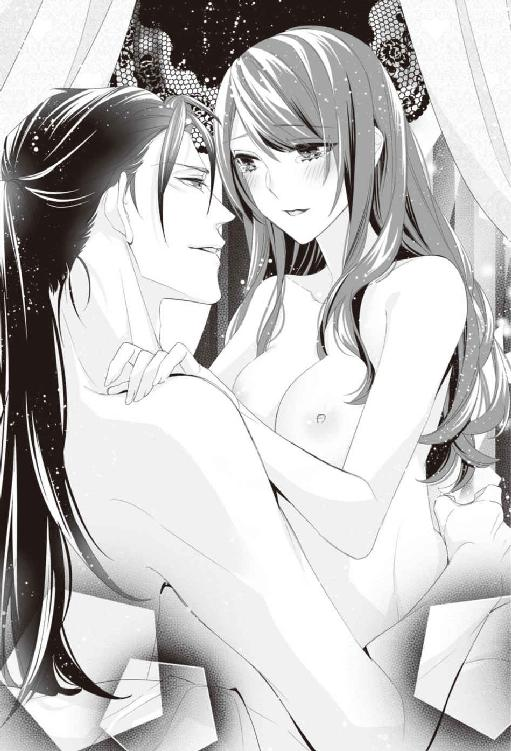
普段の清楚な美月からは想像のつかないような淫らな言葉が口づけの合間に零れ落ちていく。イサックは美月の乱れる様子に釣り込まれるように、ベッドに美月を再び押し倒すと、今度は全体重を掛けて、深く貫いていく。
「ひゃぁ......あぁぁぁあぁあああっ」
悲鳴に近い嬌声をあげながら、美月はイサックの腕の中で乱れる。
「......痛くはないか？」
一瞬素に戻って尋ねても、美月は淫らに啼くばかりで返事すらする余裕はない。不安になって躊躇すると、
「......ぁああっ......奥がっ......いいのっ......。もっと......いっぱいシテ......」
ようやく手に入れた運命の相手に、理性を失った甘い声で、はしたなくねだられて、イサックは本能が求めるまま、美月に溺れていく。
「......煽りすぎだ。もうお前が可愛すぎて、手加減なんて一切できない。知らんからな......」
その言葉をさらに煽るように、もっと、とねだる恋人に、自分を律しすぎた騎士の理性は完全に決壊して溶け堕ちていく。
「......ぁあ......イサック......」
最奥まで自らを受け入れると、美月は嬉しそうに微笑み、笑顔のままほろりと悦びの涙を流す。素直で愛らしい乱れ方に、イサックは美月への愛情で胸が苦しくなる。
（こんな可愛い奴......一度でも諦めようと思った俺は愚か者だ......）
そんな自分をそれでも、美月はずっと想っていてくれたのだ。
「美月......受け止めてくれるか？」
イサックの囁きに美月は幸せそうに頷く。そして美月が絶頂に達するのを見届けると、長い間耐え続けたイサックの欲望は、ようやく愛おしい女の最奥にむかって迸る。
「美月、愛している......」
イサックの欲望を体の奥で受け止めて、意識を落とす前に美月が聞いたのは、想いを込めた、イサックの優しい睦言だった。
【完】
あとがき
はじめまして、こんにちは。当麻咲来と申します。
２０１６年の年末に、『第一回 ムーンドロップスコンテスト』にて、最優秀賞を受賞させていただき、本作がデビュー作となります。
受賞の半年前、小説投稿サイト『ｍｅｃｕｒｕ（メクる）』で「ティーンズラブのダブルコンテストを開始します」という記事を見ました。そのうちの一つが、異世界転生をテーマにしたＴＬ小説のコンテストだと知り、今まで書いたことのなかったファンタジーＴＬを書いてみたいと思い立ち、「じゃあ、試しに書いてみよう」と、気づけばペンを取っていました。
このお話の主人公の美月は、突然、異世界の王立魔法図書館の司書にスカウトされます。私は学生時代、図書館学の授業中に聞いた、インド図書館学の父と呼ばれる、ランガナタンの「図書館五原則」の中の『図書館は進化する有機体である』という言葉にワクワクした記憶があり、いつかこれを元に小説を書きたい、と考えたことがアイデアの大元になっています。そしてＴＬということで、たっぷりとラブシーンが楽しめるように、ヒロインが図書館の書庫の『錠前』となって『鍵』を選ぶ、というお話を思いつき、私自身がこのお話をとても楽しみながら書いたことを、つい最近のように思い出します。
さまざまなタイプの男性と縁を結ぶヒロインですが、流されるだけではなく、きちんと意思や想いのある女性として魅力的に描けているといいな、と思っています。そして男性達もそれぞれ甲乙つけがたい素敵な男性に表現できているといいな、とも......。
今回挿絵を書いていただいたのはウエハラ蜂先生です。表紙も挿絵も......彼らの魅力を全開で描いてくださっていて、すごく嬉しかったです。デビュー作をこんなに素敵に表現していただいて私は幸せ者です。本当にありがとうございました。
そして未熟な私の作品を書籍にまとめていただいた編集部の皆さま、本当にありがとうございました。特に編集者Ｋさんには、最初から最後まで不慣れな私を親身になってフォローしていただきました。本当にありがとうございました。真っ赤な校正をみて、これだけこの話には、良くなる余地がある、と思ってすごく燃えました！
また、こうして一冊の本を世の中に出すために、出版社の皆様をはじめとして、本当にたくさんの方の力をいただいたのだな、と実感し、深く感謝しています。
最後に、私のデビュー作を手に取ってくださった皆さま。本当に、本当にありがとうございました。少しでも楽しい時間を過ごしていただけたらこれ以上嬉しい事はありません。ちなみに現在『ｍｅｃｕｒｕ』で続編を投稿していますが、今作の続編の希望や、感想などがあれば是非、出版社までお知らせいただけたら幸いです。また皆さまにお会いできることを祈りつつ......。
当麻咲来
Story
当麻咲来
Toma Sakuru
関東出身関西在住。うお座のＯ型。
第１回ムーンドロップスコンテスト最優秀賞＆読者賞を受賞し、本作にてデビュー。
読んだ人が、ハッピーな気持ちになれるお話を書いていきたいです。
ＨＰ：https://makemyday.amebaownd.com/
Illustration
ウエハラ蜂
Uehara Hachi
イラストレーター。主にヴィクトリアンＴＬ小説の装画・挿絵を担当。近刊に竹書房・蜜猫文庫「王子殿下の可愛いお針子 秘め事は塔の上で」（秀香穂里）、メディアソフト・ガブリエラ文庫「竜王は新妻を蜜夜に堕とす」（すずね凛）など。
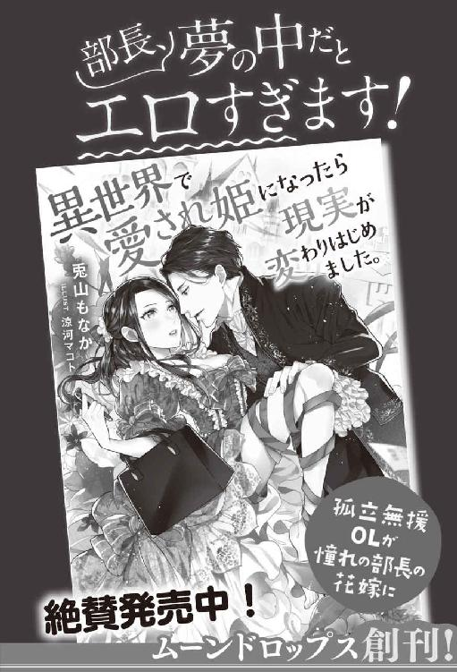
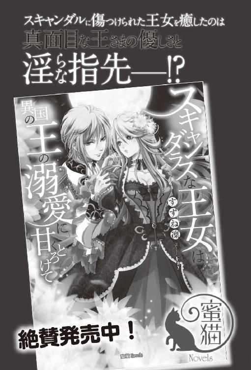
王立魔法図書館の［錠前］に転職することになりまして［電子書籍版］
発行日 ２０１７年８月１日 発行
著 者 当麻咲来
デザイン 百足屋ユウコ＋豊田知嘉（ムシカゴグラフィクス）
発行者 後藤明信
発行所 株式会社竹書房
〒１０２－００７２
東京都千代田区飯田橋２－７－３
ＴＥＬ ０３－３２６４－１５７６
ＵＲＬ http://www.takeshobo.co.jp
データ加工 株式会社暁印刷
 Sakuru Toma 2017
Sakuru Toma 2017
本書の一部あるいは全部を著作権者および株式会社竹書房に無断で複写・複製すること、および放送・上演・公衆送信（ホームページ上への掲載を含む）などは、法律で認められた場合を除き著作権の侵害となります。